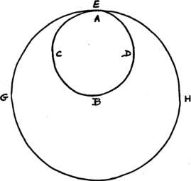

St Gregory Palamas
(1296- 1359)
(Volume 4, pp. 287-425)
Introductory Note
In the Calendar of the Orthodox Church, St Gregory Palamas (1296-1359)^ - 'St Gregory of Thessaloniki', as he is usually termed in Orthodox texts - enjoys a particular prominence, since his memory is celebrated not only on the day of his death (14 November) but also on the second Sunday in Lent. The first Sunday in Lent, commemorating the definitive restoration of the holy ikons in 843 at the end of the
iconoclast controversy, is known as 'the Sunday of Orthodoxy' or 'the Triumph of Orthodoxy'. If St Gregory's feast was assigned to the foUowing Sunday, this means that his successful defence of the divine and uncreated character of the light of Tabor and his victory over the heretics of his time - Barlaam, Akindynos, Gregoras and others - were seen as a direct continuation of the preceding celebration, as nothing less than a renewed Triumph of Orthodoxy.
Bom and brought up in Constantinople, St Gregory Palamas came from a distinguished family, closely linked with the imperial house; his father was a personal friend of the Emperor Andronikos II and tutor to the future Emperor Andronikos III. In his youth Gregory enjoyed for a time the spiritual guidance of Theoliptos of Philadelphia. After his father's death he gave up a promising secular career and around 1316, at the age of twenty, he traveled to Mount Athos with two of his brothers; at the same time his mother, with two of his sisters and many of their servants, entered convents in Thessaloniki. The next twenty years were passed by Gregory in monastic seclusion on the Holy Mountain, except for a six-year period when he left Athos because of
' On the life and theology of Palamas, the fundamental work remains the book of John Meyendorff, A Study ofGregoiy Polamas (London, 1964). MeyendorTs more popular study, St Gregory Palamas and Orthodox Spirituality (Crestwood, 1974), places Palamas in the broader context of Orthodox mystical theology from the fourth century onwards. For more recent bibliography, see the same author's article in Dictionnaire de Spiritualite xii (1983), cols 81-107. For selections from the Triads of Palamas, see Nicholas Gendle (tr.), Gregory Palamas: The Triads (The Classics of Western Spihtiiality: New York, 1983).
[V4] 288
St Gregory Palamas
Introductory Note
the danger of Turkish attacks and settled in a cave near Veroia. Apart from a relatively short time spent in cenobia, he chose - like St Gregory of Sinai - to follow the hesychast way of life in various small hermitages. Palamas' normal programme was to spend five days of each week in total solitude, joining his brethren for the Liturgy and other services on Saturday and Sunday. Such was the preparation for his future work as defender of the faith.
Around 1335-6 a new era commenced in St Gregory's life. For the next fourteen years he became involved in what is often termed the hesychast controversy. Initially his main opponent was a learned Greek from southern Italy, Barlaam the Calabrian, who maintained that the light seen by the hesychasts in prayer was not the uncreated light of the Godhead but simply a created and physical radiance. He also ridiculed the psychosomatic technique used by some of the monks, referring to them as omphalopsychoi, 'navel-psychics', people who locate the soul in the navel. Although, so far as his personal wishes were concerned Gregory would doubtless have preferred to remain in the stillness of his hermitage, he felt obliged to come to the defence of the spiritual tradition of the Holy Mountain and to act as spokesman for the monks. This forced him to leave Athos and to settle in the imperial capital. Gregory's standpoint was vindicated at the Council of Constantinople in 1341, and Barlaam now withdrew to the west. Unfortunately this did not mean the end of the controversy, which continued for another six years (1341-7), chiefly because the theological points at issue became entangled in politics. Gregory's main opponents during this second period of the dispute were his former friend Gregory Akindynos and the humanist scholar and statesman Nikiphoros Gregoras. The doctrinal position upheld by Gregory was eventually reaffirmed at two further councils held in Constantinople in 1347 and 1351, and since then it has remained the official teaching of the Orthodox Church.
The final period in St Gregory's career began in 1347, when he was consecrated Metropolitan of Thessaloniki, the second city of the Byzantine Empire. Because of the unstable political situation, he could not take possession of his see until 1350. As bishop he made strenuous efforts to reconcile the members of his flock to each other, deeply divided as they still were by the social and political conflicts of the 1340's. In his sermons he insisted upon the urgent need for social righteousness, consistently supporting the poor and oppressed. His
St Gregory Palamas
Introductory Note
preaching was also firmly sacramental: whereas the writings of Palamas to be found in The Philokalia make but few references to baptism and the eucharist, the balance is redressed by his pastoral homilies to the faithful of Thessaloniki. In 1354, while traveling by sea to Constantinople, he was taken captive by the Turks and spent a year as a prisoner in Asia Minor, where he took part in doctrinal discussions with the local Muslims. Following his death in 1359, a popular veneration for him sprang up almost immediately in Thessaloniki, in Constantinople and on the Holy Mountain, and only nine years later, in 1368, he was formally glorified as a saint.
The writings of St Gregory Palamas are extremely voluminous. A six-volume critical edition is in course of publication, prepared by Professor Panagiotis K. Christou, assisted by other scholars; five volumes have so far appeared (Thessaloniki, 1962-92). St Makarios and St Nikodimos included six works by Palamas in The PhilokaUa:
(i) To the Most Reverend Nun Xenia (Greek text, ed. P.K. Christou, vol. v, pp. 193-230). This was written around 1342-6, at a time when Palamas was suffering sharp persecution from his opponents, and he makes several allusions to his difficulties (§§ 3, 5, 6, 57). The work itself, however, is not an answer to his theological critics, but a statement of the traditional Orthodox teaching concerning the ascetic life, written at Xenia's request. It is the most substantial of Palamas's ascetic writings, and offers a general overview of his teaching about human nature, about death and the future life, about the passions and the virtues, and in particular about virginity and inward grief. Little is said concerning the higher stages of the spiritual way, but he refers briefly to the vision of divine light (§ 59) and to the uncreated character of the grace dwelling within the saints (§ 70). Nothing is known about the nun Xenia except that she had under her charge the daughters of 'the Great King', by which is probably meant the daughters of the late Emperor Andronikos III, who had died in 1341 (§ 7).
(2) A New Testament Decalogue (Greek text, ed. P.K. Christou, vol. v, pp. 251-60).^ This was probably composed by St Gregory Palamas towards the end of his life, during his episcopate, perhaps in the autumn of 1355. It is a brief summary of Christian moral teaching,
^ There is a previous English translation by S.A. Mousalimas in The Greek Orthodox Theological Review XXV (1980), pp. 297-305.
[V4] 290
St Gregory Palamas
Introductory Note
indicating how the Ten Commandments of the Mosaic Law are transformed within the life of the Church because of the incarnation. Addressed to the laity, it exemplifies St Gregory's pastoral concerns. Among other things he refers to the Orthodox teaching on ikons (§ 2), on spiritual fatherhood (§ 5), and on virginity and marriage (§ 6), but he does not discuss the specifically hesychast teaching concerning inner prayer.
(3) In Defence of Those who Devoutly Practise a Life of Stillness (= Triads I, ii: Greek text, ed. J. Meyendorff, Defense des saints hesychastes [Spicilegium Sacrum Lovaniense 30-31: Louvain, 1959], vol. i, pp. 75-101). This is a section of a much larger work, written by Palamas in defence of the hesychast tradition of prayer during 1337-9, chiefly in answer to the attacks of Barlaam the Calabrian. In the portion included in The Philokalia, Palamas' main concern is to uphold the legitimacy of the psychosomatic technique. The crouching posture adopted by the hesychast assists him in establishing a 'circular' movement within himself, so that his concentration is turned inward (§§ 5, 8). Slowing down the rhythm of the breathing also helps to hold in check the volatile and easily distracted intellect; but this control of the breathing is an exercise appropriate chiefly for 'beginners ... recently embarked on the spiritual path', who may abandon it once they have advanced 'to a higher stage' (§ 7). Yet, while attaching only limited importance to the physical method, Gregory Palamas recognizes that it reflects a genuinely Christian
doctrine of the human person, with the heart regarded symbolically as man's spiritual centre (§ 3). The body is God's creation, and we are to take full advantage of its Spirit-bearing potentialities; St Paul condemned, not the body itself, but only 'the body of this death' (§ 1).
(4) Three Texts on Prayer and Purity of Heart (Greek text, ed. P.K. Christou, vol. v, pp. 157-9). Here again St Gregory emphasizes the centrality of the heart (§5). In this brief work there is no specific reference to the concerns of the hesychast controversy, and it was perhaps written in the early 1330's, before the outbreak of the dispute.
(5) Topics of Natural and Theological Science and on the Moral and Ascetic Life: One Hundred and Fifty Texts (Greek text, ed. Robert E. Sinkewicz [Pontifical Institute of Mediaeval Studies, Studies and Texts 83: Toronto, 1988]). This important but difficult work has been variously dated: some place it at the end of St Gregory's life, others assign it to the years 1344-7, but most probably it was composed in
[V4] 291
St Gregory Palamas
Introductory Note
1349-50. It provides a comprehensive picture of his theology, constituting what Fr Meyendorff calls 'a sort of systematic siimma'. It falls into two distinct parts:
(a) §§ 1-63: a general survey of the divine economy of creation and salvation:^
(i) The non-etemity of the cosmos: the world had an origin, and it will have a consummation (§§ 1-2).
(2) The celestial realm (§§ 3-7).
(3) The terrestrial realm (§§ 8-14).
(4) The natural human faculties: sense perception, the imaginative faculty, the intellect (§§ 15-20).
(5) Spiritual knowledge, and its superiority to Hellenic philosophy (§§ 21-29).
(6) Human nature, compared with that of the angels and the animals; the soul and its immortality (§§ 30-33).
(7) God the Holy Trinity and the Triadic image of God in the human person (§§ 3,V-40).
(8) The fallen state of man (§§ 41—63). Here St Gregory emphasizes that man is more perfectly in God's image than the angels (§§ 62-63; but cf § 78).
(b) §§ 64-150: a refutation of false teachings concerning the divine light of Tabor and the uncreated energies of God. This is directed primarily against Akindynos rather than Barlaam, who at the time of writing had already withdrawn from the dispute and returned to Italy. St Gregory Palamas, supporting his argument with frequent quotations from the fathers, maintains that there is a distinction-in-unity between God's essence and His energies. The divine essence signifies God's absolute transcendence, and we humans will never participate in it, either in this life or in the age to come. The divine energies, on the other hand, permeate the entire creation, and we humans participate in them by grace (§§ 65, 78). Thus deification (theosis) and union with God signify union with God's energies, not His essence (§ 75). That which the energies effect and produce is created, but the divine energies themselves are supernatural, eternal and uncreated (§§ 72-73). The energies are Trinitarian, proceeding from all three persons at
' It has to be said that the cosmological aspects of this survey reflect very largely Palamas' own personal views and must not be taken to represent Christian cosmology as such. It should also be noted that Palamas' account of the thought of 'the Greek sages' makes it clear that he was not closely familiar with their works.
[V4] 292
St Gregory Palamas
Introductory Note
once (§§ 72, 112). They are not to be identified with the hypostasis of the Holy Spirit (§ 74.). The threefold distinction within God between the one essence, the three hypostases, and the multiplicity of energies in no way destroys the divine unity, for God 'is indivisibly divided and is united dividedly, and yet in spite of this suffers neither multiplicity nor compositeness' (§ 81). The light which shone from Christ at the transfiguration on Tabor is not created, natural or physical, but it is the uncreated energies of God. It is this uncreated glory that the saints behold in prayer, and that will shine from Christ at the second coming. Thus, even when experienced in this present life, it is an eschatological glory, the eternal radiance of the age to come (§§ 74, 146-50).
(6) The Declaration of the Holy Mountain (also known as 'The Hagioritic Tome': Greek text, ed. P.K. Christou, vol. ii, pp. 567-78). This short statement of the hesychast standpoint, drafted by St Gregory Palamas in 1340, is of particular importance because it bears the signatures of leading Athonite monks and also of the local hierarch, the Bishop of Hierissos in Chalkidiki. This makes it clear that Palamas is expressing, not merely his own personal opinion, but the accepted teaching of the Holy Mountain. Palamas emphasizes the eschatological character of the divine light, which is a foretaste and anticipation of the glory of the age to come. The monks who bear witness to the uncreated light fulfill a prophetic role within the Church: just as the Old Testament prophets foretold Christ's first coming at the incarnation, so the monks as the prophets of the new covenant point forward to His second coming (Prologue). Here as elsewhere Palamas expresses a holistic vision of the human person: the body is glorified along with the soul (§ 4.). Our theosis is in no sense merely symbolical or metaphorical: it is a genuine and specific reality, a pure gift of grace experienced even in this present life (§ 2).
Contents
To the Most Reverend Nun Xema VOLUME 4: Page 293
A New Testament Decalogue 323
In Defense of Those Who Devoutly
Practice a Life of Stillness 331
Three Texts On Prayer and Purity of Heart 343
Topics of Natural and Theological Science
And on the Moral and Ascetic Life - 150 Texts 346
The Declaration of the Holy Mountain
In Defense of Those Who Devoutly
Practice a Life of Stillness 418
[V4] 293
St Gregory Palamas To the Most Reverend Nun Xenia
1. Those who truly desire to live a monastic life find all talk troublesome, whether it is with people at large or with those living in the same way as themselves. For it breaks the continuity of their joyful intercourse with God and
sunders, and sometimes shatters, that one-pointed concentration of the intellect which constitutes the inward and true monk. For this reason one of the fathers, when asked why he avoided people, answered that he could not be with God while associating with men. Another father, speaking of these things from experience, affirms that not only talk with others but even the sight of them can destroy the steady quietude of mind possessed by those who practice stillness.
2. If you observe carefully you will find that even the thought of someone's approach, and the expectation of a visit and of having to talk, disrupt your mental tranquility. If you write you burden your intellect with even more demanding worries. For if you are among those who are well advanced on the spiritual path and who through their soul's good health have attained God's love, then though this love will be active within you while you write, it will be so only indirectly and not unalloyed. But if you are one who still falls into many maladies and passions of the soul - and such in truth am I - and must continually cry out to God, 'Heal me, for I have sinned against Thee' (cf. Ps. 41:4), then it is unwise for you to leave off prayer before being healed and of your own accord to occupy yourself with something else. In addition, through your writings you converse also with those who are not present, and often what you write falls into the hands of others, sometimes of those whom you would not wish to read it, since writings usually survive the death of their author.
[V4] 294
St Gregory Palamas To the Most Reverend Nun Xenia
3. For this reason many of the fathers who practiced extreme stillness could not bear to write anything at all, although they were in a position to set forth great and profitable things. It is true that I myseh", who totally lack the strict observance of the fathers, have the habit of writing, although only when some great need compels me to do so. Now, however, those who look upon certain of my writings with malicious eyes and seek to find in them grounds to do me wrong have made me more reluctant to write. Such people, according to St Dionysios, are passionately attached to the component parts of letters, to meaningless penstrokes, to unfamiliar syllables and words - things that do not touch their power of noetic understanding. It is indeed witless, perverse and entirely inappropriate to want to understand divine things and yet to pay attention, not to the purpose of what is said, but to the words alone.
4. Yet I know that I have been justly censured, not because what I have written conflicts with the fathers - for by the grace of Christ I have been kept from doing this - but because I have written on things whereof I am unworthy, perhaps, like another Uzzah, trying through words to prevent the chariot of truth from overturning (cf. 2 Sam. 6:6-7). Yet my punishment was not a matter of divine wrath, but a fit measure of instruction. On account of this my adversaries were not permitted to get the better of me. Yet this, too, may have been due to my unworthiness, for, it seems, I was not worthy, or capable, of suffering anything on behalf of the truth, and so sharing joyfully in the sufferings of the saints.
5. Indeed, was not St John Chrysostom, who while yet clothed with the body was united to the Church of the firstborn in the heavens, and who as no other truthfully, clearly and fluently wrote about holiness - was not he cut off from the Church and condemned to exile on the charge of holding and expounding the doctrines of Origen? And St Peter, the chief of the foremost choir of the Lord's disciples, says that unlearned and unstable people in his days distorted difficult passages in St Paul's epistles and brought destruction upon themselves as a result (cf 2 Pet. 3:16).
6. I myself had intended to give up writing altogether because of the somewhat trivial attacks made upon me, even though those who attacked me have been synodically condemned. But now you, most reverend mother, through your constant requests in letters and
[V4] 295
St Gregory Palamas To the Most Reverend Nun Xenia
messages, have persuaded me once again to write words of counsel, though indeed you have no great need of counsel. For by the grace of Christ you have gained, together with old age, a venerable understanding, and for many years you have studied and applied the ordinances of the divine commandments, dividing your life in due measure between obedience and stillness. In this way you have wiped clean the tablet of your soul, so that it is capable of receiving and preserving whatever God writes on it. But the soul completely dominated by its desire for spiritual instruction is never sated.
7. It is because of this that Wisdom says of herself, 'Those who eat Me will still be hungry' (Eccles. 24:21); while the Lord, who has instilled this divine desire in the soul, says of Mary who chose 'what is best' that it will not be taken away from her (cf. Luke 10:42). But you perhaps may be in need of such words of instruction for the sake of the daughters of the Emperor who live under your guidance, and especially for the sake of the nun Synesis, who is of your own family and whom you have longed to espouse to Christ, the bestower of mcorruption. And, indeed, you imitate Him in that, just as He truly assumed our form for our sakes, so you have now assumed the role of a novice who is in need of instruction. Therefore, although I am not rich in words, and particularly in such words as these, I shall repay the debt of Christian love from what I now possess, showing thus my good will as well as my obedience and my readiness to keep the commandment, 'Give to him that asks' (Matt. 5:42).
8. You must know, then, reverend mother - or rather, let the maidens who have chosen to live a godly life learn through you - that there is a death of the soul, though by nature the soul is immortal. This is made clear by the beloved disciple, St John the Theologian, when he says, 'There is sin that leads to death' and 'There is sin that does not lead to death' (1 John 5:16, 17). By death he certainly means here the death of the soul. And St Paul says, 'Worldly sorrowfulness produces death' (2 Cor. 7:10) - death, certainly, of the soul. Again, St Paul says, 'Awake, you who sleep, and arise from the dead, and Christ will give you light' (Eph. 5:14). From which 'dead' is one enjoined to arise? Clearly, from those who have been killed by 'sinful desires that wage war against the soul' (1 Pet. 2:11). Hence the Lord also described those who live in this vain world as 'dead', for when one of His disciples asked to be allowed to go and bury his father. He refused permission, and told him to follow Him, leaving the dead to
[V4] 296
St Gregory Palamas To the Most Reverend Nun Xenia
bury their dead (cf Matt. 8 : 22). Here, then, the Lord clearly calls those living people 'dead', in the sense that they are dead in soul.
9. As the separation of the soul from the body is the death of the body, so the separation of God from the soul is
the death of the soul. And this death of the soul is the true death. This is made clear by the commandment given in paradise, when God said to Adam, 'On whatever day you eat from the forbidden tree you will certainly die' (cf. Gen. 2:17). And it was indeed Adam's soul that died by becoming through his transgression separated from God; for bodily he continued to live after that time, even for nine hundred and thirty years (cf. Gen. 5:5).
10. The death, however, that befell the soul because of the transgression not only crippled the soul and made man accursed; it also rendered the body itself subject to fatigue, suffering and corruptibility, and finally handed it over to death. For it was after the dying of his inner self brought about by the transgression that the earthly Adam heard the words, 'Earth will be cursed because of what you do, it will produce thorns and thistles for you; through the sweat of your brow you will eat your bread until you return to the earth from which you were taken: for you are earth, and to earth you will return' (Gen. 3:17-19).
11. Even though at the regeneration to come, in the resurrection of the righteous, the bodies of the godless and sinners will also be raised up, yet they will be given over to the second death, age-long chastisement, the unsleeping worm (cf. Mark 9:44), the gnashing of teeth, the outer, tangible darkness (cf. Matt. 8:12), the murky and unquenchable fire of Gehenna (cf. Matt. 5:22), in which, as the prophet says, the godless and sinners 'will be burned up together and there will be none to quench the flame' (Isa. 1:31). For this is the second death, as St John has taught us in the Revelation (cf. Rev. 20:14). Hark, too, to the words of St Paul, 'If you live in accordance with your fallen self, you will die, but if through the Spirit you extirpate the evil actions of your fallen self, you will live' (Rom. 8:13). Here he speaks of life and death in the age to be: life is the enjoyment of the everlasting kingdom, death agelong chastisement.
12. Thus the violation of God's commandment is the cause of all types of death, both of soul and body, whether in the present life or in that endless chastisement. And death, properly speaking, is this: for the soul to be unharnessed from divine grace and to be yoked to sin. This death, for those who have their wits, is truly dreadful and something to
[V4] 297
St Gregory Palamas To the Most Reverend Nun Xenia
be avoided. This, for those who think aright, is more terrible than the chastisement of Gehenna. From this let us also flee with all our might. Let us cast away, let us reject all things, bid farewell to all things: to all relationships, actions and intentions that drag us downward, separate us from God and produce such a death. He who is frightened of this death and has preserved himself from it will not be alarmed by the oncoming death of the body, for in him the true life dwells, and bodily death, so far from taking true life away, renders it inalienable.
13. As the death of the soul is authentic death, so the life of the soul is authentic life. Life of the soul is union with God, as life of the body is its union with the soul. As the soul was separated from God and died in consequence of the violation of the commandment, so by obedience to the commandment it is again united to God and is quickened. This is why the Lord says in the Gospels, 'The words I speak to you are spirit and life' (John 6:63). And having experienced the truth of this, St Peter said to Him, 'Thy words are the words of eternal life' (John 6:68). But they are words of eternal life for those who obey them; for those who disobey, this commandment of life results in death (cf. Rom. 7:10). So it was that the apostles, being Christ's fragrance, were to some the death-inducing odor of death.
while to others they were the hfe-inducing odor of life (of. 2 Cor. 2:16).
14. And this life is not only the life of the soul, it is also the life of the body. Through resurrection the body is also rendered immortal: it is delivered not merely from mortality, but also from that never-abating death of future chastisement. On it, too, is bestowed everlasting life in Christ, free of pain, sickness and sorrow, and truly immortal.
The death of the soul through transgression and sin is, then, followed by the death of the body and by its dissolution in the earth and its conversion into dust; and this bodily death is followed in its turn by the soul's banishment to Hades. In the same way the resurrection of the soul - its return to God through obedience to the divine commandments - is followed by the body's resurrection and its reunion with the soul. And for those who experience it the consequence of this resurrection will be true mcorruption and eternal life with God: they will become spiritual instead of non-spiritual, and will dwell in heaven as angels of God (cf. Matt. 22:30).
15. As St Paul says, 'We shall be caught up in the clouds to meet the Lord in the air, and so we shall be with the Lord for ever' (1 Thess. 4:17).
[V4] 298
St Gregory Palamas To the Most Reverend Nun Xenia
The Son of God, who in His compassion became man, died so far as His body was concerned when His soul was separated from His body; but this body was not separated from His divinity, and so He raised up His body once more and took it with Him to heaven in glory. Similarly, when those who have lived here in a godly manner are separated from their bodies, they are not separated from God, and in the resurrection they will take their bodies with them to God, and in their bodies they will enter with inexpressible joy there where Jesus has preceded us (cf Heb. 6:20) and in their bodies they will enjoy the glory that will be revealed in Christ (cf. 1 Pet. 5:1). Indeed, they will share not only in resurrection, but also in the Lord's ascension and in all divine life. But this does not apply to those who live this present life in an unregenerate manner and who at death have no communion with God. For though all will be resurrected, yet the resurrection of each individual will be in accordance with his own inner state (cf. 1 Cor. 15:23). He who through the power of the Spirit has extirpated his materialistic worldly proclivities in this life will hereafter live a divine and truly eternal life in communion with Christ. But he who through surrendering to his materialistic and worldly lusts and passions has in this life deadened his spiritual being will, alas, hereafter be co-judged with the devil, the agent-provocateur of evil, and will be handed over to unbearable and immeasurable chastisement, which is the second and final death.
16. Where did true death - the death that produces and induces in soul and body both temporal and eternal death -have its origin? Was it not in the realm of life? Thus was man, alas, at once banished from God's paradise, for he had imbued his life with death and made it unfit for paradise. Consequently true life - the life that confers immortality and true life on both soul and body - will have its origin here, in this place of death. If you do not strive here to gain this life in your soul, do not deceive yourself with vain hopes about receiving it hereafter, or about God then being compassionate towards you. For then is the time of requital and retribution, not of sympathy and compassion: the time for the revealing of God's wrath and anger and just judgment, for the manifestation of the mighty and sublime power that brings chastisement upon unbelievers. Woe to him who falls into the hands of the living God (cf. Heb. 10:31)! Woe to him who hereafter experiences the Lord's wrath, who has not acquired in this life the fear of God and
so come to know the might of His anger, who [V4] 299
St Gregory Palamas To the Most Reverend Nun Xenia
has not through his actions gained a foretaste of God's compassion! For the time to do aU this is the present hfe. That is the reason why God has accorded us this present life, giving us a place for repentance. Were this not the case a person who sinned would at once be deprived of this life. For otherwise of what use would it be to him?
17. This is why no one should give way to despair, even though the devil finds various means by which to insinuate it not only into those who live carelessly but also into those who practice the ascetic life. If, then, the time of this life is time for repentance, the very fact that a sinner still lives is a pledge that God will accept whoever desires to return to Him. Free will is always part and parcel of this present life. And it lies within the power of free will to choose or to reject the road of life or the road of death that we have described above; for it can pursue whichever it wishes. Where, then, are the grounds for despair, since all of us can at all times lay hold of eternal life whenever we want to?
18. Do you not perceive the grandeur of God's compassion? When we are disobedient He does not immediately condemn us, but He is longsuffermg and allows us time for conversion. Throughout this period of longsuffermg He gives us power to gain divine sonship if we so wish. Yet why do I say 'gain sonship'? He gives us power to be united with Him and to become one spirit with Him (cf. 1 Cor. 6:17).
If, however, during this period of longsuffering we pursue the opposite path and choose death rather than true life, God does not take away the power that He gave us. And not only does He not take it away, but He reminds us of it again and again. From the dawn till the dusk of this life. He goes round, as in the parable of the vineyard, seeking us out and inviting us to engage in the works of life (cf. Matt. 20:7-15). And who is it that calls us in this way and would engage us in His service? It is the Father of our Lord Jesus Christ, the God of all solace (cf. 2 Cor. 1:3). And who is the vineyard into which He calls us to work? The Son of God, who said, 'I am the vine' (cf. John 15:1). For, indeed, no one can come to Christ, as He Himself said in the Gospels, unless the Father draws him (cf. John 6:44). Who are the branches? We ourselves are. For directly afterwards Christ says, 'You are the branches. My Father is the vine-dresser' (cf. John 15:1, 5).
19. The Father, therefore, through the Son reconciles us to Himself, not taking into account our offences (cf. 2 Cor. 5:19); and
[V4] 300
St Gregory Palamas To the Most Reverend Nun Xenia
He calls us, not in so far as we are engaged in unseemly works, but in so far as we are idle; although idleness is also a sin, since we shall give an account even for an idle word (cf Matt. 12:36). But, as I said. God overlooks former sins and calls us again and again. And what does He call us to do? To work in the vineyard, that is, to work
on behalf of the branches, on behah" of ourselves. And afterwards - 0 the incomparable grandeur of His compassion! - He promises and gives us a reward for toiling on our own behalf. 'Come,' He says, 'receive eternal life, which I bestow abundantly; and as though in your debt I reward you in full for the labor of your journey and even for your very desire to receive eternal life from Me.'
20. Who does not owe the price of redemption to the Redeemer from death? Who will not give thanks to the Giver of Life? But He even promises to give us a reward as well, an inexpressible reward. 'I am come'. He says, 'so that they may have life, and have it in all its fullness' (John 10:10). What is meant by 'in all its fullness'? He came not only to be and to live with us, but to make us His brethren and coheirs. This, it seems, is the reward granted 'in all its fullness' to those who hasten to the life-giving Vine and establish themselves as branches in it, who labor on behalf of themselves and who cultivate it on behalf of themselves. And what do they do? First, they cut away everything that is superfluous and that, instead of promoting, impedes the bearing of fruit worthy of the divine cellars. And what are these things? Wealth, soft living, vain honors, all things that are transitory and fleeting, every sly and abominable passion of soul and body, all the litter gathered while daydreaming, everything heard, seen and spoken that can bring injury to the soul. If you do not cut out these things and prune the heart's offshoots with great assiduity, you will never bear fruit fit for eternal life.
21. Married people can also strive for this purity, but only with the greatest difficulty. For this reason all who from their youth have by God's mercy glimpsed that eternal life with the mind's keen eye, and who have longed for its blessings, avoid getting married, since likewise in the resurrection, as the Lord said, people neither marry nor are given in marriage, but are 'as the angels of God' (Matt. 22:30). Therefore those who wish to become 'as the angels of God' will even in this present life, like the sons of the resurrection, rightly place themselves above bodily intercourse. Moreover, the occasion for sinning was first provided by the wife. Consequently those who do not
[V4] 301
St Gregory Palamas To the Most Reverend Nun Xenia
wish ever to give the devil any way of catching hold of them should not marry.
22. If this body of ours is hard to harness and hard to lead towards virtue - if, indeed, we carry it about like an innate opposing force -why should we ever entrust ourselves to it, thereby increasing the difficulty we have in attaining a state of virtue by binding ourselves to many different bodies? How will the woman, who is tied by natural bonds to a husband, children and all her blood relations, possess that freedom for which she is enjoined to strive? How will she, when she has taken upon herself the care of so many, devote herself, free from care, to the Lord? How will she possess tranquility when entangled with such a multitude?
23. For this reason she who is really a virgin - who models herself on Him who is virgin, who was bom of a Virgin and who is the Bridegroom of the souls that live in true virginity - will shun not merely carnal wedlock but also worldly companionship, having renounced all kindred, so that like St Peter she can say boldly to Christ, 'We have left all and followed Thee' (Matt. 19:27). If an earthly bride leaves father and mother for the sake of a mortal bridegroom and cleaves to him alone, as Scripture says (cf. Gen. 2:24), what is untoward in a woman leaving her parents for the sake of an immortal Bridegroom and bridal chamber? How can she whose 'citizenship is in heaven' (Phil. 3:20) have kinship on the earth? How can she who is not an offspring of the flesh but of the Spirit (cf. John
1:13) have a fleshly father or mother or blood relative? How will she who has renounced the carnal life, and so as far as possible has spumed and continues to spurn her own body, entertain any relationship whatever to bodies that are not her own? And if, as they say, likeness leads to friendship and everything adheres to what is like itself, how can the virgin align herself with worldly loves and fall victim once again to the disease of self-adornment? 'Love of the world is hostility to God' (Jas. 4:4), says the apostle who is our bridal escort into the spiritual bridal chamber. Thus a virgin who reverts to worldly affections is not only in danger of separating herself from the immortal Bridegroom, but also of being at enmity with him.
Do not be astonished or distressed by the fact that no criticism is made in Scripture of women who live in wedlock, caring for the things of the world but not for the things of the Lord (cf. 1 Cor. 7:34), while at the same time those who have vowed themselves to virginity
[V4] 302
St Gregory Palamas To the Most Reverend Nun Xenia
are forbidden even to approach worldly things and are never allowed to live in comfort. Yet St Paul also warns those who live in wedlock: 'The time is short; so let those who have wives live as though they had none and those involved in worldly affairs as though they were not involved' (1 Cor. 7:29, 31): and this, 1 think, is harder to accomplish than the keeping of one's virginity. For experience shows that total abstinence is easier than self-control in food and drink. And one might justly and truly say that if someone is not concerned to save himself, we have nothing to say to him, but if he is so concerned, then he should know that a life led in virginity is more easily accomplished and less laborious than married life.
24. Yet let us leave these matters and return, 0 virgin, bride of Christ, branch of the Vine of life, to what was said above. The Lord says, '1 am the vine, you are the branches. . . . My Father is the vine-dresser... He prunes every branch in Me that bears fruit, so that it may bring forth more fruit' (John 15:1, 2, 5). Reflecting on His careful concern for yourself, recognize what fruit your virginity should bear and how great is the Bridegroom's affection for you; and rejoice the more and strive in return to be still more obedient to Him. Gold that has been mixed with brass is called counterfeit, but brass that has been smelted with gold dust appears brighter and more radiant than its natural color. Similarly, it is an honorable thing for married women to long for you and the chastity of your way of life, but for you to yearn for them brings dishonor upon you. For such a yearning returns you to the world, first because though you have died to the world you still want to have relations with those who live in the world and to share their life, and second because being in contact with such persons leads you to desire what they desire for themselves and their kindred, that is, abundance in all things pertaining to this life - wealth, fame, glory, and the delight that these things bring. In this way you will fall away from your Bridegroom's will, for in the Gospels He clearly disparages such things, saying, 'Woe to the rich, woe to those who mock, woe to those who stuff themselves, woe to you when everyone speaks well of you' (cf Luke 6:24-26).
25. Why does He deplore such people? Is it not because their souls are dead? What kinship can the bride of life have with the dead? What communion with those who walk in the opposite direction? Wide and broad is the way they travel; and unless they restrain themselves by blending some aspects of your life with theirs, they will lapse into total
St Gregory Palamas To the Most Reverend Nun Xenia
destruction. But you should enter through the strait and narrow gate, the way that leads to life (cf. Matt. 7:13-14). You cannot pass through this narrow gate and along this way while carrying a load of self-glory, or a cornucopia of self-indulgence, or the burden of money and possessions.
26. But when you hear that other path of life called 'broad', do not suppose it to be free of sorrow, for in fact it is filled with many oppressive misfortunes. He calls it 'broad' and 'wide' because there are many who pass along it (cf. Matt. 7:13), each bearing a heavy load of the rubbish of this fleeting material life. But yours is a narrow path, 0 virgin, not even wide enough for two together. None the less, many at first embroiled in the world have renounced it on the death of their spouses, emulating your supernatural way of life and choosing to journey along your path so as to share in its rewards. And St Paul enjoins us to honor such people, for with hope in God they persevere in supplication and prayer (cf 1 Tim. 5:3, 5). Although the narrow way of life involves affliction, it also brings solace, confers the kingdom of heaven and fosters salvation. But on the broad path what is pleasant and what is grievous are both alike. For, as St Paul says, worldly sorrowfulness produces death, while 'godly sorrow produces a saving repentance that is not to be regretted' (2 Cor. 7:10).
27. It is for this reason that the Lord blesses the opposite of what the world calls blessed, saying, 'Blessed are the poor in spirit, for theirs is the kingdom of the heavens' (Matt. 5:3). In saying 'Blessed are the poor', why did He add 'in spirit"? So as to show that He blesses and commends humility of soul. And why did He not say, 'Blessed are those whose spirit is poor', thus indicating the modesty of their manner of thinking, but 'Blessed are the poor in spirit"? So as to teach us that poverty of body is also blessed and fosters the kingdom of heaven, but only when it is accomplished in accordance with the soul's humility, when it is united to it and originates from it. By calling the poor in spirit blessed He wonderfully demonstrated what is the root, as it were, and mainspring of the outward poverty of the saints, namely, their humility of spirit. For from our spirit, once it has embraced the grace of the gospel teaching, flows a wellsprmg of poverty that 'waters the whole face of our ground' (cf. Gen. 2:6), I mean our outward self, transforming us into a paradise of virtues. Such, then, is the poverty that is called blessed by God.
28. 'The Lord has given a concise saying upon the earth', as the
[V4] 304
St Gregory Palamas To the Most Reverend Nun Xenia
prophet observes (cf. Isa. 10:23. LXX). Having pointed out and called blessed the root cause of voluntary and many-sided poverty. He also teaches us in this single short saying about its many effects. For we can choose to shed possessions, and to be frugal and abstinent, simply in order to be praised by other people. In such a case we are not 'poor in spirit'. Hypocrisy is bom of self-conceit, and self-conceit is contrary to being poor in spirit. But if you possess a contrite, lowly and humble spirit you cannot but rejoice in outward simplicity and self-abasement, because
you will regard yourself as unworthy of praise, comfort, prosperity and all such things. The poor man deemed blessed by God is he who considers himself unworthy of these things. It is he who is really poor, being poor in full measure. It was on this account that St Luke also wrote, 'Blessed are the poor' (6:20), without adding 'in spirit'. These are they who have hearkened to the Son of God, following Him and assimilating themselves to him; for He said, 'Learn of Me, for I am gentle and humble in heart, and you will find rest for your souls' (Matt. 11:29). Hence 'theirs is the kingdom of heaven', for they are 'joint-heirs with Christ' (Rom. 8:17).
29. The soul is tripartite and is considered as having three powers: the intelligent, the mcensive, and the appetitive. Because the soul was ill in all three powers, Christ, the soul's Healer, began His cure with the last, the appetitive. For desire unsatisfied fuels the incensive power, and when both the appetitive and incensive powers are sick they produce distraction of mind. Thus the soul's incensive power will never be healthy before the appetitive power is healed; nor will the intelligence be healthy until the other two powers are first restored to health.
30. If you examine things you will find that the first evil offspring of the appetitive power is love of material possessions. For the desires that help men to live are not blameworthy, as is clear from the fact that they are with us from a very early age. Love of possessions, however, comes a little later - although still in childhood - and in this way it is evident that it does not have its ground in nature, but is a matter of individual choice. St Paul rightly termed it the root of all evils (cf. 1 Tim. 6:10), and the evils that it usually begets are niggardliness, trickery, rapacity, thievery and, in short, greed in all its forms, which St Paul called a second idolatry (cf. Col. 3:5). Even in the case of evils that do not spring directly from it, greed nearly always provides the fuel for their sustenance.
31. Such evils, begotten of the love for material things, are passions
[V4] 305
St Gregory Palamas To the Most Reverend Nun Xenia
of a soul that has no zeal for spiritual work. We can free ourselves more easily from passions that are a matter of our own volition than from those rooted in nature. It is disbelief in God's providence that makes it difficult for us to eradicate the passions that arise from our love of possessions, for such disbelief leads us to put our trust in material riches. 'It is easier', said the Lord, 'for a camel to go through the eye of a needle than for a rich man to enter into the kingdom of God' (Matt. 19:24). But if we trust in material riches, this means nothing to us; we long for worldly, perishable wealth, not for a kingdom that is heavenly and eternal. And even when we fail to acquire that wealth, the mere desire for it is extremely pernicious. For, as St Paul says, those who want to be rich fall into the temptations and snares of the devil (cf 1 Tim. 6:9). Yet when wealth comes, it proves itself to be nothing, since its possessors, unless they are brought to their senses by experience, still thirst after it as though they lacked it. This love that is no love does not come from need; rather the need arises from the love. The love itself arises from folly, the same folly that led Christ, the Master of all, justly to describe as foolish the man who pulled down his bams and built greater ones (cf Luke 12:18-20).
32. How could such a person not be a fool when for the sake of things that cannot profit him - 'For a man's life does not consist in the abundance of the things that he possesses' (Luke 12:15) - he gives up what is most profitable of all? He fails to become a wise merchant, selling even necessities, so far as possible, and in this way adding to the
capital of a truly bountiful and gainful form of commerce or husbandry - a husbandry, indeed, which even before the harvest time multiplies a hundredfold that which was sown, thus foreshowing that the profit to come and the harvest shortly to be reaped will be indescribable and unimaginable. And the curious thing is that the smaller the storerooms the seed comes from the larger will the harvest be.
Hence there is no justification in aspiring to become rich even for a good cause. The truth is that people are frightened of being poor because they have no faith in Him who promised to provide all things needful to those who seek the kingdom of God (cf. Matt. 6:33). It is this fear that spurs them, even when they are endowed with all things, and it prevents them from ever freeing themselves from this sickly and baneful desire. They go on amassing wealth, loading themselves with a worthless burden or, rather, enclosing themselves while still living in a most absurd kind of tomb.
33. Dead men are simply buried in [V4] 306
St Gregory Palamas To the Most Reverend Nun Xenia
the earth, but the intellect of a living pinchpenny is buried in the dust and earth of gold. Further, for those whose senses are in a healthy state this grave smells worse than the normal one, and the more earth one throws on it, the stronger the smell grows. For the festering wound of wretched persons buried in this way spreads, and its stench rises up to heaven, even up to the angels of God and to God Himself. They have become loathsome and repulsive, stinking on account of their folly, as David puts it (cf Ps. 38:5). Voluntary poverty - not undertaken to impress others - delivers men from this foul-smelling and deadly passion; and such poverty is precisely the 'poorness in spirit' that the Lord called blessed.
34. Yet a monk who has this passion cannot be obedient. If he persists in serving it diligently, there is a grave risk of him lapsing also into incurable maladies of the body. Gehazi in the Old Testament and Judas in the New Testament are sufficient examples of this. The first sprouted leprosy as evidence of his incurable soul (cf. 2 Kgs. 5:27), while the second hanged himself in the field of blood, and falling headlong he burst his belly and his intestines gushed out (cf. Acts 1:18). If, then, renunciation precedes obedience, how can it be the other way round? And if renunciation is the initial step in the monastic profession, how can anyone who has not first renounced material possessions succeed in any of the other struggles of monastic life? Moreover, if a monk is incapable of practicing obedience, how will he be able to cultivate stillness by himself in a cell, devoting himself to solitude and persevering in prayer? But as the Lord says, 'Where your treasure is, there will your intellect be also' (Matt. 6:21). How, then, can you gaze noetically at Him who sits in heaven on the right hand of the divine Majesty (cf. Heb. 1:3) while you are still amassing treasure upon the earth? How will you inherit that kingdom which this passion entirely prevents you even from conceiving in your mind? 'Blessed', therefore, 'are the poor in spirit, for theirs is the kingdom of heaven.' Do you see how many passions the Lord has cut away with one beatitude?
35. Yet this is not all. If love for material things is the first offspring of evil desire, there is a second offspring which is even more to be shunned, and a third that is no less evil. What is the second? Self-flattery. We encounter this passion while we are still quite young, as a kind of prelude to the love for worldly things which we encounter later. Here I am referring to the self-flattery that expresses itself in the
St Gregory Palamas To the Most Reverend Nun Xenia
beautification of the body through expensive clothing and so on. It is what the fathers caU worldly vanity, to distinguish it from the other kind of vanity, which afflicts those noted for their virtue and is accompanied by self-conceit and hypocrisy, whereby the devil contrives to plunder and disperse our spiritual riches.
36. You can be completely healed from all these things if you become aware of divine glory and long for it while regarding yourself as unworthy of it, and if you patiently endure people's scorn while thinking you deserve it. In addition, you should esteem God's glory above your own, in conformity with the Psalmist's words, 'Not unto us, 0 Lord, not unto us, but unto Thy name give glory' (Ps. 115:2). And should you feel that you have done something praiseworthy, you should attribute it to God, proclaiming Him as its cause and gratefully praising Him for it and not yourself. In your rejoicing you will regard each virtue as a gift, and will not become conceited about it, since it is not your personal achievement; on the contrary, you will grow more humble, and night and day will fix your mental eyes on God, as the eyes of the handmaid - to use the Psalmist's words again - are fixed on the hands other mistress (cf Ps. 123:2). At the same time you will be full of fear lest, becoming separated from Him who alone confers goodness and preserves us in it, you are pulled down into the pit of evil; for this is what happens when you are enslaved to conceit and vanity. A great help in healing these passions is withdrawal from the world and living a life of solitude, keeping yourself to your cell. But you must be deeply aware of the frailty of your will and regard yourself as not strong enough to mix with other people. Yet what is this but the poverty in spirit that the Lord called blessed?
37. If you recognize the disgrace that such self-flattery brings upon you, you will spurn it with all your might. For by longing for men's praise you dishonor yourself through the very deeds you do in order to attain it. By caring about your appearance, by attaching great importance to the fame of your ancestors and to gaudy clothes and so on, you show that yours is still a puerile mind. For all these things are mere dust, and what is more despicable than dust? The nun who wears what she wears not simply for covering or warmth, but because it is gossamery and gaudy, not only proclaims the barrenness of her soul but also displays the indecency of a loose woman. She should listen rather to Him who says, 'They that wear fine clothing are to be found in royal palaces' (Matt. 11:8). But 'our citizenship is m heaven'(Phil. 3:20),
[V4] 308
St Gregory Palamas To the Most Reverend Nun Xenia
as St Paul says. Let us not be cast out of heaven into the abodes of the 'ruler of the darkness of this world' (cf. Eph. 6:12) simply for the sake of foolish ostentation in our clothing.
38. This same thing happens to those who practice virtue in order to be praised by others. While they are called to be citizens of heaven, they 'degrade their glory to the dust' (Ps. 7:5), and make their dwelling there, thus drawing
upon themselves the curse of the Psalmist. For their prayer does not rise to heaven, and their every endeavor falls to the earth, since it is not supported by the wings of divine love that raise aloft the works we do upon the earth. So although they labor they reap no reward. But why do I speak of reaping no reward? For indeed they bear fruit, only it is the fruit of shame, instability of thoughts, and distraction and turbulence of mind. For the Lord, as the Psalmist says, 'has scattered the bones of those who court popularity; they have been put to shame, because God has set them at naught' (Ps. 53:5. LXX).
This passion is the subtlest of all the passions, and for this reason the person who fights against it must not merely be on guard against coupling with it or avoid assenting to it, but he must regard the very provocation as assent and must shield himself from it. Only in this way can he narrowly escape speedy defeat. If through inward watchfulness he manages to do this, the provocation itself will become an occasion for compunction. But if he fails to do it, the provocation induces pride; and once a person has fallen a victim to pride it is hard, in fact impossible, to cure him, for such a fall is the same as the devil's. Yet even before this the passion for popularity brings such injury upon those it masters that it shipwrecks faith itself (cf. 1 Tim. 1:19). Our Lord confirms this when He says, 'How can you have faith in Me when you receive honor from one another and do not seek for the honor that comes from the only God?' (cf John 5:44).
39. What have you to do with honor accorded by men or, rather, with the empty name of honor? Not only is such honor no honor at all, but it also deprives you of true honor. And not only this, but among other evils it also generates envy: envy that is potentially murder and that was the cause of the first murder (cf Gen. 4:1-8) and then of the slaying of God (cf. Matt. 27:18). What, in fact, does this passion for human honor contribute to our nature? Does it sustain or protect it, or in any way restore or heal it when it has gone awry? No one could claim it does anything like that; and I think that
[V4] 309
St Gregory Palamas To the Most Reverend Nun Xenia
this alone is enough to show how baseless are the excuses made for its perversions. Should you examine things closely you will find that in a treacherous fashion the thirst for glory among men first provokes us to various kinds of villainy and then denounces us, shamelessly unmasking itself and disgracing even its own lovers. And yet the champions of profane Greek teachings dare to say that nothing in life can be achieved without it - an absurd delusion!
40. But we Christians have not been taught thus, we who bear the name of Him who lovingly anointed our nature with His own and who watches over our actions. Turning to Him, we accomplish whatever is most excellent through Him and because of Him, doing all for the glory of God (cf 1 Cor. 10:31) and having no desire at all to court popularity. In fact, we are positively displeasing to people, as St Paul, the most intimate initiate of our Lawmaker and Lawgiver, confirms when he says: 'If I still wanted to be popular I would not be the servant of Christ' (Gal. 1:10).
41. Let us now see whether the third offspring of evil desire is likewise destroyed by that poverty which the Lord called blessed. The third offspring of the desire of a sick soul is gluttony; and from gluttony arises every kind of
carnal impurity. Yet why do we call this the third and last when it is implanted in us from our very birth? For not only this passion, but also the natural motions related to the begetting of children, can be detected in infants that are still at the breast. Why, then, do we place the disease of carnal desire at the end of the list? The reason is this: the passions to which it gives birth belong to us by nature, and natural things are not indictable; for they were created by God who is good, so that through them we can act in ways that are also good. Hence in themselves they do not indicate sickness of soul, but they become evidence of such sickness when we misuse them. When we coddle the flesh in order to foster its desires, then the passion becomes evil and self-indulgence gives rise to the carnal passions and renders the soul diseased.
The first victim of these passions is the intellect. Because the passions initially spring from the mind, the Lord says that the evil thoughts which defile us proceed from the heart (cf. Matt. 15:18-19). And prior to the Gospel the Law tells us, 'Be attentive to yourself, lest there arise some secret iniquity in your hearts' (Deut. 15:9. LXX). Yet though it is the intellect that initiates evil, none the less the images of sensory bodies that entice the intellect towards these bodies and incite it to misuse them are impressed on it from below, through
[V4] 310
St Gregory Palamas To the Most Reverend Nun Xenia
the senses, and above all through the eyes, for the eyes can embrace a defiling object even from a distance. Eve, our primordial mother, is clear evidence of this: first she saw that the forbidden tree was 'comely to look upon and beautiful to contemplate', and then, assenting in her heart, she plucked and ate its fruit (cf Gen. 3:6). So we were right when we said that yielding to the beauty of physical objects precedes and leads us to the degrading passions. Hence the fathers advise us not to look closely upon another's beauty or to find delectation in our own.
42. Before the mind becomes embroiled with them, the passions which are naturally implanted in children conduce not to sin but to the sustaining of nature. For this reason they are not at that stage evil. It is in the passion-charged intellect that the carnal passions arise initially, and so healing must begin with the intellect. You cannot extinguish a raging fire by slashing at it from above; but if you pull away the fuel from below, the fire will die down immediately. So it is with the passions of impurity. If you do not cut off the inner flow of evil thoughts by means of prayer and humility, but fight against them merely with the weapons of fasting and bodily hardship, you will labor in vain. But if through prayer and humility you sanctify the root, as we said, you will attain outward sanctity as well. This it seems to me is what St Paul counsels when he exhorts us to gird our loins with truth (cf Eph. 6:14). One of the fathers has excellently interpreted this as signifying that when the contemplative faculty of the soul tightly girds the appetitive faculty it also girds the passions manifested through the loins and the genitals. The body, nevertheless, is in need of hardship and moderate abstention from food, lest it become unruly and more powerful than the intelligence. Thus all the passions of the flesh are healed solely by bodily hardship and prayer issuing from a humble heart, which indeed is the poverty in spirit that the Lord called blessed.
43. If, then, you yearn to be enriched with holiness - and without holiness no one will see the Lord (cf. Heb. 12:14) - you should abide in your own cell, enduring hardship and praying with humility. For the cell of one rightly pursuing the monastic life is a haven of self-restraint. But all that lies outside, and especially what is found in market
places and at fairs, constitutes an obscene medley of ugly sounds and sights, drowning the wretched soul of the nun who exposes herself to them. One might also call this evil world a raging fire that devours those
[V4] 311
St Gregory Palamas To the Most Reverend Nun Xenia
who come into contact with it and bums up every virtue they possess. The fire that did not bum was found in the desert (cf. Exod. 3:2). Instead of in the desert, you should abide in your cell and hide yourself a little until the tempest of passion has passed over you. When it has passed, spending time outside your cell will do you no harm.
44. Then in truth you will be poor in spirit and will gain dominion over the passions and clearly be called blessed by Him who said, 'Blessed are the poor in spirit, for theirs is the kingdom of heaven.' How, indeed, can those not be called blessed who have absolutely no truck with material wealth and place all their trust in Him? Who wish to please only Him? Who with humility and the other virtues live in His presence? Let us, then, also become poor in spirit by being humble, by submitting our unregenerate self to hardship and by shedding all possessions, so that the kingdom of God may be ours, and we may fulfill our blessed aspirations by inheriting the kingdom of heaven.
The Lord has left us certain synoptic statements that express in a succinct manner the Gospel of our salvation, and one of these statements is the beatitude of which we have been speaking. By including so many virtues in that single phrase and excluding so many vices, the Lord has conferred His blessing on all those who through these virtues and through repentance prune the aspect of their souls that is vulnerable to passion. But this is not all; for in that phrase He also includes many other things, analogous not to pruning but rather to the activity of cold, ice, snow, frost and the violence of the wind - in a word, to the hardship that plants undergo in winter and summer by being exposed to the cold and heat, yet without which nothing upon earth can ever bear fruit.
45. What are these things? The various trials and temptations that afflict us and that we must gladly endure if we are to yield fruit to the Husbandman of our souls. If we were to feel sorry for earthly plants and build a wall around them and put a roof over them and not allow them to suffer such hardships, then although we may prune and otherwise tend them assiduously, they will bear no fruit. On the contrary, we must let them endure everything, for then, after the winter's hardship, in springtime they will bud, blossom, adorn themselves with leaves and, covered with this bountiful foliage, they will produce young fruit. This fruit, as the sun's rays grow stronger, will thrive, mature and become ready for harvesting and eating. Similarly, if we do not courageously bear the burden of trial and temptation - even though we may practice all the other virtues - we
[V4]312
St Gregory Palamas To the Most Reverend Nun Xenia
will never yield fruit worthy of the divine wine-press and the eternal granaries. For it is through patient endurance
of afflictions deliberately entered into and those that are unsought, whether they come upon us from without or assault us from within, that we become perfect. What happens naturally to plants as a result of the farmer's care and the changing seasons happens, if we so choose, to us, Christ's spiritual branches (cf John 15:5), when as creatures possessing free-will we are obedient to Him, the Husbandman of souls.
46. Unless we bear with patience the afflictions that come to us unsought, God will not bless those that we embrace deliberately. For our love for God is demonstrated above all by the way we endure trials and temptations. First the soul has to surmount afflictions embraced willingly, thereby learning to spurn sensual pleasure and self-glory; and this in its turn will permit us readily to bear the afflictions that come unsought. If for the sake of poverty of spirit you spurn such pleasure and self-glory, and also regard yourself as deserving the more drastic remedy of repentance, you will be ready to bear any affliction and will accept any temptation as your due, and you will rejoice when it comes, for you will see it as a cleansing-agent for your soul. In addition, it will spur you to ardent and most efficacious prayer to God, and you will regard it as the source and protector of the soul's health. Not only will you forgive those who afflict you, but you will be grateful to them and will pray for them as for your benefactors. Thus you will not only receive forgiveness for your sins, as the Lord has promised (cf. Matt. 6:14), but you will also attain the kingdom of heaven and God's benediction, for you will be blessed by the Lord for enduring with patience and a spirit of humility till the end.
47. Having spoken briefly about spiritual pruning, I will now add something about the productiveness that results from it. After first calling blessed those who gain imperishable wealth because of their poverty in spirit. God, who alone is blessed, next makes those who grieve partakers of His own blessedness, saying, 'Blessed are those who grieve, for they will be consoled' (Matt. 5:4).
48. Why did Christ thus join grief to poverty? Because it always coexists with it. But while sorrow over worldly poverty induces the soul's death, grief over poverty embraced in God's name induces the 'saving repentance that is not to be regretted' (2 Cor. 7:10). The first kind of poverty, being unsought, is followed by unwished-for grief; the second, being freely embraced, is followed by grief freely embraced. Because the grief here
[V4] 313
St Gregory Palamas To the Most Reverend Nun Xenia
called blessed is linked with the poverty embraced in God's name, necessarily issuing from it and depending on it as its cause, it too possesses a spiritual and voluntary character.
49. Let us see, then, how this blessed poverty begets blessed grief. In this single word 'poverty' four types of spiritual poverty are represented: poverty in body, poverty in our way of thinking, poverty in worldly goods, and poverty through trials and temptations that come upon us from without. But because you see me setting down these four types of poverty separately, do not conclude that they are to be practiced separately. Each of them is to be implemented along with the others. Hence they are embraced by a single beatitude, which also discloses in a marvelous way what is, as it were, their root and mainspring, I mean, our spirit. For from our spirit, as has been said, once it has embraced the grace of the gospel teaching, there flows a wellspring of poverty that 'waters the whole face of our ground' (cf Gen. 2:6), I mean our outward self, transforming us into a paradise of virtues.
50. There are, then, four types of spiritual poverty, and each gives birth to a corresponding kind of grief, as weU as to a corresponding form of spiritual solace. In the first place, freely-embraced physical poverty and humility - and that means hunger, thirst, vigils and in general hardship and tribulation of body, as well as a reasonable restraint of the senses - begets not only grief, but also tears. For just as insensibility, callousness and hardness of heart develop as the result of ease, soft living and self-indulgence, so from a way of life marked by self-control and renunciation come contrition of heart and compunction, expelling all bitterness and generating a gentle gladness. It is said that without contrition of heart it is impossible to be free from vice; and the heart is rendered contrite by a triple form of self-control, in sleep, food and bodily ease. When through such contrition the soul is freed from vice and bitterness, it will certainly receive spiritual delight in their place. This is the solace on account of which the Lord calls those who grieve blessed. St John Klmiakos, who has constructed for us the ladder of spiritual ascent, says: 'Thirst and vigil afflict the heart, and when the heart is afflicted, tears spring up. ... He who has found this by experience will laugh' - he will laugh with that blessed joyousness which springs from the solace that the Lord promised. Thus
[V4]314
St Gregory Palamas To the Most Reverend Nun Xenia
from bodily poverty embraced out of love for God is bom the grief that brings solace to those who experience it and fills them with blessing.
51. How, in the second place, does grief arise from a fear-dominated state of mind and a godly humility of soul? Self-reproach always coexists with humility of soul. Initially self-reproach strongly emphasizes the fear of torment, bringing before our eyes a frightening image in which all the various conflicting forms of hell are combined into one. Our fear is increased yet more as we reflect that these torments of hell are inexpressible, and so even worse than they have been painted, and - to add still further to the dismay - that they are unending. Heat, cold, darkness, fire, movement and immobility, bonds, terrors, and the biting of undying beasts are all brought together into this single condemnation; but all these things fail properly to convey the true horror of hell which - to use St Paul's words -'man's mind has not grasped' (1 Cor. 2:9).
52. What, then, is this profitless, unconsoling and endless grief experienced in hell? It is the grief stirred up in those who have sinned against God when they become aware of their offences. There, in hell, convicted of their sins, stripped of all hope of salvation or of any improvement in their condition, they feel yet greater anguish and grief because of the unsought reproof of their conscience. And this itself, and the everlasting nature of their grief, gives rise to yet another form of grief, and to another dreadful darkness, to unbearable heat and a helpless abyss of despondency. In this life, however, such grief is altogether beneficial, for God hearkens to it compassionately, so much so that He even came down arid dwelt among us; and He promised consolation to those who grieve in this way, the consolation being Himself, since He is called, and He is indeed, a Comforter (cf. John 14:16).
53. Do you see what grief arises in a humble soul and the consolation that ensues? Indeed, self-reproach on its own, when lying for a protracted time upon the soul's thoughts like some intellectual weight, crushes and presses and squeezes out the saving wine that gladdens the heart of man (cf. Ps. 104:15), that is to say, our inner self. This wine is compunction (cf. Ps. 60:3. LXX). Together with grief compunction crushes the passions and, having freed
the soul from the weight that oppresses it, fiUs it with blessed joy. That is the reason why Christ says, 'Blessed are those who grieve, for they will be consoled' (Matt. 5:4).
Thirdly, grief also arises from the shedding of possessions, that is to
[V4] 315
St Gregory Palamas To the Most Reverend Nun Xenia
say, from poverty in worldly goods and in what we gather around us. This, we said, is to be conjoined with poverty in spirit, for it is only when all types of poverty are practiced together that they are perfected and pleasing to God. Now listen attentively so as to learn how from such poverty in worldly goods grief is produced in us along with the consolation that grief confers. When a person bids farewell to all things, to both money and possessions, either casting them away or distributing them to the poor according to the commandment (cf Luke 14:33), and weans his soul from anxiety about such things, he enables it to turn inwards to self-scrutiny, free now from all external attachments.
54. And whenever the intellect withdraws itself from all material things, emerges from the turbulence they generate, and becomes aware of our inner self, then first of all it sees the ugly mask it has wrought for itself as a result of its divagations among worldly things, and it strives to wash it away through grief. When it has got rid of that uncouth guise, and the soul is no longer coarsely distracted by various cares and worries, then the intellect withdraws untroubled into its true treasure-house and prays to the Father 'in secret' (Matt. 6:6). And the Father first bestows upon it peace of thoughts, the gift which contains within it all other gifts. Then He makes it perfect in humility, which is begetter and sustainer of every virtue - not the humility that consists of words and postures easily taken by anyone who wishes, but that to which the Holy Spirit bears witness and which the Spirit Himself creates when enshrined in the depths of the soul.
55. In such peace and humility, as in the secure enclosure of the noetic paradise, every tree of true virtue flourishes. At its heart stands the sacred palace of love, and in the forecourt of this palace blossoms the harbinger of the age to be, ineffable and inalienable joy.
The shedding of possessions gives birth to freedom from anxiety, this freedom to attentiveness and prayer, while attentiveness and prayer induce grief and tears. Grief and tears expunge passion-imbued predispositions. When these are expunged the path of virtue is made smooth, since the obstacles are removed, and the conscience is no longer full of reproach. As a consequence joy and the soul's blessed laughter break through.
56. Then tears of tribulation are transformed into tears of delight, and the words of God become sweet to the palate and more sweet than honey to the mouth (cf. Ps. 119:103). Prayer changes from entreaty to thanksgiving, and meditation on the divine truths of faith fills the heart with a sense of jubilation and
St Gregory Palamas To the Most Reverend Nun Xenia
unimpeachable hope. This hope is a foretaste of future blessings, of which the soul even now receives direct experience, and so it comes to know in part the surpassing richness of God's bounty, in accordance with the Psalmist's words, 'Taste and know that the Lord is bountiful' (Ps. 34:8). For He is the jubilation of the righteous, the joy of the upright, the gladness of the humble, and the solace of those who grieve because of Him.
57. Yet does such solace extend no further than this? Are these the only gifts of the sacred betrothal? Will not the Bridegroom of such souls manifest Himself still more clearly to those who are perfected and cleansed by blessed grief, and who through the virtues are arrayed as brides? Undoubtedly He will. We are well aware that at this point certain people out of malice are ready to censure us, telling us, in effect, 'You are not to speak in the name of the Lord (cf. Jer. 11:21), and if you do we will repudiate your name as evil (cf Luke 6:22), devising and spreading slanders and falsehoods about you.' But let us take no notice of these people, and let us now continue with what we were saying, believing in and affirming the teachings of the holy fathers, directing our attention to them and convincing others through them. For it is written, 'I believed, and so I have spoken' (Ps. 116:10). We also believe, and so we, too, will speak (cf. 2 Cor. 4 13).
58. When every shameful indwelling passion has been expelled and the intellect, as already indicated, has returned wholly to itself, converting at the same time the other powers of the soul - and when through cultivating the virtues it sets the soul in good order, ever advancing to a more perfect state, ascending through its active spiritual progress and with God's help cleansing itself more fully - then it not only expunges all imprints of evil but also rids itself of every accretion, however good it is or appears to be.
59. And when it has transcended intelligible realities and the concepts, not unmixed with images, that pertain to them, and in a godly and devout manner has rejected all things, then it will stand before God deaf and speechless (cf. Ps. 38 : 13).
It is now that: the intellect becomes simple matter in God's hands and is unresistingly recreated in the most sublime way, for nothing alien intrudes on it: inner grace translates it to a better state and, in an altogether marvelous fashion, illumines it with ineffable light, thus perfecting our inner being. And when in this manner 'the day breaks
[V4] 317
St Gregory Palamas To the Most Reverend Nun Xenia
and the morning star rises in our hearts' (cf 2 Pet. 1:19), then 'the true man' - the intellect - 'will go out to his true work' (cf. Ps. 104:23), ascending in the light the road that leads to the eternal mountains. In this light it miraculously surveys supramundane things, being either still joined to the materiality to which it was originally linked, or else separated from it - this depending on the level that it has attained. For it does not ascend on the wings of the mind's fantasy, for the mind always wanders about as though blind, without possessing an accurate and assured understanding either of sensory things not immediately present to it or of transcendent intelligible realities. Rather it
ascends in very truth, raised by the Spirit's ineffable power, and with spiritual and ineffable apperception it hears words too sacred to utter (cf. 2 Cor. 12:4) and sees invisible things. And it becomes entirely rapt in the miracle of it, even when it is no longer there, and it rivals the tireless angelic choir, having become truly another angel of God upon earth. Through itself it brings every created thing closer to God, for it itself now participates in all things and even in Him who transcends all, inasmuch as it has faithfully conformed itself to the divine image.
60. For this reason St Neilos says, 'The intellect's proper state is a noetic height, somewhat resembling the sky's hue, which is filled with the light of the Holy Trinity during the time of prayer.' And again: 'If you wish to see the intellect's proper state, rid yourself of all concepts, and then you will see it like sapphire or the sky's hue. But you cannot do this unless you have attained a state of dispassion, for God has to cooperate with you and to imbue you with His co-natural light.' And St Diadochos writes: 'Divine grace confers on us two gifts through the baptism of regeneration, one being infinitely superior to the other. The first gift is given to us at once, when grace renews us in the actual waters of baptism and cleanses all the lineaments of our soul, that is, the image of God in us, by washing away every stain of sin. The second - our likeness to God - requires our co-operation. When the intellect begins to perceive the Holy Spirit with full consciousness, we should realize that grace is beginning to paint the divine likeness over the divine image in us. ... Our power of perception shows us that we are being formed into the divine likeness; but the perfecting of this likeness
[V4] 318
St Gregory Palamas To the Most Reverend Nun Xenia
we shall know only by the light of grace. But no one can acquire spiritual love unless he experiences fully and clearly the illumination of the Holy Spirit. If the intellect does not receive the perfection of the divine likeness through such illumination, although it may have almost every other virtue, it will still have no share in perfect love.'
61. And likewise St Isaac writes that during the time of prayer the intellect that has received grace sees its own purity to be 'like heaven's hue, which was also called the "place of God" by the council of the elders of Israel, when it was seen by them in the mountain' (cf. Exod. 24:9-10). Again, he says that 'prayer is purity of the intellect, and it is consummated when we are illumined in utter amazement by the light of the Holy Trinity'. He also speaks of 'the purity of the intellect upon and through which the light of the Holy Trinity shines at the time of prayer'.
62. The intellect that has been accounted worthy of this light also transmits to the body that is united with it many clear tokens of the divine beauty, acting as an intermediary between divine grace and the grossness of the flesh and conferring on the flesh the power to do what lies beyond its power. This gives birth to a godlike, unmatched and stable state of virtue as well as to a disposition that has no or little inclination to sin. It is then that the intellect is illumined by the divine Logos who enables it to perceive clearly the inner essences - the logoi - of created things and on account of its purity reveals to it the mysteries of nature. In this way, through relationships of correspondence the perceiving and trusting intelligence is raised up to-the apprehension of supernatural realities - an apprehension that the Father of the Logos communicates through an immaterial union. From this arise various other miraculous effects, such as visionary insight, the seeing of things future, and the experience of things happening afar off as though they were occurring before one's very eyes. But what is more important is that those blessed in this manner
do not aspire to attain such powers. Rather it is as though one were to look at a ray of sunlight and at the same time perceive the small particles in the air, though this was not one's intention. So it is with those who commune directly with the
[V4] 319
St Gregory Palamas To the Most Reverend Nun Xenia
rays of divine light, which by nature reveal all things: according to their degree of purity they truly attain - albeit as something incidental - a knowledge of what is past, of what is present, and even of what is to come. But their main concern is the return of the intellect to itself and its concentration on itself. Or, rather, their aim is the reconvergence of all the soul's powers in the intellect - however strange this may sound - and the attaining of the state in which both intellect and God work together. In this way they are restored to their original state and assimilated to their Archetype, grace renewing in them their pristine and inconceivable beauty. To such a consummation, then, does grief bring those who are humble in heart and poor in spirit.
63. Since on account of our innate laziness such a consummation is beyond us, let us return to its foundation and say a little more about grief itself. Grief also accompanies every kind of unsolicited worldly poverty. For how can a person in need of money not be sorrowful, or he who hungers against his will or who suffers pain and dishonor? Such grief, indeed, lacks all consolation, the more so the more acute the poverty becomes, especially when the sufferer lacks true knowledge. For if you do not keep an intelligent control over sensual pleasures and pains but, rather, allow yourself to be dominated by them through the misuse of your intelligence, you wrongly and profitlessly multiply them, even causing yourself great injury. For thereby you give sure and self-accusing evidence that you do not firmly adhere to God's Gospel and to the prophets who preceded Him, and to those who came after Him and were His disciples and apostles. For these all teach that inexhaustible riches come through poverty, that ineffable glory comes through simplicity of life, that painless delight comes through self-control, and that through patiently enduring the trials and temptations that befall us we are delivered from the eternal tribulation and affliction held in store for those who choose an easy and soft life in this world instead of entering by the strait and narrow gate (cf. Matt. 7:14).
64. Rightly did St Paul say, 'Worldly sorrowfulness produces death' (2 Cor. 7:10), for from what we have said it is clear that such sorrow is sin leading to death. If the soul's true life is the divine light conferred, according to the fathers, through spiritual grief, then the death of the soul is an evil darkness induced in the soul through worldly sorrowfulness. It is with reference to this darkness that St Basil the Great says, 'Sin, which exists through the absence of the good.
[V4] 320
St Gregory Palamas To the Most Reverend Nun Xenia
takes the form of noetic darkness caused by acts of evil'
65. And St 'Mark also says: 'If you are beset by evil thoughts, how can you see the reality of the sin concealed behind them? This sin wraps the soul in darkness and obscurity, and increases its hold upon us through our evil thoughts and actions. ... If you fail to perceive this general process of sinning, when will you pray about it and be cleansed from it? And if you have not been cleansed, how will you find purity of nature? And if you have not found this, how will you behold the inner dwelling-place of Christ? . . . We should try to find that dwelling-place and knock with persistent prayer. . . . Not only ought we to ask and receive, but we should also keep safely what is given; for some people lose what they have received. A theoretical knowledge or chance experience of this may perhaps be gained by those who have begun to learn late in life or who are still young; but the constant and patient practice of these things is barely to be acquired even by devout and deeply experienced elders.' St Makarios, possessor of divine knowledge, says the same, as do all the saints.
66. Just as this darkness derives its existence from all our various sins, so - as you will find if you examine it closely - worldly sorrowfulness is bom of and dominated by all the passions. Such sorrowfulness is thus an image and a kind of firstfnut, prelude to and foretaste of the future endless grief that overwhelms those who do not choose for themselves the grief that the Lord called blessed. This grief not only brings spiritual solace and provides a foretaste of eternal joy, but it also stabilizes virtue and takes from the soul its disposition to fall into a lower state. For although you may become poor and humble yourself and strive to live with godlike simplicity, yet if you do not acquire grief as you advance along the spiritual path you can easily be changed and can readily return in thought to that which you have abandoned, desiring again what you initially renounced and thus making yourself a transgressor (cf. Gal. 2:18). But if you persist in your intention to live a life of blessed poverty, and devote your attention to it, you will give birth to this grief in yourself and will lose all tendency to regress, and will not wrongly want to return to what
[V4] 321
St Gregory Palamas To the Most Reverend Nun Xenia
you have so well abandoned. For, as St Paul says, 'Godly sorrow produces in the soul a saving repentance which is not to be regretted (cf. 2 Cor. 7:10). Hence one of the fathers has said that 'grief both acts and protects'.
67. This is not the only gain that comes of grief, namely, that you virtually lose all disposition towards evil and do not regress to your former sins; it also makes former sins as though they never existed. For once you begin to grieve over them. God reckons them as unintentional, and there is no guilt in actions performed unintentionally. A person who grieves because of his poverty shows that he is not in this state through his own choice, and so - like those who want to be rich or are already rich - he falls into the snares of the devil (cf. 1 Tim. 6:9); and unless he changes and strives to escape these snares, he will be sent with the devil into eternal torment. On the other hand, if a person who has sinned against God continues to grieve over his sins, they will be justly regarded as unintentional, and along with those who have not sinned he will journey without stumbling on the path leading to eternal life.
68. This, then, is the profit of the initial stage of grief, which is painful inasmuch as it is conjoined with the fear of God. But in later stages it becomes in a wondrous manner wedded to love for God, and once you are conditioned by
it you experience the tender and sacred solace of the Comforter's blessing. But to those who have not experienced this it is something virtually incomprehensible, since it cannot be described in words. For if one cannot explain the sweetness of honey to someone who has never tasted it, how can one describe the delight of God's joy and grace to those who have never experienced it?
69. In addition, the initial stage of grief resembles something that appears to be almost unattainable - a kind of petition for betrothal to God. Thus those who grieve in their longing for the Bridegroom to whom they are not yet united utter as it were certain words of courtship, smiting themselves and calling upon Him with tears as though He were not present and perhaps might never be present. But the consummation of grief is pure bridal union with the Bridegroom. For this reason St Paul, after describing a married couple's union in one flesh as 'a great mystery', added, 'but I say this with respect to Christ and the Church' (Eph. 5:32). As they are one flesh, so those who are with God are one spirit, as St Paul clearly testifies elsewhere when he says that he who cleaves to the Lord is one spirit with Him (cf 1 Cor. 6:17).
[V4] 322
St Gregory Palamas To the Most Reverend Nun Xenia
70. What are we to say, then, of those who regard the grace that dwells in God's saints as created? Let them know that they blaspheme against the Spirit Himself who, in giving His grace, is united to the saints.
Let us add another still clearer example of what we are saying. The first stage of grief resembles the return of the prodigal son. For this reason it fills the mourner with dejection and leads him to employ these very words, 'Father, I have sinned against heaven and before Thee, and am no more worthy to be called Thy son' (Luke 15:21). But the consummation of grief resembles the moment when the heavenly Father runs out to meet him and embraces him. And when the son finds himself accepted with such inexpressible compassion and on account of it is filled with great joy and boldness, he receives the Father's embrace and embraces Him in return. Then, entering into the Father's house, he shares together in the feast of divine felicity.
71. Let us, then, in blessed poverty also fall down and weep before the Lord our God, so that we may wash away our former sins, make ourselves impervious to evil and, receiving the blessings and solace of the Comforter, may glorify Him and the unorigmate Father and the Only-begotten Son, now and always and throughout the ages. Amen.
[V4] 323
St Gregory Palamas A New Testament Decalogue
1. 'The Lord your God is one Lord' (cf. Deut. 6:4), revealed in the Father, Son and Holy Spirit: in the unbegotten Father; in the Son, who is begotten eternally, tunelessly and impassibly as the Logos, and who through Himself anointed that which He assumed from us and so is called Christ; and in the Holy Spirit, who also comes forth from
the Father, not begotten, but proceeding. This alone is God and alone is true God, the one Lord in a Trinity of hypostases, undivided in nature, will, glory, power, energy, and all the characteristics of divinity.
Him alone shall you love and Him alone shall you worship with all your mind and with all your heart and with all your strength. And His words and His commandments shall be in your heart so that you carry them out and meditate on them and speak of them both sitting and walking, lying down and standing up (cf Deut. 6:5, 6, 7). And you shall remember the Lord your God always and fear Him alone (cf Deut. 8:18; 6:13); and you shall not forget Him or His commandments, for thus shall He give you strength to do His will. For He requires nothing else from you except that you fear and love Him and walk in all His ways (cf. Deut. 10:12).
'He is your boast and He is your God' (cf. Deut. 10:21). When you hear of the impassible and invisible nature of the supramundane angels and of the wicked nature - wise, acute and extremely crafty in deceit - of him who fell away from that realm, do not think that any such being is equal with God. Seeing the greatness of the heaven and its manifold motions, the sun's brilliance, the shining of the moon, the bright twinkle of the stars, the beneficial breezes of the air, the broad back of sea and land, do not make a god of any of them. For all are servants and creations of the one God, brought forth from non-being by His Logos. 'For He spake and they came into being; He commanded and they were created' (Ps. 33:9. LXX). Him alone, therefore, the
[V4] 324
St Gregory Palamas A New Testament Decalogue
Master and Creator of all, you should glorify as God and through love you should cleave to Him; before Him you should repent day and night for your deliberate and unintentional lapses. For 'He is compassionate and merciful, long-suffering and full of mercy' (Ps. 103:8) and eternally bountiful. He has promised and He actually gives a celestial, unending kingdom, a painless existence, an immortal life and unwanmg light for the delight of those who revere and worship Him and who love and keep His commandments.
Yet God is also a 'jealous God' (Exod. 20:5), a just judge who takes terrible vengeance on those who dishonor Him, who disobey Him and who scorn His commandments, visiting them with eternal chastisement, unquenchable fire, unceasing pain, unconsolable affliction, a cloak of lugubrious darkness, an obscure and grievous region, piteous gnashing of teeth, venomous and sleepless worms - things He prepared for that first evil apostate together with all those deluded by him who became his followers, rejecting their Creator in their actions, words and thoughts.
2. 'You shall not make an image of anything in the heavens above, or in the earth below, or in the sea' (cf Exod. 20:4), in such a way that you worship these things and glorify them as gods. For all are the creations of the one God, created by Him in the Holy Spirit through His Son and Logos, who as Logos of God in these latter times took flesh from a virgin's womb, appeared on earth and associated with men (cf Baruch 3:37), and who for the salvation of men suffered, died and arose again, ascended with His body into the heavens and 'sat down on the right hand of the Majesty on High' (Heb. 1:3), and who will come again with His body to judge the living and the dead. Out of love for Him you should make, therefore, an icon of Him who became man for our sakes, and through His icon you should bring Him to mind and worship Him, elevating your intellect through it to the venerable body of the Savior, that is set on the right hand of the Father in heaven.
In like manner you should also make icons of the saints and venerate them, not as gods - for this is forbidden - but because of the attachment, inner affection and sense of surpassing honor that you feel for the saints when by means of their icons the intellect is raised up to them. It was in this spirit that Moses made icons of the Cherubim within the Holy of Holies (cf. Exod. 25:18). The Holy of Holies itself was an image of things supracelestial (cf. Exod. 25:40; Heb. 8:5),
[V4] 325
St Gregory Palamas A New Testament Decalogue
while the Holy Place was an image of the entire world. Moses called these things holy, not glorifying what is created, but thrown it glorifying God the Creator of the world. You must not, then, deiiy the icons of Christ and of the saints, but through them you should venerate Him who originally created us in His own image, and who subsequently consented in His ineffable compassion to assume the human image and to be circumscribed by it.
You should venerate not only the icon of Christ, but also the similitude of His cross. For the cross is Christ's great sign and trophy of victory over the devil and all his hostile hosts; for this reason they tremble and flee when they see the figuration of the cross. This figure, even prior to the crucifixion, was greatly glorified by the prophets and wrought great wonders; and when He who was hung upon it, our Lord Jesus Christ, comes again to judge the living and the dead, this His great and terrible sign will precede Him, full of power and glory (cf Matt. 24:30). So glorify the cross now, so that you may boldly look upon it then and be glorified with it. And you should venerate icons of the saints, for the saints have been crucified with the Lord; and you should make the sign of the cross upon your person before doing so, bringing to mind their communion in the sufferings of Christ. In the same way you should venerate their holy shrines and any relic of their bones; for God's grace is not sundered from these things, even as the divinity was not sundered from Christ's venerable body at the time of His life-quickening death. By doing this and by glorifying those who glorified God - for through their actions they showed themselves to be perfect in their love for God - you too will be glorified together with them by God, and with David you will chant: 'I have held Thy friends in high honor, 0 Lord' (Ps. 159:17. LXX).
3. 'You shall not take the name of the Lord your God in vain' (Exod. 20:7), swearing an oath falsely because of some worldly thing, or out of human fear, or shame, or for personal gain. For a false oath is a denial of God. For this reason you should not take an oath at all (cf. Matt. 5:34). Avoid oaths altogether, since through an oath a man forswears himself, and this estranges him from God and numbers him among the wrongdoers. If you are truthful in all your words, that will convey the certainty of an oath.' Should you, however, bind yourself with an oath -something to be deprecated - you must fulfill it as a legal obligation, provided it involves something permitted by the divine law; but you should hold yourself at fault because you swore at
St Gregory Palamas A New Testament Decalogue
all, and by acts of mercy, supplication, grief and bodily hardship you should ask Christ's forgiveness, since He said you should not swear oaths. If, on the other hand, you take an oath that involves something that is unlawful, beware lest on account of your oath you do what is wrong and are numbered with Herod, the prophet-slayer (cf. Matt. 14:7-9). And when you have put that unlawful oath behind you, make it a rule never again to take an oath, and with tears ask more intensely for God's forgiveness, using the remedies already mentioned.
4. One day of the week you should 'keep holy' (Exod. 20:8): that which is called the Lord's day, because it is consecrated to the Lord, who on that day arose from the dead, disclosing and giving prior assurance of the general resurrection, when every earthly activity will come to an end. And you must not engage in any worldly activity that is not essential; and you must allow those who are under your authority and those who live with you to rest, so that together you may all glorify Him who redeemed us through His death and who arose from the dead and resurrected our human nature with Himself. You should bring to mind the age to come and meditate upon all the commandments and statutes of the Lord, and you should examine yourself to see whether you have transgressed or overlooked any of them, and you should correct yourself in all ways. On this day you should go to the temple of God and attend the services held there and with sincere faith and a clean conscience you should receive the holy body and blood of Christ. You should make a beginning of a more perfect life and renew and prepare yourself for the reception of the eternal blessings to come. For the sake of these same blessings you must not misuse material things on the other days of the week either; but on the Lord's day, so as to be constantly near to God, abstain from all activities except those which are absolutely necessary and which you have to perform in order to live. God thus being your refuge, you will not be distracted, the fire of the passions will not bum you, and you will be free from the burden of sin. In this way you will sanctify the Sabbath, observing it by doing no evil deeds. To the Lord's day you should join the days dedicated to the great feasts, doing the same things and abstaining from the same things.
5. 'Honour your father and your mother' (Exod. 20:12), for it is through them that God has brought you into this life and they, after God, are the causes of your existence. Thus after God you should honor them and love them, provided that your love for them
[V4] 327
St Gregory Palamas A New Testament Decalogue
strengthens your love for God. If it does not, flee from them, yet without feelings of hatred. Should they actually be a hindrance to you - especially with respect to the true and saving faith because they profess some other faith -you should not merely flee from them, but also hate them, and not them alone but all relatives and everyone else bound to you by affection or other union, and, indeed, the very limbs of your body and their appetites, and your body itself and its bond with the passions. For 'if anyone does not hate his father and mother, and wife, and children, and brothers and sisters, and even his own life, and if he does not take up his cross and follow Me. he is not. worthy of Me', Christ said (cf Luke 14:26-27; Matt. 10:37). Such is the way in which you are to act towards your earthly
parents and your friends and brethren. But if they share your faith and do not hinder you in your quest for salvation, you should honor and love them.
If it is thus with natural fathers, how much more should you honor and love those who are your spiritual fathers. For they have brought you from a state of mere existence to a state of virtue and spiritual health; they have transmitted to you the illumination of knowledge, have taught you the revelation of the truth, have given you rebirth through the water of regeneration and have instilled in you the hope of resurrection and immortality, and of the eternal kingdom and inheritance. In this way they have converted you from being unworthy to being worthy of eternal blessings, have transformed you from an earthly into a heavenly being, and have made you eternal instead of temporal, a son and disciple not of a man, but of the God-man Jesus Christ, who bestowed upon you the Spirit of adoption, and who told you not to call anyone on earth your father or teacher, because you have only one Father and Teacher, namely Christ (cf. Matt. 23:9-10). You must, therefore, render all honor and love to your spiritual fathers, since the honor rendered to them redounds to Christ and the all-holy Spirit, in whom you received adoption, and to the heavenly Father, 'from whom derives all fatherhood in heaven and on earth' (Eph. 3:15) You should strive to have a spiritual father throughout your life and to confess to him every sin and every evil thought and to receive from him healing and remission. For they have been given the power to bind and to unbind souls, and whatever they bind on earth will be bound in heaven, and whatever they unbind on earth will be unbound in heaven (cf. Matt. 18:18). This grace and power they have received from Christ, and so you should obey them and not
[V4] 328
St Gregory Palamas A New Testament Decalogue
gainsay them, lest you bring destruction upon your soul. For if a person who gainsays his natural parents in matters not interdicted by the divine law is - according to the law (cf Exod. 21: 17) - to be put to death, how will he who contradicts his spiritual fathers not expel the Spirit of God from himself and destroy his soul? For this reason be counseled by your spiritual fathers and obey them till the end, so that you may save your soul and inherit eternal and untarnished blessings.
6. 'You shall not be unchaste' (Exod. 20:14), lest instead of being united to Christ you become united to a prostitute (cf. 1 Cor. 6:15), severing yourself from the divine body, forfeiting the divine inheritance and throwing yourself into hell. According to the law (cf. Lev. 21:9), a daughter of a priest caught whoring is to be burnt, for she dishonors her father; how much more, then, does the person who defiles the body of Christ deserve endless chastisement. If you are capable of it, embrace the path of virginity, so that you may become wholly God's and may cleave to Him with perfect love, all your life devoting yourself undistractedly to the Lord and to what belongs to Him (cf. 1 Cor. 7:32), and in this way anticipating the life to come and living as an angel of God on earth. For the angels are characterized by virginity and if you cleave to virginity you emulate them with your body, in so far as this is possible. Or, rather, prior to them you emulate the Father who in virginity begot the Son before all ages, and also the virginal Son who in the beginning came forth from the virginal Father by way of generation, and in these latter times was bom in the flesh of a virginal Mother; you likewise emulate the Holy Spirit who ineffably proceeds from the Father alone, not by way of generation, but by procession. Hence if you practice true chastity in soul and body
you emulate God and are joined to Him in imperishable wedlock, embellishing every sensation, word and thought with virginal beauty.
If, however, you do not choose to live in virginity and have not promised God that you will do this, God's law allows you to marry one woman and to live with her alone and to hold her in holiness as your own wife (cf. 1 Thess. 4:4), abstaining entirely from other women. You can totally abstain from them if you shun untimely meetings with them, do not indulge in lewd words and stories and, as far as you can, avoid looking at them with the eyes of both body and soul, training yourself not to gaze overmuch upon the beauty of their faces. For 'whoever looks at a woman with lust has already committed adultery with her in his heart' (Matt. 5:28), and in this way he is
[V4] 329
St Gregory Palamas A New Testament Decalogue
impure before Christ who sees his heart; and the next step is that he commits shameless acts with his body also. But why do I speak of fornication and adultery and other natural abominations? For by looking overfondly on the beauty of bodies a person is dragged down unrestrainedly into lascivious acts contrary to all nature. Thus, if you cut away from yourself the bitter roots, you will not reap the deadly harvest but, on the contrary, you will gather the fruits of chastity and the holiness which it confers, and without which 'no one will see the Lord' (Heb. 12:14).
7. 'You shall not kilF (Exod. 20:15), lest you forfeit the adoption of Him who quickens even the dead, and because of your actions are adopted instead by the devil, who was 'a murderer from the beginning' (John 8:44). As murder results from a blow, a blow from an insult, an insult from anger, and we are roused to anger because someone else injures, hits or insults us, for this reason Christ told us not to stop anyone who took our coat from taking our shirt also (cf Luke 6:29); and we must not strike back at him who strikes us, or revile him who reviles us. In this manner we will free from the crime of murder both our self and him who does us wrong. Further, we will be forgiven our sins, since He says, 'Forgive and you will be forgiven' (cf. Matt. 6:14). But the person who speaks and acts evilly will be condemned to eternal chastisement. For Christ said, 'Whoever shall say to his brother " You fool" shall be guilty enough to go to the hell of fire' (Matt. 5:22). If, then, you can eradicate this evil, calling down upon your soul the benediction of gentleness, then glorify Christ, the teacher and ministrant of every virtue, without whom, as we have been taught, we can do nothing good (cf. John 15:5). But if you are unable to bridle your temper, censure yourself whenever you lose it, and repent before God and before anyone to whom you have spoken or have acted evilly. If you repent at the inception of sin you will not commit the sin itself; but if you feel no pang in committing minor offences you will through them fall into major transgressions.
8. 'You shall not steal' (Exod. 20:15), lest He who knows things secret increases your punishment because you have set Him at naught. Rather you should secretly give from what you have to those in need, so that you receive from God, who sees in secret, a hundred times more, as well as life eternal in the age to come (cf. Matt. 6:4; Mark 10:30).
St Gregory Palamas A New Testament Decalogue
become like the devil, who falsely accused God to Eve and was cursed by God (cf. Gen. 3:14). Rather, you should conceal your neighbor's offence, unless by so doing others may be injured; and in this way you will imitate not Ham, but Shem and Japheth, and so like them receive the blessing (cf. Gen. 9:25-7).
10. 'You shall not covet anything belonging to your neighbor' (cf. Exod 20:17), neither his land, nor his money, nor his glory, nor anything that is his. For covetousness, conceived in the soul, produces sin; and sin, when committed, results in death (cf. Jas. 1:15). Refrain, then, from coveting what belongs to others and, so far as you can, avoid filching things out of greediness. Rather you should give from what you possess to whoever asks of you, and you should, as much as you can, be charitable to whoever is in need of charity, and you should not refuse whoever wants to borrow from you (cf Matt. 5:42). Should you find some lost article, you should keep it for its owner, even though he is hostilely disposed towards you; for in this way you will change him and will overcome evil with good, as Christ commands (cf. Rom. 12:21).
If you observe these things with all your strength and live in accordance with them, you will store up in your soul the treasures of holiness, you will please God, you will be rewarded by God and by those who are godly, and you will inherit eternal blessings. May we all receive such blessings through the grace and compassion of our Lord, God and Savior Jesus Christ, to whom with His unorigmate Father and the all-holy, bountiful and life-quickening Spirit are due all glory, honor and worship, now and ever and through all the ages. Amen.
[V4] 331
St Gregory Palamas In Defense of Those who Devoutly Practice a Life of Stillness
A Question Posed to Him
You have done well, father, to quote the words of the saints regarding the subject of my query. For as I heard you resolve my difficulties, I marveled at the clarity of the truth; but it also entered my mind that since - as you yourself said - every word fights with another word, there may be grounds for contradicting what you have said. Yet because I recognize that only by their fruits can we know things unquestionably, and because I have heard the saints saying exactly the same as you, I am no longer anxious on this score. Indeed, how can a man who is not convinced by the saints be worthy of credence? And how will such a person not reject also the God of the saints? For it is God who said with respect to the apostles and, through them, to the saints who succeeded them, 'He who rejects you, rejects Me' (Luke 10:16), which is to say that he rejects Truth itself. How, then, can the enemy of truth be accepted by those who seek the truth? Hence I entreat you, father, to listen as I recount each of the other points that I heard from those who pass their life in the pursuit of profane learning, and I beg you to tell me some of your thoughts on these matters, adding also what the saints say about them. For they maintain that we are wrong in striving to enclose our
intellect within our body. Rather, they say, we should alienate it by any means possible from the body. They actively mock some of those among us, writing against us on the grounds that we counsel those newly embarked on the spiritual path to direct their gaze upon themselves and to draw their intellect into themselves by means of their breathing. Our critics claim that the intellect is not separate from the soul; and since it is not separate, they say, but included in the soul, how is it possible to reintroduce it into
[V4] 332
St Gregory Palamas In Defense of Those who Devoutly Practice a Life of Stillness
A Question Posed to Him
oneself? Further, they report us as saying that we intromit divine grace through the nostrils. As I have never heard any of those among us say this, I know that we are being misrepresented; and this has made me realize that their other charges are also malicious. People who fabricate false charges can also deal falsely with realities. Yet, father, I would ask you to teach me why we devote such care to inducing our intellect to come back into ourselves and do not think it wrong to enclose it within the body.
Answer
That it is not wrong for those who have chosen a hfe of self-attentiveness and stillness to strive to keep their
intellect within their body.
1. Brother, do you not recall St Paul's statements, 'Our body is the temple of the Holy Spirit within us' (cf. 1 Cor. 6:19), and, 'We are the house of God' (cf. Heb. 3:6), as God Himself confirms when He says, 'I will dwell in them and walk in them, and I will be their God' (Lev. 26:12; 2 Cor. 6:16)? Since, then, the body is God's dwelling-place, what sane person would object to his intellect dwelling in it? And how was it that God established the intellect in the body to start with? Did He do so wrongly? These are the things we should say to the heretics, to those who declare that the body is evil and created by the devil. But we regard it as evil for the intellect to be caught up in material thoughts, not for it to be in the body, for the body is not evil. Hence everyone who devotes his life to God calls to Him as David did: 'My soul has thirsted for Thee, how often has my flesh longed for Thee' (Ps. 63:1), and: 'My heart and my flesh have rejoiced in the living God' (Ps. 84:2. LXX); and he says with Isaiah: 'My belly shall sound as a harp and my inward parts as a brazen wall that Thou hast restored' (cf. Isa. 16:11. LXX), and: 'Out of awe for Thee, 0 Lord, we are pregnant with the Spirit of Thy salvation' (Isa. 26:18. LXX). Filled with courage by this Spirit, we will not fall; but it is those who speak in a materialistic way, and who pretend that celestial words and citizenship are materialistic, that will fall.
Although St Paul called the body 'death' when he said, 'Who will
St Gregory Palamas In Defense of Those who Devoutly Practice a Life of Stillness
Answer
deliver me from the body 'of this death?' (Rom. 7 ; 24), this is simply because the materialistic, carnal mentality is body-like, and so he rightly called it a body when comparing it to the spiritual and divine mind. Further, he did not say simply 'body' but 'death of the body'. Shortly before this he clarifies his meaning when he says that the flesh is not at fault, but the sinful impulse that infiltrates into the flesh because of the fall. 'I am sold', he says, 'into slavery under sin' (Rom. 7:14); but he who is sold is not a slave by nature. And again he says, 'I know that in me - that is, in my flesh - there dwells nothing good' (Rom. 7:18). Note that he does not say the flesh is evil, but that which dwells therein. Thus it is evil for this 'law that is in our bodily members, warring against the law of the intellect' (cf. Rom. 7:23) - to dwell in the body, not for the intellect to dwell there.
2. That is why we grapple with this 'law of sin' (Rom. 8 : 2) and expel it from our body, establishing in its place the surveillance of the intellect. Through this surveillance we prescribe what is fitting for every faculty of the soul and every member of the body. For the senses we prescribe what they should take into account and to what extent they should do so, and this exercise of the spiritual law is called self-control. To the aspect of the soul that is accessible to passion we impart the best of all dispositions, that of love; and we also raise the level of the intelligence by repelling whatever impedes the mind in its ascent towards God: this aspect of the law we call watchfulness. When through self-control we have purified our body, and when through divine love we have made our mcensive power and our desire incentives for virtue, and when we offer to God an intellect cleansed by prayer, then we will possess and see within ourselves the grace promised to the pure in heart (cf. Matt. 5:8). Then, too, we will be able to affirm with St Paul: 'The God who said, "Out of darkness let light shine", has made this light shine in our hearts, to give us the illumination of the knowledge of God's glory in the Person of Jesus Christ' (2 Cor. 4:6). 'But we have', he says, 'this treasure in earthen vessels' (2 Cor. 4:7). Since, therefore, we carry as in earthen vessels -that is to say, in our bodies - the Father's Light in the Person of Jesus Christ, and so can experience the glory of the Holy Spirit, are we doing anything unworthy of the intellect's nobility if we retain it within our body? What person of spiritual insight - and, indeed, what person endowed with human intelligence, even though bereft of divine grace -would say such a thing?
[V4] 334
St Gregory Palamas In Defense of Those who Devoutly Practice a Life of Stillness
Answer
3. Since our soul is a single entity possessing many powers, it utilizes as an organ the body that by nature lives in conjunction with it. What organs, then, does the power of the soul that we call 'intellect' make use of when it is
active? No one has ever supposed that the mind resides in the finger-nails or the eye-lashes, the nostrils or the lips. But we all agree that it resides within us, even though we may not all agree as to which of our inner organs it chiefly makes use of. For some locate it in the head, as though in a sort of acropolis; others consider that its vehicle is the centemiost part of the heart, that aspect of the heart that has been purified from natural life. We know very well that our intelligence is neither within us as in a container - for it is incorporeal - nor yet outside us, for it is united to us; but it is located in the heart as in its own organ. And we-know this because we are taught it not by men but by the Creator of man Himself when He says, 'It is not that which goes into man's mouth that defiles him, but what comes out of it' (Matt. 15:11), adding, 'for thoughts come out of the heart' (Matt. 15:19). St Makarios the Great says the same: 'The heart rules over the whole human organism, and when grace takes possession of the pastures of the heart, it reigns over all a man's thoughts and members. For the intellect and all the thoughts of the soul are located there.'
Our heart is, therefore, the shrine of the intelligence and the chief intellectual organ of the body. When, therefore, we strive to scrutinize and to amend our intelligence through rigorous watchfulness, how could we do this if we did not collect our intellect, outwardly dispersed through the senses, and bring it back within ourselves - back to the heart itself, the shrine of the thoughts? It is for this reason that St Makarios - rightly called blessed - directly after what he says above, adds: 'So it is there that we must look to see whether grace has inscribed the laws of the Spirit.' Where? In the ruling organ, in the throne of grace, where the intellect and all the thoughts of the soul reside, that is to say, in the heart. Do you see, then, how greatly necessary it is for those who have chosen a life of self-attentiveness and stillness to bring their intellect back and to enclose it within their body, and particularly within that innermost body within the body that we call the heart?
[V4] 335
St Gregory Palamas In Defense of Those who Devoutly Practice a Life of Stillness
Answer
4. If, as the Psalmist says, 'AH the glory of the king's daughter is within' (Ps. 45:13. LXX), how shall we seek it somewhere without? And if, as St Paul says, 'God has sent forth His Spirit into our hearts, crying: "Abba Father" ' (cf. Gal. 4:6). how shall we not pray in union with the Spirit that is in our hearts? And if, as the Lord of the prophets and the apostles says, 'The kingdom of heaven is within us' (cf. Luke 17:21), how shall we not find ourselves outside the kingdom of heaven if we strive to alienate our intellect from what lies within us? 'An upright heart', says Solomon, 'seeks conscious awareness' (cf. Prov. 27:21. LXX), the awareness or perception which he elsewhere calls noetic and divine (cf. Prov. 2:5. LXX). It is to such awareness that the fathers urge all of us when they say: 'A noetic intellect assuredly acquires noetic awareness. Let us never cease from seeking for this, which is both in us and not in us." Do you not see that whether we wish to withstand sin, or to acquire virtue, or to gain the reward of the contest for virtue or, rather, the noetic awareness which is the pledge of the reward for virtue, we have to bring our intellect back into our body and into ourselves? On the other hand, to extract the intellect not from a materialistic manner of thought but from the body itself, in the hope that there, outside the body, it may attain noetic visions, is the worst of profane delusions, the root and source of every heresy, an invention of demons, a doctrine engendering folly and itself the result of dementedness. It is for this reason that those who speak by the inspiration of the demons are out of
their wits and do not even comprehend what they say. But we, on the contrary, install our intellect not only within the body and the heart, but also within itself.
5. Those who claim that the intellect is never separate from the soul, but is always within it, assert consequently that it is not possible to reinstall it in this way. They are ignorant, it seems, that the essence of the intellect is one thing and its energy is another. Or, rather, although they know this, they deliberately side with the deceivers, making play with verbal equivocations. 'By not accepting the simplicity of spiritual teaching,' says St Basil the Great, 'these people whose wits are sharpened for disputation by dialectic pervert the power of the truth with the counterarguments of spurious knowledge (cf. 1 Tim. 6:20)
[V4] 336
St Gregory Palamas In Defense of Those who Devoutly Practice a Life of Stillness
Answer
and with sophistic plausibilities.' Such inevitably is the character of those who, without being spiritual, think themselves competent to judge and give instruction in spiritual matters (cf 1 Cor. 2:14-15). It should not have escaped them that the intellect is not like the eye which sees other visible things but does not see itself. On the contrary the intellect functions, first, by observing things other than itself, so far as this is necessary; and this is what St Dionysios the Great calls the intellect's 'direct movement'. Secondly, it returns to itself and operates within itself, and so beholds itself; and this is called by St Dionysios the intellect's 'circular movement'. This is the intellect's highest and most befitting activity and, through it, it even transcends itself and is united with God. 'For the intellect,' writes St Basil, 'when not dispersed outwardly' - note that it does go out from itself; and so, having gone out, it must find a way to return inwards - 'returns to itself, and through itself ascends to God' in a way that is free from delusion. St Dionysios, the unerring beholder of noetic things, also says that this circular movement of the intellect is not subject to delusion.
6. The father of error, ever desirous of seducing man from this ascent and of leading him to that form of action which permits the devil to insinuate his delusions, has not found until now, so far as we know, a helper who with fair-sounding words would aid and abet him in achieving this. But now, if what you tell me is correct, it seems that he has discovered collaborators who write treatises which lead to this very thing and who endeavor to persuade people, including those who have embraced the sublime life of stillness, that during prayer it is better to keep the intellect outside the body. They do not respect even the definitive and unambiguous statement of St John Klimakos, who with his words constructed the ladder leading to heaven: 'A hesychast is one who tries to enshrine what is bodiless within his body.' And our spiritual fathers have rightly taught us things in harmony with this. For if the hesychast does not enclose his intellect within his body, how can he possess within himself the One who is invested with the body and who as its natural form penetrates all structurally organized
St Gregory Palamas In Defense of Those who Devoutly Practice a Life of Stillness
Answer
matter? The determined exterior aspect of this matter - the material body - cannot enshrine the essence of the intellect until the material body itself truly lives by adopting a form of life appropriate to union with the intellect.
7. Do you see, brother, how St John has shown, not simply from the spiritual but even from a human point of view, how vital it is/or those who seek to be true masters of themselves, and to be monks according to their inner self, to install or possess the intellect within the body? Nor is it out of place to teach beginners in particular to look within themselves and to bring their mtellect within themselves by means of their breathing. For no one of sound judgment would prevent a person who has not yet achieved a true knowledge of himself from concentrating his intellect within himself with the aid of certain methods. Since the intellect of those recently embarked on the spiritual path continually darts away again as soon as it has been concentrated, they must continually bring it back once more; for in their inexperience they are unaware that of all things it is the most difficult to observe and the most mobile. That is why some teachers recommend them to pay attention to the exhalation and inhalation of their breath, and to restrain it a little, so that while they are watching it the intellect, too, may be held in check. This they should do until they advance with God's help to a higher stage and are able to prevent their intellect from going out to external things, to keep it uncompounded, and to gather it into what St Dionysios calls a state of 'unified concentration'. This control of the breathing may, indeed, be regarded as a spontaneous consequence', of paying attention to the intellect; for the breath is always quietly inhaled and exhaled at moments of intense concentration, especially in the case of those who practice stillness both bodily and mentally. Such people keep the Sabbath in a spiritual fashion and, so far as is possible, they rest from all personal activities; they strip their soul's powers free from every transient, fleeting and compound form of [knowledge, from every type of sense-perception and, in general, from every bodily act that is under our sway, and, so far as they can, even from those not entirely under our sway, such as breathing.
8. In those who have made progress in stillness all these things
[V4] 338
St Gregory Palamas In Defense of Those who Devoutly Practice a Life of Stillness
Answer
come to pass without toil awl anxious care, few of necessity they spontaneously follow upon the soul's perfect entry into itself. But where beginners are concerned none of them can be achieved without effort. Patient endurance is the fruit of love, for 'love patiently accepts all things' (1 Cor. 13:7), and teaches us to achieve such endurance by forcing ourselves so that through patience we may attain love; and this is a case in point. But what need is there to say anything more about this? Everyone possessing experience can but laugh when contradicted by those who lack
experience; for such a person is taught not by argument but by the exertions he makes and the experience that comes from these exertions. It is from experience that we reap what is profitable, and it is experience that refutes the fruitless arguments of contentious braggarts.
A great teacher has said that after the fall our inner being naturally adapts itself to outward forms. When, then, someone is striving to concentrate his intellect in himself so that it functions, not according to the direct form of movement but according to the circular, delusion-free form, how could he not gain mimensely if. instead of letting his gaze flit hither and thither, he fixes it upon his chest or his navel as upon a point of support? Outwardly curling himself- so far as is possible - into the form of a circle, in conformity with the mode of action that he tries to establish in his intellect, he also, through this same position of his body, sends into his heart the power of the intellect that is dispersed outwardly when his gaze is turned outward. If the power of the noetic demon resides in the navel of the belly, since there the law of sin exercises its dominion and provides him with fodder, why should we not establish there also the law of the intellect that, armed with prayer, contends against that dominion (cf. Rom. 7:23)? Then the evil spirit expelled through our baptism - 'the water of regeneration' (Tit. 3:5) - will not return with seven other spirits more wicked than himself and again take up residence in us, so that 'the last state is worse than the first' (Luke 11:26).
9. 'Be attentive to yourself,' says Moses (Deut. 15:9. LXX) - that is, to the whole of yourself, not to a few things that pertain to you, neglecting the rest. By what means? With the intellect assuredly, for nothing else can pay attention to the whole of yourself. Set this guard, therefore, over your soul and body, for thereby you will readily free yourself from the evil passions of body and soul. Take yourself in hand, then, be attentive to yourself, scrutinize yourself; or, rather, guard.
[V4] 339
St Gregory Palamas In Defense of Those who Devoutly Practice a Life of Stillness
Answer
watch over and test yourself, for in this manner you will subdue your rebellious unregenerate self to the Spirit and there will never again be 'some secret iniquity in your heart' (Deut. 15:9). If, says, the Preacher, the spirit that-rules over the evil demons and passions rises up against you, do not desert your place (cf, Eccles. 10:4) - that is to say, do not leave any part of your soul or body unwatched. In this way you will master the evil spirits that assail you and you will boldly present yourself to Him who examines hearts and minds (cf. Ps. 7:9); and He will not scrutinize you, for you will have already scrutinized yourself. As St Paul says, 'If we judged ourselves we would not be judged' (1 Cor. 11:31).
Then you will experience the blessing that David experienced, and you will say to God, 'Darkness will not be darkness with Thee and night shall be bright as day for me, for Thou hast taken possession of my mind' (cf. Ps. 139:12-13). It is as if David were saying that not only has God become the sole object of his soul's desire, but also that any spark of this desire in his body has returned to the soul that produced it, and through the soul has risen to God, hangs upon Him and cleaves to Him. For just as those who cleave to the perishable pleasures of the senses
expend all the soul's desire in satisfying their fleshly proclivities and become so entirely materialistic that the Spirit of God cannot abide in them (cf. Gen. 6:3), so in the case of those who have elevated their intellect to God, and who through divine longing have attached their soul to Him, the flesh is also transformed, is exalted with the soul, communes together with the soul in the Divine, and itself likewise becomes the possession and dwellmg-place of God, no longer harboring any enmity towards Him or any desires that are contrary to the Spirit (cf. Gal. 5:17).
10. Which is the place - the flesh or the intellect - most expedient for the spirit of evil that rises up against us from below? Is it not the flesh, in which St Paul says that there is nothing good (cf. Rom. 7:18) until the law of life makes its habitation there? It is on account of this especially that the flesh must never escape our attention. How can it become our own? How can we avoid abandoning it? How can we repulse the devil's assault upon it - especially we who do not yet know how to contend spiritually with the spiritual forces of wickedness - unless we train ourselves to pay attention to ourselves also with respect to the outward positioning of the body? But why do I speak of those newly engaged in spiritual warfare when there are more perfect
[V4] 340
St Gregory Palamas In Defense of Those who Devoutly Practice a Life of Stillness
Answer
people, not only after Christ's incarnation but also before it, who during prayer have adopted this outward positioning of the body and to whom the Deity readily hearkened? Elijah himself, pre-eminent among spiritual visionaries, leaned his head upon his knees, and having in this manner assiduously gathered his intellect into itself and into God he put an end to the drought that had lasted many years (cf. 1 Kgs. 18:42-45). But it seems to me, brother, that these men from whom you say you heard such slanders suffer from the illness of the Pharisees: they refuse to examine and cleanse the inside of the cup - that is to say, their heart - and not being grounded in the traditions of the fathers they try to assume precedence over everyone, as new teachers of the law (Matt. 23:25-26). They disdain the form of prayer that God vindicated in the case of the publican, and they exhort others who pray not to adopt it. For the Lord says in the Gospel that the publican 'would not even lift his eyes to heaven' (Luke 18:13). Those who when praying turn their gaze on themselves are trying to imitate the publican; yet their critics call them 'navel-psychics', with the clear intention of slandering them. For who among the people who pray in this way has ever said that the soul is located in the navel?
11. These critics, then, are evident calumniators; indeed, so far from healing those in error, they revile those who should be praised. They write not for the sake of truth and the life of stillness, but out of self-flattery; not in order to lead men towards spiritual watchfulness, but in order to draw them away from it. For they do all they can to discredit both the practice of hesychasm and those who engage in it in the appropriate manner. They would readily describe as belly-psychics those who said: 'The law of God is in the centre of my belly' (cf. Ps. 40:8. LXX), and: 'My belly shall sound as a harp and my inward parts as a brazen wall that Thou hast restored' (cf. Isa. 16:11. LXX). In general they slander all those who use corporeal symbols to represent, name and search out things noetic, divine and spiritual. Yet in spite of this they will inflict no injury on those whom they misrepresent or, rather, because of their attacks the saints will receive more blessings and still greater rewards in heaven, while then" opponents will remain
outside the sacred veils, unable to gaze upon even the shadows of the truth. It is, indeed, greatly to be feared that they will be punished eternally, for not only have they separated themselves from the saints, but they have also inveighed against them by their words.
[V4] 341
St Gregory Palamas In Defense of Those who Devoutly Practice a Life of Stillness
Answer
12. You know the life of Symeon the New Theologian, and how it was all virtually a miracle, glorified by God through supernatural miracles. You know also his writings, which without exaggeration one can call writings of life. In addition, you know of St Nikiphoros, how he passed many years in quietness and stillness and how he subsequently withdrew into the most isolated parts of the Holy Mountain of Athos and devoted himself to gathering texts of the holy fathers concerned with the practice of watchfulness, thus passing this practice on to us. These two saints clearly teach those who have chosen this way of life the practices which, you report, are now under attack. But why do I refer to saints of past times? For shortly before our own day men of attested sanctity, recognized as endowed with the power of the Holy Spirit, have transmitted these things to us by their own mouths. You have heard of Theoliptos, whose name signifies 'inspired by God' and who is recognized in our days as an authentic theologian and a trustworthy visionary of the truth of God's mysteries - the bishop of Philadelphia or, rather, he who from Philadelphia as from a lampstand illumined the world. You have heard also of Athanasios, who for not a few years adorned the patriarchal throne and whose tomb God has honored: and of Neilos of Italy, the emulator of the great Neilos; of Seliotis and Ilias, who were in no wise inferior to Neilos; and of Gabriel and Athanasios, who were endowed with the gift of prophecy. You have certainly heard of all these men and of many others who lived before them, with them and after them, all of whom exhort and encourage those wishing to embrace this tradition - this tradition which the new doctors of hesychia, who have no idea of the life of stillness and who instruct not from experience but through spurious argument, try to repudiate, deform and disparage, all to no
[V4] 342
St Gregory Palamas In Defense of Those who Devoutly Practice a Life of Stillness
Answer
profit for their hearers. We, however, have spoken in person with some of these saints and they have been our teachers. Are we, then, to count as nothing these people who have been taught by experience and grace, and to submit ourselves to those who assume the role of teachers out of conceit and in a spirit of contention? This we will never, never do. And you, too, should turn away from them, wisely repeating to yourself the words of David, 'Bless
the Lord, 0 my soul, and all that is within me bless His holy name' (Ps. 103;1). Guided by the fathers, take note how they urge us always to bring our intellect back into ourselves.
[V4] 343
St Gregory Palamas Three Texts on Prayer and Purity of Heart
1. Because the Deity is goodness itself, true mercy and an abyss of loving bounty - or, rather. He is that which embraces and contains this abyss, since He transcends every name that is named (cf Eph. 1:21) and everything we can conceive - we can receive mercy only by union with Him. We unite ourselves to Him, in so far as this is possible, by participating in the godlike virtues and by entering into communion with Him through prayer and praise. Because the virtues are similitudes of God, to participate in them puts us in a fit state to receive the Deity, yet it does not actually unite us to Him. But prayer through its sacral and hieratic power actualizes our ascent to and union with the Deity, for it is a bond between noetic creatures and their Creator. Or at least this happens when our prayer, through its fervent compunction, transcends the passions and conceptual thoughts; for the intellect, while still passion-dominated, cannot be united to God. Thus so long as the intellect when praying remains in a passion-charged state, it will not obtain mercy; but to the extent that it can dispel distractive thoughts it will experience inward grief, and in so far as it experiences such grief it will partake of God's mercy. And if with humility it continues to savor this mercy it will transform entirely the aspect of the soul that is accessible to passion.
2. When the intellect's oneness becomes threefold, yet remains single, then it is united with the divine Triadic Unity, and it closes the door to every form of delusion and is raised above the flesh, the world and the prince of the world. As the intellect thus escapes the grip of these enemies, it finds itself in itself and in God; and for as long as it abides in this state it delights in the sense of spiritual jubilation that springs up within it. The intellect's oneness becomes threefold, yet remains single, when it reverts to itself and through itself ascends to God. The intellect's return to itself is its own self-guarding, while its
[V4] 344
St Gregory Palamas Three Texts on Prayer and Purity of Heart
ascent to God is initiated through prayer, prayer that is succinct, although at times it may be more lengthy in form, which requires more effort. If you persist in concentrating your intellect in this way and in raising it up towards the Deity, and in forcibly restraining the mind's propensity to stray hither and thither, you will draw noetically close to God. will reap things ineffable, taste the age to come, and by noetic perception will know that the Lord is fall of bounty, in accordance with the Psalmist's words, 'Taste and know that the Lord is bountiful' (Ps. 34:8). It is, perhaps, not very difficult for the intellect to find itself in the threefold state - for it itself to be, that is to
say, both the guard, that which is guarded, and that which prays while it is keeping guard; but it is extremely difficult to persevere for a long time in this state that gives birth to things ineffable, for the effort involved in acquiring every other virtue is slight and altogether easy to sustain when compared with this. Hence many, unable to endure the self-constraint needed for acquiring the virtue of prayer, do not attain a plenitude of divine gifts; but those who do persist are rewarded with greater manifestations of divine aid, which sustain, support and joyfully carry them forward. Then what is difficult to accomplish is easily achieved, for they are invested with what one might call an angelic capacity, which empowers our human nature to commune with what lies beyond it. This accords with the words of the prophet, that those who persist will grow wings and will gain new strength (cf Isa. 40:31).
3. The intellectual activity consisting of thought and intuition is called intellect, and the power that activates thought and intuition is likewise the intellect; and this power Scripture also calls the heart. It is because the intellect is pre-eminent among our inner powers that our soul is deiform. In those devoted to prayer, and especially to the single-phrased Jesus Prayer, the intellect's noetic activity is easily ordered and purified; but the power that produces this activity cannot be purified unless all the soul's other powers are also purified. For the soul is a single entity possessing many powers. Thus if one of its powers is vitiated the whole of it is denied; for since the soul is single, the evil in one of its powers is communicated to alt the rest Now since each of the soul's powers produces a different energy, it is possible that with diligence one of these energies might be temporarily purified; but the power in question will not therefore be pure, since it communes with all the rest and so it remains impure rather than pure. Suppose, then.
[V4] 345
St Gregory Palamas Three Texts on Prayer and Purity of Heart
that a person has purified his intellectual energy through diligence in prayer, and has been to a certain extent enlightened either by the light of knowledge or in addition by noetic illumination: if he considers himself for this reason to be pure he deceives himself and is utterly mistaken, and through his presumption he throws wide open a door into himself for the devil, who always strives to delude us human beings. But if he recognizes his heart's impurity, and is not filled with pride because of the partial degree of purity he has attained, but uses it as an aid, then he will see more clearly the impurity of the other powers of his soul and will progress in humility, his inward grief will grow and he will find suitable ways of healing each of his soul's powers. He will cleanse its moral aspect with the right kind of ascetic practice, its power of spiritual apperception with spiritual knowledge, its power of contemplation with prayer, and in this way he will attain perfect, true and enduring purity of heart and intellect - a purity that no one can ever experience except through perfection in the ascetic life, persistent practice, contemplation and contemplative prayer.
St Gregory Palamas Topics of Natural and Theological Science and on the Moral and Ascetic Life:
One Hundred and Fifty Texts
1. That the world has an origin nature teaches and history confirms, while the discoveries of the arts, the institution of laws and the constitution of states also clearly affirm it. We know who are the founders of nearly all the arts, the lawgivers and those who established states, and indeed we know what has been written about the origin of everything. Yet we see that none of this surpasses the account of the genesis of the world and of time as narrated by Moses. And Moses, who wrote about the genesis of the world, has so irrefutably substantiated the tnith of what he writes through such extraordinary actions and words that he has convinced virtually the whole human race and has persuaded them to deride those who sophistically teach the contrary. Since the nature of this world is such that everything in it requires a specific cause in each instance, and since without such a cause nothing can exist at all, the very nature of things demonstrates that there must be a first principle which is self-existent and does not derive from any other principle.
2. That the world not only has an origin but also will have a consummation is affirmed by the fact that all things in it are contingent, and indeed it is partially coming to an end all the time. Moreover, sure and irrefutable assurance of this is furnished by the prophecy both of those inspired by God and of Christ Himself, the God of all; and not only the pious but also the impious must believe that what they say is true, since everyone can see that what they predicted about other things has proved correct. From them we leam that the world will not lapse entirely into non-being but, like our bodies and in a manner analogous to what will happen to us, it will be changed by the
[V4] 347
St Gregory Palamas Topics of Natural and Theological Science and on the Moral and Ascetic Life:
One Hundred and Fifty Texts
power of the Holy Spirit, being dissolved and transformed into something more divine.
3. The ancient Greek sages say that the heavens revolve in accordance with the nature of the world soul, and that they teach justice and reason. What sort of justice? What kind of reason? For if the heavens revolve not by virtue of their own nature but by virtue of the nature of what they call the world soul, and if this world soul belongs to the entire world, how is it that the earth and the water and the air do not also revolve? Yet though in their opinion the soul is ever-moving, none the less the earth is stationary by nature, and so is water, which occupies the lower region, whereas the heavens, which occupy the upper region, are by nature ever in motion and move in a circle. But what is the character of this world soul by virtue of whose nature the heavens revolve? Is it endowed with intelligence? If so, it must be self-determining, and so it would not always move the celestial body in the same way, for what is self-determining moves differently at different times. And what trace of deifomi soul do we observe in the lowermost sphere - the sphere of the earth - or in the elements most proximate to it, namely those of water, air, and even fire itself, for the world soul supposedly pertains to them as well? And again, how in their opinion are some things animate and others inanimate? And among inanimate things it turns out that not merely a few examples taken at
random but every stone, every piece of metal, all earth, water, air and fire, moves by virtue of its own nature and not by virtue of a soul; for they admit that this is true even of fire. Yet if the soul is common to all, how is it that only the heavens move by virtue of the nature of this soul and not by virtue of their own nature? And how in their view can the soul that moves the celestial body be void of intelligence since according to them it is the source of our souls? But if it is void of intelligence it must be either sentient or vegetative. We observe, however, that no soul moves a body without the assistance of organs, and we cannot observe any such organ that specifically serves the earth, or the heavens, or any of the other element contained within them; for every organ is composed of various natures, while the elements severally, and above all the heavens, are simple and not composite. The soul is the actuality of a body possessing organs and having the potentiality for life; but the heavens, since they have no member or part that can serve as an organ, have no potentiality for life. How, then, can that which is incapable of life possibly have a soul? But
[V4] 348
St Gregory Palamas Topics of Natural and Theological Science and on the Moral and Ascetic Life:
One Hundred and Fifty Texts
those who have become 'vain in their reasonings' have invented 'out of their foolish hearts' (Rom. 1:21) a world soul that does not exist, never has existed, and never will exist. Yet they claim that this soul is the demiurge and governor and controller of the entire sensible world and, farther, that it is some sort of root and source of our souls or, rather, of every soul. Moreover, they say that it is bom from the intellect, and that the intellect is other in substance than the supreme Intellect which they call God. Such doctrines are taught by those among them most proficient in wisdom and theology, but they are no better than men who deify wild beasts and stones. In fact their religiosity is much worse, for beasts, gold, stone and bronze are real things, even though they are among the least of creatures; but the star-bearing world soul neither exists, nor is it anything real, for it is nothing at all but the invention of an evil mind.
4. Since, they say, the celestial body must be in motion, and there is no place to which it can advance, it turns about itself and thus its 'advancement' is that of rotation. Well and good. So if there were a place, it would move upwards, like fire, and more so than fire since it is by nature lighter than fire. Yet this movement is due not to the nature of a soul but to that of lightness. Thus if the heavens' motion is rotational, and this motion exists by virtue of their own nature, and not that of the soul, then the celestial body revolves not by virtue of the nature of the soul but by virtue of its own nature. Hence it does not possess a soul, nor is there any such thing as a celestial or pancosmic soul. The only soul that possesses intelligence is the human soul, and this is not celestial, but supracelestial, not because of its location but because of its very nature, for its essence is noetic.
5. The celestial body does not move forward or upward. The reason for this is not that there is no place beyond it. For adjacent to the heavens and enclosed within them is the sphere of ether, and this too does not advance upward, not because there is no place to which it might proceed - for the breadth of the heavens embraces it - but because what is above is lighter. Hence, the heavens are by their own nature higher than the sphere of ether. It is not because there is no place higher that the heavens do not proceed upward, but because there is no body more subtle and light
than they are.
6. No body is higher than the celestial body. Yet this is not to say that the region beyond the heavens does not admit a body, but only that the heavens contain every body and there is no other body
[V4] 349
St Gregory Palamas Topics of Natural and Theological Science and on the Moral and Ascetic Life:
One Hundred and Fifty Texts
beyond. But if a body could pass beyond the heavens, which is our pious belief, then the region beyond the heavens would not be inaccessible. God, who fills all things and extends infinitely beyond the heavens, existed before the world, filling as He now fills the whole region of the world. Yet this did not prevent a body from existing in that region. Thus even outside of the heavens there is nothing to prevent the existence of a region, such as that which surrounds the world or as that which is in the world, in which a body could abide.
7. Since there is no such hindrance, how is it, then, that the celestial body does not move upwards, but turning back upon itself moves in a circular fashion? Because, as it is the lightest of bodies, it rises to the surface of all the others and is the highest of them all, as well .as being the most mobile. Just as what is most compressed and most heavy is the lowest and most stationary, so what is more ranfied and lightest is the highest and most mobile. Thus since the celestial body moves by nature above the level of all other bodies, and since by nature it is impossible for it to separate itself from those things on the surface of which it is located, and since those things on which it is located are spherical, it must encircle them unceasingly. And this it does not by virtue of the nature of a soul but by virtue of its own proper nature as a body, since it passes successively from place to place, which is the movement most characteristic of the highest bodies, just as a stationary state most characterizes the lowest bodies.
8. It may be observed that in the regions close about us the winds, whose nature it is to rise upwards, move about these regions without separating themselves from them and without proceeding further in an upward direction. This is not because there is no place for them to rise to, but because what is above the winds is lighter than they are. They remain on the surface of the regions above which they are situated because by nature they are lighter than those regions. And they move around those regions by virtue of their own nature and not that of a soul. I think that Solomon, wise in all things, intended to indicate this partial likeness that the winds bear to the celestial body when he applied the same kind of language to the winds as is used of it; for he wrote, 'The wind proceeds circle-wise, and returns on its own circuits' (Eccles. 1:6). But the nature of the winds round about us diners from the nature of higher bodies, in that the winds' motion is slower and they are more heavy.
9. According to the Greek sages, there are two opposing zones of
[V4] 350
St Gregory Palamas Topics of Natural and Theological Science and on the Moral and Ascetic Life:
One Hundred and Fifty Texts
the earth that are temperate and habitable, and each of these is divided into two inhabited regions, thus making four in all. Therefore they assert that there are also four races of men upon the earth, and that these are unable to have any contact with one another. There are, according to these philosophers, men living in the temperate zone lateral to us, who are separated from us by the torrid zone. And there are people who dwell antipodal to these latter, living from their point of view beneath the temperate zone and its inhabitants. In a similar way there are those who dwell beneath us. The first they say are opposite to us, while the second are antipodal and reversed. What these sages did not realize is that only one tenth of the earth's sphere is land, while the rest is almost entirely swallowed up by the abyss of the waters.
10. You should realize that, apart from the region of the earth which we inhabit, there is no other habitable land, since it is all inundated by the waters of the abyss. You should also bear in mind that (omitting ether) the four elements out of which the world is fashioned balance one another equally, and that each of the elements has its own sphere, the size of which is proportionate to its density, as Aristotle also thinks. Tor', he says, 'there are five elements located in five spherical regions, and the greater spheres always encompass the lesser: water encompasses earth; air encompasses water; fire, air; and ether, fire. This constitutes the world.'
11. Ether is more translucent than fire, which is also called 'combustible matter', and fire is many times greater in volume than air, and air than water, and water than earth which, as it is the most compressed, is the least in volume of all the four elements under the heavens. Since the sphere of water is many times greater in size than that of earth, if the two spheres - that of water and that of earth - had the same centre and the water was poured over the entire surface of the earth, the water would not have left any part of the earth's surface available for use by terrestrial animals, since it would have covered all the soil and the earth's surface would have been everywhere at a considerable depth beneath it. But since the waters do not entirely swallow up earth's surface - for the dry land we inhabit is not covered by them - the sphere of the waters must of necessity be eccentric to the earth's sphere. Thus we must try to discover by how much it is
[V4] 351
St Gregory Palamas Topics of Natural and Theological Science and on the Moral and Ascetic Life:
One Hundred and Fifty Texts
eccentric and where its centre lies, whether above or beneath us. Yet it cannot be above us, since we see a part of the water's surface below us. Thus from our point of view the centre of the sphere of water is beneath the earth's centre. We have still to discover how far this centre is from the centre of the earth.
12. You can see how far from our viewpoint the centre of water's sphere lies beneath the centre of earth's sphere if you take into consideration that the surface of the water visible to us and beneath us - just as the ground we walk upon is beneath us - coincides almost exactly with the surface of the earth which we inhabit. But the habitable region of the earth is about one tenth of its circumference, for the earth has five Stones, and we inhabit half of one of those five. Hence if you want to fit a sphere that encompasses the earth on to one that encompasses this tenth part of its
surface you will find that the diameter of the exterior sphere is nearly twice as great as the diameter of the interior sphere, while its volume is eight times greater; and its centre will be situated at what is from our viewpoint the bottom extremity of the sphere of the earth. This is clear from the following diagram.
13. Let us represent the earth's sphere with a circle on the inside of which are the letters A, B, C, D; and around this let us draw another circle representing water's sphere, which touches the first circle at its highest point, and on the outside of this second circle let us write the letters E, F, G. H. It will be found that, from our point of view, the centre of the outer circle will lie on the circumference of the inner circle at its bottom extremity. And since the diameter of the outer circle is twice that of the inner circle, and since it can be demonstrated geometrically that the sphere whose diameter is twice that of another sphere is eight times the size of the latter, it follows that one eighth of the sphere of the element of water is contained by and merged with earth's sphere. It is for this reason that many springs of water gush forth from the earth and abundant, ever-flowing rivers issue from it, and the gulfs of many seas pour into it, and many lakes spread over it. There is scarcely any place on the earth where, if you dig, you will not find water flowing beneath.
14. As the above diagram and logic itself teach us, no region of the earth other than our own is inhabited. For just as the earth would be totally uninhabitable if both earth and water had the same centre, so, even more truly, if the water has its centre at what is from our point of
[V4] 352
St Gregory Palamas Topics of Natural and Theological Science and on the Moral and Ascetic Life:
One Hundred and Fifty Texts

view the lowest extremity of the earth, all the other parts of the earth, apart from the region where we live which
fits into the upper section of the water's sphere, must be uninhabitable since they are flooded by water. And since it has already been demonstrated that embodied deiform souls dwell only in the inhabited region of the earth, and that there is but one such region on the earth - the one in which we live - it follows that land animals not endowed with intelligence also dwell solely in this region.
15. Sight is formed from the manifold impressions of colors and shapes; smell from odors; taste from flavors; hearing from sounds;
and touch from things that are rough or smooth on contact. The impressions that the senses receive come from bodies but, although corporeal, they are not bodies themselves. For they do not arise directly from bodies, but from the forms that are associated with
[V4] 353
St Gregory Palamas Topics of Natural and Theological Science and on the Moral and Ascetic Life:
One Hundred and Fifty Texts
bodies. Yet they are not themselves these forms, since they are but impressions left by the forms; and so, like images, they are inseparably separated from these forms. This is particularly evident in the case of sight, especially when objects are seen in mirrors.
16. These sense impressions are in turn appropriated from the senses by the soul's imaginative faculty; and this faculty totally separates not the senses themselves but what we have called the images that exist within them from the bodies and their forms. It stores them up like treasures and brings them forward ulteriorly - now one and now another, each in its own time - for its own use even when there is no corresponding body present. In this way it sets before itself all manner of things seen, heard, tasted, smelled and touched.
17. In creatures endowed with intelligence this imaginative faculty of the soul is an intermediary between the intellect and the senses. For the intellect beholds and dwells upon the images received in itself from the senses -images separated from bodies and already bodiless - and it formulates various kinds of thought by means of distinctions, analysis and inference. This happens in various ways - impassionately or dispassionately or in a state between the two, both with and without error. From these thoughts are bom most virtues and vices, as well as opinions, whether right or wrong. Yet not every thought that comes into the intellect has its origin in the images of things perceived or is connected with them. There are some thoughts that do not come within the scope of the senses, but are given to the thinking faculty by the intellect itself. As regards our thoughts, then, not every truth or error, virtue or vice has its origin in the imagination.
18. What is remarkable and deserving our attention is how beauty or ugliness, wealth or poverty, glory or ill repute - and, in short, either the noetic light that bestows eternal life or the noetic darkness of chastisement - enter the soul, becoming firmly established within it, from merely transitory and sensible things.
19. When the intellect enthrones itself on the soul's imaginative faculty and thereby becomes associated with the senses, it engenders a composite form of knowledge. For suppose you look at the setting sun and then see the moon follow it, illuminated in the small part turned towards the sun, and in the subsequent days you note that the moon gradually recedes and is illuminated more brightly until the opposite process sets in; and suppose you then see the
moon draw closer from the other side and its hght wane more and more until it disappears
[V4] 354
St Gregory Palamas Topics of Natural and Theological Science and on the Moral and Ascetic Life:
One Hundred and Fifty Texts
altogether at the point at which it first received illumination; suppose you take intellectual note of all this, having in your imagination the images you have previously received and with the moon itself ever present before your eyes, you will in this way understand from sense-perception, imagination and intellection that the moon gets its light from the sun, and that its orbit is much lower than the sun's and closer to the earth.
20. As in this way we achieve knowledge of things pertaining to the moon, so in a similar way we can achieve knowledge of things pertaining to the sun - the solar eclipses and their nodes - as well as of the parallaxes, intervals and varied configurations involving the planets, and in short of all phenomena concerning the heavens. The same holds true with regard to the laws of nature, and every method and art, and in brief with regard to all knowledge acquired from the perception of particulars. Such knowledge we gather from the senses and the imagination by means of the intellect. Yet no such knowledge can ever be called spiritual, for it is natural, things of the Spirit being beyond its scope (cf. 1 Cor. 2:14).
21. Where can we learn anything certain and true about God, about the world as a whole, and about ourselves? Is it not from the teaching of the Holy Spirit? For this teaching has taught us that God is the only Being that truly is -the only eternal and immutable Being - who neither receives being from non-being nor returns to non-being; who is Tri-hypostatic and Almighty, and who through His Logos brought forth all things from non-being in six days or, rather, as Moses states. He created them instantaneously. For we have heard him say, 'First of all God created heaven and earth' (Gen. 1:1). And He did not create them totally, empty or without any intermediary bodies at all. For the earth was mixed with water, and each was pregnant with air and with the various species of animals and plants, while the heavens were pregnant with various lights and fires; and so with the heavens and the earth all things received their existence. Thus first of all God created the heavens and the earth as a kind of all-embracing material substance with the potentiality of giving birth to all things. In this way He rightly rebuts those who wrongly think that matter preexisted on its own as an autonomous entity.
22. After this initial creation. He who brings forth all things from non-being proceeds as it were to embellish and adorn the world. In six days He allotted its own proper and appropriate rank to each of
[V4] 355
St Gregory Palamas Topics of Natural and Theological Science and on the Moral and Ascetic Life:
One Hundred and Fifty Texts
His creatures that together constitute His world. He differentiates each by command alone, as though bringing forth from hidden treasuries the things stored within, giving them form, and disposing and composing them harmoniously, with perfection and aptness, one to the other, each to all and all to each. Establishing the. immovable earth as the centre He encircled it in the highest vault with the ever-moving heavens and in His great wisdom bound the two together by means of the intermediary regions. Thus the same world is both at rest and moving. For while the heavenly bodies encircle the earth in rapid and perpetual motion, the immovable body of the earth necessarily occupies the central position, its state of rest serving as a counterbalance to the heavens' mobility. In this way the pancosmic sphere does not change its position as it would if it were cylindrical.
23. Thus by assigning such positions to the two bodies that mark the boundaries of the universe - the earth and the heavens - the Master-craftsman both made fast and set in motion what one might call this entire and orderly world; and He farther allotted what was fitting to each thing lying between these two limits. Some He placed on high, enjoining them to move in the upper regions and to revolve for all time round the uttermost boundary of the universe in a wise and ordered manner. Those are the light and active bodies capable of making bodies that lie beneath them fit and serviceable. They are most wisely set above the world's middle region so that they can sufficiently dispel the excessive coldness there and restrain their own excessive heat to its proper level. In some manner they also restrict the excessive mobility of the world's outermost, bounds, for they have their own opposing movement and they hold that outermost region in place through their counter-rotation. At the same time they provide us with beneficial yearly changes of season, whereby we can measure temporal extension; and to those with understanding they supply knowledge of the God who has created, ordered and adorned the world. Hence He commanded those bodies in the upper region to dance round it in swift rotation for two reasons: to fill the entire universe with beauty and to furnish a variety of more specific benefits. He set lower down in the middle region other bodies of a heavy and passive nature that come into being and undergo change, that decompose and are recompounded, and that suffer alteration for a useful purpose. He established these bodies and their relationships to one another in an orderly manner
[V4] 356
St Gregory Palamas Topics of Natural and Theological Science and on the Moral and Ascetic Life:
One Hundred and Fifty Texts
so that all things together could rightly be called 'cosmos', that is to say, that which is well-ordered.
24. In this manner the first of beings was brought forth into creation and after that another was brought forth, and after that still another, and so on, until last of all man was brought forth. So great was the honor and providential care which God bestowed upon man that He brought the entire sensible world into being before him and for his sake. The kingdom of heaven was prepared for him from the foundation of the world (cf Matt. 25:34); God first took counsel concerning him, and then he was fashioned by God's hand and according to the image of God (cf. Gen. 1:26-27). God did not form the whole of man from matter and from the elements of this sensible world, as He did the other animals. He formed only man's body from these materials; but man's soul He took from things supracelestial or, rather, it came from God Himself when mysteriously He breathed life into man (cf. Gen. 2:7). The human soul is something great and wondrous, superior to the entire world; it overlooks the universe and has all
things in its care; it is capable of knowing and receiving God, and more than anything else has the capacity of manifesting the sublime magnificence of the Master-Craftsman. Not only capable of receiving God and His grace through ascetic struggle, it is also able to be united in Him in a single hypostasis.
25. Here and in such things as these lie the true wisdom and the saving knowledge that procure for us the blessedness of heaven. What Euclid, Marinos or Ptolemy has been able to understand these truths? What Empedocleans, Socratics, Aristotelians and Platonists with their logical methods and mathematical demonstrations? Or, rather, what form of sense-perception has grasped such things, what intellect apprehended them? If the wisdom of the Spirit seemed something lowly to these philosophers of nature and their followers, this fact alone demonstrates its incomparable superiority. In much the same way as animals not endowed with intelligence are related to the wisdom of these men - or, if you wish, as children would consider the pastries they hold in their hands superior to the imperial crown and to all the knowledge of these philosophers - so are these philosophers in relation to the true and sublime wisdom and teaching of the Spirit.
26. To know God truly - in so far as this is possible - is incomparably superior to the philosophy of the Greeks, and simply to know what place man has in relation to God surpasses all their wisdom. For man
[V4] 357
St Gregory Palamas Topics of Natural and Theological Science and on the Moral and Ascetic Life:
One Hundred and Fifty Texts
alone among all terrestrial and celestial beings is created in the image of his Maker, so that he might look to God and love Him and be an initiate and worshipper of God alone, and so that he might preserve his own beauty by his faith in God and his devotion and affection towards Him, and might know that whatever is found on earth and in the heavens is inferior to himself and is completely void of intelligence. This the Greek sages could never conceive of, and they dishonored our nature and were irreverent towards God. 'They worshipped and served the creature rather than the Creator' (Rom. 1:25), attributing to the sense-perceptible yet insensate stars an intelligence in each case proportionate in power and dignity to its physical size. They wretchedly worshipped these things, called them greater and lesser gods, and committed the lordship of all things to them. Did they not thus shame their own souls, dishonoring and impoverishing them, and filling them with a truly noetic and chastising darkness by their preoccupation with a philosophy based on sense-objects?
27. To know that we have been created in God's image prevents us from deifying even the noetic world. 'Image' here refers not to the body but to the nature of the intellect. Nothing in nature is superior to the intellect, for if there were then it would constitute the divine image. Since, therefore, the intellect is what is best in us and this, even though it is in the divine image, is none the less created by God, why, then, is it difficult to understand or, rather, how is it not self-evident that the Creator of that which is noetic in us is also the Creator of everything noetic? Thus every noetic being, since it is likewise created in the image of God, is our fellow-servant, even if certain noetic beings are more honorable than us in that they possess no body and so more closely resemble the utterly bodiless and uncreated Nature. Or, rather, those noetic beings who have kept their rank and who maintain the purpose for which they were created deserve our homage and are far superior to us, even though they are fellow-servants. On the
other hand, the noetic beings who did not keep their rank but rebelled and rejected the purpose for which they were created are totally estranged from those close to God, and they have fallen from honor. And if they attempt to drag us after them and to make us fall, they are not only worthless and disgraced but are also God's enemies and destructive and inimical to the human race.
28. Yet natural scientists, astronomers and those who boast of possessing universal knowledge are unable to understand anything of
[V4] 358
St Gregory Palamas Topics of Natural and Theological Science and on the Moral and Ascetic Life:
One Hundred and Fifty Texts
what has just been said on the basis of their philosophy. Moreover, they have regarded the ruler of the noetic darkness and all the rebellious powers under him not only as superior to themselves but even as gods, and they have honored them with temples, made sacrifices to them and submitted themselves to their niinous oracles. In this way they were mocked exceedingly by the demons, through unholy sacred objects, through defiling purifications which only increased their accursed conceit, and through prophets and prophetesses who estranged them totally from the essential truth.
29. For a man to know God, and to know himself and his proper rank - a knowledge now possessed even by Christians who are thought to be quite unlearned - is a knowledge superior to natural science and astronomy and to all philosophy concerning such matters. Moreover, for our intellect to know its own infirmity, and to seek healing for it, is incomparably greater than to know and search out the magnitude of the stars, the principles of nature, the generation of terrestrial things and the circuits of celestial bodies, their solstices and risings, stations and retrogressions, separations and conjunctions and, in short, all the multiform relationships which arise from the many different motions in the heavens. For the intellect that recognizes its own infirmity has discovered where to enter in order to find salvation and how to approach the light of knowledge and receive the true wisdom that does not pass away with this present world.
30. Every spiritual and noetic nature, whether angelic or human, possesses life as its essence, whereby it continues immortal in its existence and does not admit dissolution. But the spiritual and noetic nature within us has life not only as its essence but also as its activity, since it quickens the body united to it. For this reason it is also called the body's life. And when it is called the life of the body, it is called life with reference to something else and is an activity of our nature; for when relative to something else it can never be called an essence in itself. The noetic nature of angels, however, does not possess life as an activity of this sort, because it did not receive an earthy body from God and was not united to it in such a way as to have a quickening power in regard to it. Yet their nature can admit opposites, that is, good and evil. This is confirmed by the fact that the wicked angels fell away because of their pride. Thus the angels are somehow composite, being formed of their essence and one of these contrary qualities of virtue or vice.
St Gregory Palamas Topics of Natural and Theological Science and on the Moral and Ascetic Life:
One Hundred and Fifty Texts
Hence it is evident that even angels do not have goodness as their essence.
31. The soul of each animal not imbued with intelligence is the life of the body that it animates; it does not possess life as essence, but as activity, since here life is relative and not something in itself. Indeed, the soul of animals consists of nothing except that which is actuated by the body. Thus when the body dissolves, the soul inevitably dissolves as well. Their soul is no less mortal than their body, since everything that it is relates and refers to what is mortal. So when the body dies the soul also dies.
32. The soul of each man is also the life of the body that it animates, and possesses a quickening activity in relation to something else, namely, to the body that it quickens. Yet the soul has life not only as an activity but also as its essence, since it is self-existent; for it possesses a spiritual and noetic life that is evidently different from the body's and from what is actuated by the body. Hence when the body dissolves the human soul does not perish with it; and not only does it not perish but it continues to exist immortally, since it is not manifest only in relation to something else, but possesses its own life as its essence.
33. The spiritual and noetic soul possesses life as essence, yet it can admit contraries, that is to say, good and evil. Thus it is evident that it does not have goodness as essence, nor evil either; both are as it were qualities and when either is present it is because the soul has chosen it. They are present, not with respect to place, but whenever the noetic soul, having received free will from its Creator, inclines to one or the other and wills to live in accordance with it. Hence the spiritual and noetic soul is somehow composite, but not on account of the activity mentioned above; for this activity is related to something else, namely, the body, and so does not by nature produce what is composite. Rather the soul is composite on account of its own essence and the presence in it of one of the two contrary qualities - good and evil - of which we have just spoken.
34. The supreme Intellect, the uttermost Good, the Nature which transcends life and divinity, being entirely incapable of admitting opposites in any way, clearly possesses goodness not as a quality but as essence. Hence everything that we can conceive of as good is to be found in It or, rather, the supreme Intellect both is that good and surpasses goodness. And everything that we can conceive of as being in the Intellect is good or, rather, is both goodness and a Goodness that
[V4] 360
St Gregory Palamas Topics of Natural and Theological Science and on the Moral and Ascetic Life:
One Hundred and Fifty Texts
transcends goodness. Life, too, is to be found in It or, rather, the Intellect is life; for life is good and the life that is
in the Intellect is goodness. And Wisdom is in It, or, rather, the Intellect is Wisdom; for Wisdom is good and the Wisdom that is in the Intellect is goodness. It is the same with eternity, blessedness and everything that we can conceive of as good. There is no distinction between life and wisdom and goodness and so on, for this Goodness embraces all these things comprehensively, umtively and in utter simplicity, and we conceive of It and call It Goodness by virtue of Its embracing every form of goodness. Whatever goodness we can conceive of and ascribe to It is one and true. Yet this Goodness is not only that which is truly conceived of by those who perceive with an intellect imbued with divine Wisdom and who speak of God with a tongue moved by the Spirit; it is also ineffable and incomprehensible and transcends these things, and is not inferior to the unitive and supernatural simplicity; for absolute and transcendent Goodness is one. It is by virtue of this alone - namely, that He is absolute and transcendent Goodness, possessing goodness as His essence - that the Creator and Lord of Creation is both intellectually perceived and described; and this solely on the basis of His energies which are directed towards creation. Hence in no way whatever does God admit what is contrary to goodness, since there is nothing contrary where essence is concerned.
35. This absolute and transcendent Goodness is also the source of goodness; and that which proceeds from It is likewise good and is supremely good and cannot be lacking in perfect goodness. The transcendently and absolutely perfect Goodness is Intellect; thus what else could that which proceeds from It as from a source be except Intelligence-content or Logos? But the divine Logos is not to be understood in the same way as the human thought-form that we express orally, for that proceeds not from the intellect but from a body activated by the intellect; nor is it to be understood in the same way as our human inner intelligence-principle, for this, too, is disposed within us in such a way as to give birth to different forms of sound. Neither is the divine Logos equivalent to the reasoning power in our mind, even though this is soundless and operates entirely according to impulses that are bodiless. For the reasoning logos, as a faculty dependent on us, requires for its functioning successive moments of time, since it emerges gradually, proceeding from an incomplete starting-point to its complete conclusion. Rather, the divine Logos is similar to the logos
[V4] 361
St Gregory Palamas Topics of Natural and Theological Science and on the Moral and Ascetic Life:
One Hundred and Fifty Texts
implanted by nature in our intellect, according to which we are made by the Creator in His own image and which constitutes the spiritual knowledge coexistent with the intellect. On the plane of the sublime Intellect of the absolute and transcendently perfect Goodness, wherein there is nothing imperfect, the divine Logos-Gnosis is indistinguishably whatever that Goodness is, except for the fact that it is derived from It. Thus the supreme Logos is also the Son, and is so described by us, in order that we may recognize Him to be perfect in a perfect and individual hypostasis, since He comes from the Father and is in no way inferior to the Father's essence, but is indistinguishably identical with Him, although not according to hypostasis; for His distinction as hypostasis is manifest in the fact that the Logos is begotten in a divinely fitting manner from the Father.
36. The Goodness, then, that issues by way of generation from the Source of noetic goodness is Logos. But no intelhgent person could conceive of a Logos or InteUigence-content that is hfeless and without spirit. Hence the Logos, God from God, possesses the Holy Spirit that issues together with Himself from the Father. Yet the Holy Spirit is spirit not in the sense whereby the breath conjoined to the word issuing from our lips is spirit, for this is a body and is conjoined to our speech through bodily organs; nor is it spirit in the sense whereby that which accompanies, albeit bodilessly, our innate reasoning process is spirit, for that, too, entails a certain impulse of the intellect that accompanies our thought-process through successive intervals of time, and progresses from incompletion to completion. The Spirit of the supreme Logos is a kind of meffable yet intense longing or eros experienced by the Begetter for the Logos bom ineffably from Him, a longing experienced also by the beloved Logos and Son of the Father for His Begetter; but the Logos possesses this love by virtue of the fact that it comes from the Father in the very act through which He comes from the Father, and it resides co-naturally in Him. It is from the Logos's discourse with us through His incarnation that we have learned what is the name of the Spirit's distinct mode of coming to be from the Father and that the Spirit belongs not only to the Father but also to the Logos. For He says 'the Spirit of Truth, who proceeds from the Father' (John 15:26), so that we may know that from the Father comes not solely the Logos - who is begotten from the Father - but also the Spirit who proceeds from the Father. Yet the Spirit belongs also to the Son, who receives Him from the Father as the Spirit of
[V4] 362
St Gregory Palamas Topics of Natural and Theological Science and on the Moral and Ascetic Life:
One Hundred and Fifty Texts
Truth, Wisdom and Logos. For Truth and Wisdom constitute a Logos that befits His Begetter, a Logos that rejoices with the Father as the Father rejoices in Him. This accords with the words that He spoke through Solomon: 'I was She who rejoiced together with Him' (Prov, 8:30). Solomon did not say simply 'rejoiced' but 'rejoiced together with'. This pre-etemal rejoicing of the Father and the Son is the Holy Spirit who, as I said, is common to both, which explains why He is sent from both to those who are worthy. Yet the Spirit has His existence from the Father alone, and hence He proceeds as regards His existence only from the Father.
37. Our intellect, because created in God's image, possesses likewise the image of this sublime Eros or intense longing - an image expressed in the love experienced by the intellect for the spiritual knowledge that originates from it and continually abides in it. This love is of the intellect and in the intellect and issues forth from it together with its innermost intelligence or logos. This is shown clearly by the fact that even those who are unable to perceive what lies deeply within themselves possess an insatiable desire for spiritual knowledge. Yet in the Archetype, in this absolutely and transcendently perfect Goodness, wherein there is nothing imperfect, the divine Eros is indistinguishably whatever that Goodness is, except for the fact that it is derived from It. Hence this intense longing is - and is called - the Holy Spirit and the other Comforter (cf John 14:16), since He accompanies the Logos. Thus we know Him to be perfect in a perfect and individual hypostasis, in no way inferior to the Father's essence, but indistinguishably identical with the Son and the Father, although not according to hypostasis; for His distinction as hypostasis is manifest in the fact that He proceeds from God in a divinely fitting manner. Thus we worship one true and perfect God in three true and perfect hypostases - not, certainly, a threefold God but one who is simple. For
Goodness is not something threefold, nor a triad of goodnesses. Rather, the most subhme Goodness is a holy, awe-inspiring and venerable Trinity flowing forth out of Itself into Itself without change and divinely established in Itself before the ages. The Trinity is without limits and is limited only by Itself; It limits all things, transcends all and permits no beings to be outside Itself.
38. The noetic and intelligent nature of angels also possesses intellect, and the thought-form (logos) that proceeds from the intellect, and the intense longing (eros) of the intellect for its thought-form.
[V4] 363
St Gregory Palamas Topics of Natural and Theological Science and on the Moral and Ascetic Life:
One Hundred and Fifty Texts
This longing is likewise from the intellect and coexists eternally with the thought-form and the intellect, and can be called spirit since by nature it accompanies the thought-form. But this spirit in the case of angels is not life-generating, for it has not received from God an earthy body conjoined with it, and so it has not received the power to generate and sustain life. On the other hand the noetic and intelligent nature of the human soul has received a life-generating spirit from God since the soul is created together with an earthy body, and so by means of the spirit it sustains and quickens the body conjoined to it. This makes it clear to those who possess understanding that the spirit of man 'that quickens the body is noetic longing (eros), a longing that issues from the intellect and its thought-form, that exists in the thought-form and the intellect, and that possesses in itself both the thought-form and the intellect. Through the spirit the soul possesses such a natural union of love with its particular body that it never wants to abandon it, and it would never leave it at all if it was not forced to do so by some grave illness or affliction that assails it from without.
39. Since the noetic and intelligent nature of the human soul alone possesses intellect, thought-form and life-generating spirit, it alone -more so than the bodiless angels - is created by God in His image. This image the soul possesses inalienably, even if it does not recognize its own dignity, or think and live in a manner worthy of the Creator's image within it. After our forefather's transgression in paradise through the tree, we suffered the death of our soul - which is the separation of the soul from God - prior to our bodily death; yet although we cast away our divine likeness, we did not lose our divine image. Thus when the soul renounces its attachment to inferior things and cleaves through love to God and submits itself to Him through acts and modes of virtue, it is illuminated and made beautiful by God and is raised to a higher level, obeying His counsels and exhortations; and by these means it regains the truly eternal life. Through this life it makes the body conjoined to it immortal, so that in due time the body attains the promised resurrection and participates in eternal glory. But if the soul does not repudiate its attachment and submission to inferior things whereby it shamefully dishonors God's image, it alienates itself from God and is estranged from the true and truly blessed life of God; for as it has first abandoned God, it is justly abandoned by Him.
40. The triadic nature sequent to the supreme Trinity - that is to say, the human soul - has more than other natures been made by the
St Gregory Palamas Topics of Natural and Theological Science and on the Moral and Ascetic Life:
One Hundred and Fifty Texts
Trinity noetic, intelligent and spiritual. In this way it is created more than other natures in the image of the Trinity. Thus it ought to maintain its proper rank, be sequent to God alone, yoked to Him alone, and subject and obedient to Him alone. It ought to look only to Him and adorn itself with the constant mindfulness and contemplation of Him, and with most fervent and ardent love for Him. For by these means it is wondrously drawn back to itself or, rather, it draws to itself the mystical and ineffable glory of God's nature. Then the soul truly possesses the image and the likeness of God and is thereby made gracious, wise and divine. When this glory is manifestly present or when it approaches unnoticed, the soul now increasingly learns to love God more than itself and to love its neighbor as itself. From this it learns to know and preserve its own dignity and rank, and truly to love itself. On the other hand, 'He who loves injustice hates his own soul' (Ps. 11:5. LXX), and through tearing apart and crippling the image of God in himself he suffers in a way similar to the mentally deranged who pitifully rend their own flesh without being aware of it. Such a person unconsciously outrages and most wretchedly mutilates his innate beauty, mindlessly shattering the soul's triadic, supra-mundane and love-filled world. What can be more wrong-headed and pernicious than to refuse to remember, to refuse to gaze continually upon and love Him who created and adorned the soul with His own image, thus conferring the capacity for spiritual knowledge and love, as well as lavishing indescribable gifts and eternal life upon all who use this capacity aright.
41. The noetic serpent, the author of evil, is one of the beings inferior to our soul, as he is also far inferior to other creatures. He has now become an angel and herald of his own wickedness as a result of his wicked counsel to human beings. He is so much more base than and inferior to all other beings that he desired in his arrogance to become like the Creator in authority; and he was justly abandoned by God to the same degree that he himself had first abandoned God. So total was his defection from God that he became His opponent and adversary and manifest enemy. Thus if God is living Goodness and the Quickener of living things, clearly the devil is deadly and death-dealing evil. God possesses goodness as His essence and by nature does not admit of its opposite, that is, evil, so that whoever partakes of evil of any sort may not so much as draw near Him. How much more will He not drive as far as possible from Himself the creator and originator of evil and the
[V4] 365
St Gregory Palamas Topics of Natural and Theological Science and on the Moral and Ascetic Life:
One Hundred and Fifty Texts
cause of it in others? The evil one possesses not evil but life as his essence, and hence he lives immortally. Yet his essence was capable of admitting evil since he was honored with free will. Had he voluntarily accepted a subordinate status and cleaved to the everflowing Well-spring of goodness he would have partaken of true life. But since he deliberately gave himself over to evil, he was deprived of true life and was justly expelled from it, having
himself abandoned it in the first place. Thus he became a dead spirit, not in essence - since death lacks substantial reality - but through his rejection of true life. Yet unsated in his pursuit of evil and adding more and more to his wretchedness, he made himself into a death-generating spirit, eagerly drawing man into communion with his own state of death.
42. The mediator and cause of death, twisted in character and inordinate m craftiness, once insinuated himself into a twisting serpent in God's paradise. He did not himself become a serpent (nor could he, except in an illusory form; and this he preferred not to adopt at that time, for fear of being detected); but, not daring an open confrontation, he chose a deceitful approach, trusting that by this means he would escape detection. Thus, having the. visible aspect of a friend he could secretly insinuate the most hateful things, and by the extraordinary fact of his talking- for the visible serpent was not endowed with intelligence, nor did it previously appear capable of speaking - he could astonish Eve and draw her whole attention entirely to himself and by his devices make her easy to deal with. In this way he was able immediately to induce her to subject herself to what is inferior and so to enslave herself to things over which she was appointed to reign worthily, as she alone among visible beings had been honored by God with intelligence and created in the image of the Creator. God permitted this so that man, seeing the counsel coming from a creature inferior to himself - and, indeed, how greatly is the serpent his inferior - might realize how completely worthless this counsel was and might rightly reject with indignation the idea of submitting to what was clearly inferior to him. In this way he would preserve his own dignity and at the same time, by obeying the divine commandment, would keep faith with the Creator. Thus he would have won an easy victory over the spirit that had fallen away from true life, and would have justly received blessed immortality and would abide eternally in life divine.
43. No being is superior to man so as to be in a position to advise
[V4] 366
St Gregory Palamas Topics of Natural and Theological Science and on the Moral and Ascetic Life:
One Hundred and Fifty Texts
him and propose opinions and thus discern and provide what is fitting for him. But this is the case only if man maintains his rank, knows himself and knows, too. Him who alone is superior to him, observing those things which he learns from God and resolutely accepting God's counsel alone as regards anything proposed to him by others. For although angels are superior to us in dignity, it is their task obediently to execute God's designs respecting us; for they are ministers sent to serve 'those who are to be the heirs of salvation' (Heb. 1: 14) - not all angels, of course, but only the beneficent angels who have kept their own rank. The angels have received intellect, intelligence and spirit from God, three co-natural qualities; and like us they should obey the creative Intellect, Intelligence and Spirit. Although the angels are superior to us in many ways, yet in some respects - as we have said and as we will repeat -they fall short of us with regard to being in the image of the Creator; for we, rather than they, have been created in God's image.
44. The angels are ordained to serve the Creator effectively and their appointed role is to be ruled by God. But they are not appointed to rule over beings inferior to themselves unless they are sent to do so by the Sovereign Ruler of all. Yet Satan presumptuously yearned to rule contrary to the will of the Creator, and when together with his
fellow apostate angels he forsook his proper rank he was rightly abandoned by the true Source of life and illumination and clothed himself in death and eternal darkness. But because man was appointed not merely to be ruled by God but also to rule over all creatures upon the earth, the arch-fiend looked upon him with malicious eyes and made use of every ploy to deprive him of his dominion. Being unable to use constraint, since he is prevented from doing this by the Sovereign Ruler who created all intelligent nature free and self-determining, he deceitfully suggested such counsel as would abolish man's dominion. He beguiled him or, rather, persuaded him to disregard, disdain and reject, and indeed to oppose and to act contrary to the commandment and counsel given him by God. In this way he induced man to share in his apostasy, and so to share also in his state of eternal darkness and death.
45. St Paul has taught us that the soul endowed with intelligence can be as if dead even though it possesses life as its being; for he writes, 'The self-indulgent widow is dead while still alive' (1 Tim. 5:6). He could not have said worse than this about the present subject of our
[V4] 367
St Gregory Palamas Topics of Natural and Theological Science and on the Moral and Ascetic Life:
One Hundred and Fifty Texts
discourse, namely, the soul endowed with intelligence. For if the soul deprived of the spiritual Bridegroom does not humble itself and mourn, and does not adopt the strait and grievous life of repentance, but is, on the contrary, profligate, sunk in sensual pleasure and self-indulgence, it is dead even while it lives and even though it is immortal in essence. It has the capacity for what is worse, death, and likewise for what is better, life. The apostle says that if a widow deprived of her earthly bridegroom lives self-indulgently, although alive in her body she is utterly dead in her soul. He also says elsewhere, 'Even when we were dead because of our sins God quickened us together with Christ' (Eph. 2:5). As St John says, 'There is sin that leads to death and there is sin that does not lead to death' (1 John 5:16-17). And the Lord Himself, in commanding a man to 'let the dead bury their own dead' (Matt. 8:22), made it clear that those involved in the funeral, although alive in body, were utterly dead in soul.
46. The ancestors of our race willfully desisted from mindfulness and contemplation of God. They disregarded His commandment, made themselves of one mind with the dead spirit of Satan and, contrary to the Creator's will, ate of the forbidden tree. Stripped of their resplendent and life-giving garments of supernal radiance, they became, alas, dead in spirit like Satan. But since Satan is not merely a dead spirit, but also brings death upon those who draw near him, and since those who shared in his deadness possessed a body through which the deadly counsel took effect, they transmitted those dead and death-dealing spirits of death to their own bodies. The human body would have immediately decomposed and returned to the earth whence it was taken (cf Gen. 3:19), had it not been preserved by divine providence and power, patiently awaiting the decision of Him who brings about all things through His word alone. Without this decision nothmg at all is accomplished, and it is always just. As the Psalmist says, 'The Lord is just and He loves justice' (Ps. 11:7. LXX).
47. Scripture tells us, 'God did not create death' (Wisd. 1:13). Rather, He impeded its inception in so far as this was fitting, and in so far as it was consistent with His justice to obstruct those to whom He Himself had given free will when He created them. For from the beginning God gave them a counsel that would lead to immortality, and so
that they would be safeguarded as far as possible He made His life-generating counsel a commandment. He clearly foretold and forewarned that death would be the consequence of rejecting this
[V4] 368
St Gregory Palamas Topics of Natural and Theological Science and on the Moral and Ascetic Life:
One Hundred and Fifty Texts
vivifying commandment, so that either through love or knowledge or fear they would protect themselves from the experience of death. For God loves, knows and has the power to effect what is profitable for every created being. If God only knew what is profitable but did not love it. He might have left unfinished what He knew to be good. Again, if He loved what is profitable but did not know it or was unable to accomplish it, perhaps against His will what He loved and knew would have remained unaccomplished. But since to the highest possible degree He loves, knows and is able to effect what is profitable for us, everything that comes to us from Him, even though it be without our wanting it, will certainly prove to be to our profit. On the other hand, it is greatly to be feared that whatever we engage in on our own initiative, as creatures endowed with free will, will prove to be unprofitable for us. When, however. God in His providence has plainly forbidden something, whether speaking directly, as He does in paradise and in the Gospel, or else speaking through the prophets, as He does to the Israelites, or through the apostles and their successors, as He does in the law of grace, it is clearly most unprofitable and destructive for us to desire and pursue it. And if someone proffers it to us and induces us to seek it, either by persuasive words or by enchanting us with apparent friendship, he is manifestly an enemy and hostile to our life.
48. Hence - whether out of love for Him who wants us to live (for why would God have created us as living creatures if He did not especially want us to live?), or because we recognize that He knows what is for our profit better than we do (and how could He who grants us knowledge and is the Lord of knowledge not know this incomparably better than we do?), or out of fear for His almighty power - we ought not to have been misled, lured and persuaded at that time into rejecting God's commandment and counsel; and the same now holds good with regard to those saving commandments and counsels which we later received, just as now those who do not choose courageously to resist sin, and who set the divine commandments at nought, end up - if they do not renew their souls through repentance - by following a path that leads to inner and eternal death, so our two primal ancestors, by not resisting those who persuaded them to disobey, violated the commandment. Because of this the sentence previously proclaimed to them by Him who judges justly immediately took effect, so that as soon as they ate of the tree they died. At this they understood in
[V4] 369
St Gregory Palamas Topics of Natural and Theological Science and on the Moral and Ascetic Life:
One Hundred and Fifty Texts
practice the meaning of the commandment which they had forgotten -the commandment of truth, love, wisdom and power -and they hid themselves in shame (cf Gen. 3:7-8), perceiving themselves to be stripped of the glory that
bestows on immortal spirits a more excellent life and without which the life of spiritual beings is believed to be and is indeed far worse than many deaths.
49. That it was not yet to our ancestors' benefit to eat of the tree is made clear by St Gregory of Nazianzos when he writes: 'The tree, in my vision of things, is divine contemplation, which only those established in a high degree of perfection can safely approach, while it is not good for those who are still immature and greedy in their desires, just as solid food is not good for those who are yet tender and have need of milk.' But even if you do not want to refer that tree and its fruit anagogically to divine contemplation, it is not difficult, I think, to see that eating its fruit was of no benefit to our ancestors, since they were still immature. In my opinion they saw that the tree was the most attractive in paradise to look at and to eat from. But the food most pleasant to the senses is not truly and in every way good, nor is it always good, nor good for everyone. Rather it is good for those who can make use of it without being mastered by it, and then only when it is necessary and to the extent that it is necessary, and for the glory of Him who made it; but it is not good for those who are unable to make use of it in such a manner. It is on account of this, I think, that the tree was called the tree of the knowledge of good and evil (cf. Gen. 2:17). For only those fully established in the practice of divine contemplation and virtue can have concourse with things strongly attractive to the senses without withdrawing their intellect from the contemplation of God and from hymns and prayers to Him. Only such people can make these things the material and starting-point for raising themselves to God, and through this noetic movement towards God can totally master sensual pleasure. And even though displeasure may be novel, and may be greater and more powerful because of its novelty, they will not allow their soul's intelligence to be overcome by that which is evil, even though at the time it is regarded as good by those totally captured and mastered by it.
50. Consequently our ancestors - who since they dwelt in the
[V4] 370
St Gregory Palamas Topics of Natural and Theological Science and on the Moral and Ascetic Life:
One Hundred and Fifty Texts
sacred land of paradise should never have forgotten God - ought first to have acquired more practice and, so to speak, schooling in simple, genuine goodness and to have gained greater stability in the life of contemplation. Being still in an imperfect and intermediate state - that is to say, easily influenced, whether for good or evil, by whatever they made use of - they should not have ventured on the experience of things pleasant to the senses. They ought especially to have been on their guard against things that by nature greatly allure and dominate the senses and that seduce the entire intellect and give access to evil passions, thus rendering plausible the originator and creator of these passions. Now, after the devil, the cause of the passions is the impassioned eating of the most delectable kinds of foods. For if, as Scripture testifies, simply the sight of the tree was enough to make the serpent an acceptable and trustworthy counselor, how much more would the taste of the fruit have the same effect? And if this is true for the taste, how much more is it so for eating to repletion? Thus is it not clear that it was not yet profitable for our ancestors to eat of that tree through the senses? And because they did eat of it at the wrong time, was it not necessary for them to be cast out of paradise, to prevent them from making that divine land a council-chamber and
workshop of evil? And should they not have undergone bodily death immediately after their transgression? But the Lord was long-suffering and patient with them.
51. The soul's death sentence, brought into effect by man's transgression, was in accord with the Creator's justice; for when our forefathers forsook God and chose to do their own will. He abandoned them, not subjecting them to constraint. And, for the reasons we have stated above. God in His compassion had already forewarned them of this sentence (cf Gen. 2:17). But in the abyss of His wisdom and the superabundance of His compassion he forbore and delayed in executing the sentence of death upon the body; and when He did pronounce it He relegated its execution to the future. He did not say to Adam, 'Return whence you were taken', but 'You are earth, and to earth you will return' (Gen. 3:19). Those who listen to these words with intelligence can gather from them that God did not make death (cf. Wisd. 1:13), neither that of the soul nor that of the body. He did not originally give the command, 'Die on the day you eat of it'; on the contrary. He said simply, 'You will die on the day you eat of it' (Gen. 2:17). Nor did He say, 'Return now to earth', but 'You will return'
[V4] 371
St Gregory Palamas Topics of Natural and Theological Science and on the Moral and Ascetic Life:
One Hundred and Fifty Texts
(Gen. 3:19). This He said as a forewarning, but He then delayed its just execution, without prejudicing the eventual outcome.
52. Death was thus to become the lot of our forefathers, just as it lies in store for us who are now living, and our body was rendered mortal. Death is thus a kind of protracted process or, rather, there are myriads of deaths, one death succeeding the next until we reach the one final and long-enduring death. For we are bom into corruption, and having once come into existence we are in a state of transiency until we cease from this constant passing away and coming to be. We are never truly the same, although we may appear to be so to those who do not observe us closely. Just as a flame that catches one end of a slender reed changes continually, and its existence is measured by the length of the reed, so we likewise are ever changing, and our measure is the length of life appointed to each of us.
53. That we should not be entirely ignorant of the superabundance of His compassion for us and the abyss of His wisdom. God deferred man's death, allowing him to live for a considerably longer time. From the first God shows that His discipline is merciful or, rather, that He delays a just chastisement so that we do not utterly despair. He also granted time for repentance and for a new life pleasing to Him, while through the succession of generations He eased the sorrow produced by death. He increased the human race with descendants so that initially the number of those being bom would greatly exceed the number of those who died. In the place of one man, Adam, who became pitiable and impoverished through the sensible beauty of a tree, God brought forth many men who by means of things perceptible to the senses became blessedly enriched with divine wisdom, with virtue, with knowledge and divine favor: for example, Seth, Enos, Enoch, Noah, Melchisedec, Abraham, and those who were their contemporaries or who lived before them and after them, and who proved to be their equals, or nearly so. But there was no one among these great men who passed his life utterly free of sin, so that he might retrieve the defeat which our forefathers had suffered, heal the wound at the root of our race and be sufficient warranty for the sanctification.
blessing and return to life of all who followed. God foreknew this; and during the course of time He chose out people from among the races and tribes who would produce that celebrated staff from which would blossom the Flower that was to accomplish the saving economy of our whole race (cf Num. 17:8; Isa. 11:1).
[V4] 372
St Gregory Palamas Topics of Natural and Theological Science and on the Moral and Ascetic Life:
One Hundred and Fifty Texts
54. 0 the depth of God's riches, wisdom and compassion (cf. Rom. 11:33)! Had there been no death and had our race not become mortal prior to death - for it is from a mortal root - we should not in fact have been enriched with the firstfmit of immortality, nor should we have been called into the heavens, nor would our nature have been enthroned 'above every principality and power' (Eph. 1:21) 'at the right hand of the Majesty in the heavens' (Heb. 8:1). Thus God in His wisdom, power and compassion knows how to change for the better the lapses we suffer as a result of our freely-willed perversion.
55. Many may blame Adam for being so easily persuaded by that wicked counselor and for rejecting the divine commandment, thus becoming the agent of death for us all. Yet to wish to taste a deadly plant before actually doing so, and to desire to eat of such a plant after having learned by experience that it is deadly, are not the same thing. The man who drinks poison knowing that it is poison, and so wretchedly causes his own death, is more culpable than he who takes poison and so kills himself without knowing beforehand that it is poison. Therefore each of us is more culpable and guilty than Adam. But, you might ask, is that tree really within us? Do we still have a commandment from God forbidding us to eat from that tree? Perhaps exactly that same tree is not within us, yet the commandment of God is with us even now. And if we obey it, and try to lead our life in accordance with it, it frees us from punishment for all our sins, as well as from the ancestral curse and condemnation. But if we now reject it, and choose instead the provocation and counsel of the evil one, we cannot but fall away from the life and fellowship of paradise and be cast into the gehenna of everlasting fire with which we were threatened.
56. What, then, is the divine commandment now laid upon us? It is repentance, the essence of which is never again to touch forbidden things. We were expelled from the land of divine delight, we were justly shut out from God's paradise, and we have fallen into this pit where we are condemned to dwell together with dumb creatures without hope of returning - in so far as it depends on us - to the paradise we have lost. But He who initially passed a just sentence of punishment or, rather, justly permitted punishment to come upon us, has now in His great goodness, compassion and mercy descended for our sake to us. And He became a human being like us in all things except sin so that by His likeness to us He might teach us anew and rescue us; and He gave us the saving counsel and commandment of
St Gregory Palamas Topics of Natural and Theological Science and on the Moral and Ascetic Life:
One Hundred and Fifty Texts
repentance, saying: 'Repent, for the kingdom of heaven has drawn near' (Matt. 3:2). Prior to the incarnation of the Logos of God the kingdom of heaven was as far from us as the sky is from the earth; but when the King of heaven came to dwell amongst us and chose to unite Himself with us, the kingdom of heaven drew near to us all.
57. Since the Logos of God through His descent to us has brought the kingdom of heaven close to us, let us not distance ourselves from it by leading an unrepentant life. Let us rather flee the wretchedness of those who sit 'in darkness and the shadow of death' (Isa. 9:2). Let us acquire the fruits of repentance: a humble disposition, compunction and spiritual grief, a gentle and merciful heart that loves righteousness and pursues purity, peaceful, peace-making, patient in toil, glad to endure persecution, loss, outrage, slander and suffering for the sake of truth and righteousness. For the kingdom of heaven or, rather, the King of heaven - ineffable in His generosity - is within us (cf Luke 17:21): and to Him we should cleave through acts of repentance and patient endurance, loving as much as we can Him who so dearly has loved us.
58. Absence of passions and the possession of virtue constitute love for God; for hatred of evil, resulting in the absence of passions, introduces in its place the desire for and acquisition of spiritual blessings. How could the lover and possessor of such blessings not love God above all, the Master who is Benediction itself, the only provider and guardian of every good thing? For in a special way such a person is in God, and by means of love he also bears God within himself, in accordance with the words, 'He who dwells in love dwells in God, and God in him' (1 John 4:16). Thus we can see both that love for God is begotten from the virtues and that the virtues are bom of love. For this reason the Lord said at one point in the Gospel, 'He who has My commandments and keeps them is the one who loves Me' (John 14:21), and at another point, 'He who loves Me will keep My commandments' (cf. John 14:23). But without love the works of virtue are not praiseworthy or profitable to the man who practices them, and the same is true of love without works. St Paul makes this folly clear with reference to works when he writes to the Corinthians, 'If I do this and that, but have no love, it profits me nothing' (cf. 1 Cor. 13:1-3); and with reference to love the disciple especially beloved by Christ writes, 'Let us not love in word or tongue but in action and truth' (1 John 3:18).
[V4] 374
St Gregory Palamas Topics of Natural and Theological Science and on the Moral and Ascetic Life:
One Hundred and Fifty Texts
59. The sublime and worshipful Father is the Father of Truth itself, that is, of the Only-Begotten Son; and the Holy Spirit is a spirit of truth, as the Logos of truth proclaimed (cf John 14:17). Those who worship the Father 'in Spirit and in Truth', and who believe accordingly, are activated by Them. As St Paul says, 'It is through the Spirit that we worship and pray' (cf. Rom: 8:26), while the Only-Begotten Son of God says, 'No one comes to the Father except through Me' (John 14:6). Hence those who worship the supreme Father 'in Spirit and in Truth' are the true worshippers (John 4:23).
60. 'God is spirit, and those who worship Him must worship Him in spirit and in truth' (John 4:24) - that is to say, by conceiving the Incorporeal mcorporeaUy. For thus they will truly behold Him everywhere in His spirit and His truth. Since God is spirit. He is incorporeal. That which is incorporeal is not situated in place, nor is it circumscribed by spatial boundaries. Thus he who claims that God must be worshipped in certain restricted places within the plenitude of heaven and earth neither speaks nor worships truly. As incorporeal, God is nowhere; as God, He is everywhere. For if there were a mountain or place or creature where God is not. He would be circumscribed by something. He is, therefore, everywhere, since He has no limit. But how can God be everywhere? As encompassed, not by a part, but by the whole? Assuredly not, for then once again He would be a body. Thus since He sustains and embraces everything. He is in Himself both everywhere and beyond everything, and is worshipped by His true worshippers in His Spirit and His Truth (cf. John 4:23).
61. Since angels and souls are incorporeal beings, they are not in a particular place, yet neither are they everywhere. They do not sustain all things, but themselves depend on Him who sustains them. Hence they, too, are in Him who sustains and embraces all things, and they are appropriately delimited by Him. The soul, since it sustains the body with which it is created, is everywhere in the body, although not in the sense of being located in a place or encompassed; but it itself sustains, encompasses and quickens the body, by virtue of the fact that it is in God's image.
62. Man is created more perfectly in God's image than the angels, both because he possesses in himself a sustaining and quickening power and because he has a capacity for sovereignty. There is within our soul's nature a governing and ruling faculty, and there is also that which is naturally subservient and obedient, namely, will, appetite.
[V4] 375
St Gregory Palamas Topics of Natural and Theological Science and on the Moral and Ascetic Life:
One Hundred and Fifty Texts
sense-perception, and in general everything that is sequent to the intellect and that was created by God together with the intellect. And these things may be termed subservient even though, incited by a sin-loving disposition, we rebel not only against the all-ruling God but also against the ruling power inherent in our nature. God, then, by virtue of our capacity for sovereignty, has given us lordship over all the earth. But angels do not have a body joined to them and subject to their intellect. Angels that have fallen have acquired a noetic volition which is perpetually evil, while the good angels possess one that is perpetually good and has no need of a bridle. The evil one has no dominion upon earth which he has not stolen, and it is therefore evident that he was not created as ruler of the earth. The Ruler of All appointed the good angels to be overseers of the earth after our fall and our subsequent loss of rank, even though, due to God's compassion, the fall was not total. For, as Moses said in his Ode, God established boundaries for the angels when He divided the nations (cf. Deut. 32:8). This division took place after Cain and Seth, when Cain's descendants were called men and Seth's descendants were called the sons of God (cf. Gen. 6:2). From that time, it seems to me, the race from which the Only-begotten Son of God would take His flesh was foretokened by the differentiation of names.
63. As others have also pointed out, the threefold nature of our knowledge likewise demonstrates that we, to a greater extent than the angels, are created in God's image. Indeed, this knowledge is not only threefold but also encompasses every form of knowledge. We alone of all creatures have a faculty of sense-perception in addition to our noetic and rational faculties. Since this faculty is united to our reason we have invented multifarious arts, sciences and forms of knowledge. Only to man is it given to farm, to build and to produce from nothing -but not from absolute non-being, for this pertains only to God. Indeed, even in God's case scarcely anything that He effects in the world starts from nothing or utterly perishes, but when differently combined together things take a different form. In addition, by the gift of God it pertains to men alone both to make the invisible thought of the intellect audible by uniting it with the air and to write it down so that it may be seen with and through the body. God thus leads us to a steadfast faith in the abiding presence and manifestation of the supreme Logos in the flesh. But angels have no share whatsoever in any of these things.
[V4] 376
St Gregory Palamas Topics of Natural and Theological Science and on the Moral and Ascetic Life:
One Hundred and Fifty Texts
64. Even though we still bear God's image to a greater degree than the angels, yet as regards the likeness of God we fall far short of them. This is especially true if we compare our present state with that of the good angels. Leaving aside other matters for the present, I shall simply say that perfection of the divine likeness is accomplished by means of the divine illumination that issues from God. There is, I think, no one who reads the divinely inspired Scriptures with diligence and understanding who does not know that the evil angels are deprived of this illumination and are therefore 'under darkness' (Jude 6), whereas the divine intellects are entirely filled with divine illumination and for this reason are called 'a secondary light' and 'an emanation of the Primal Light'. As emanations of the First Light, the good angels also possess knowledge of sensible objects, though they do not apprehend these things by any physical faculty of perception, but know them by means of a divine power from which nothing present, past or future can be hidden.
65. Whoever partakes of this divine illumination, partakes of it to a certain degree; and to a proportionate degree he also possesses a spiritual knowledge of created things. All who assiduously study the writings of the divinely wise theologians know that the angels likewise partake of this illumination, and that it is uncreated but is not the divine essence. Yet those who hold the views of Barlaam and Akindynos think otherwise and blaspheme this divine illumination, obstinately affirming either that it is created or that it is the essence of God. And when they affirm it to be created, they deny that it is the light of the angels. But let the revealer of things divine, St Dionysios the Areopagite, concisely elucidate these three matters for us. 'The divine intellects,' he writes, 'move in a circular fashion, uniting themselves with the unoriginate and unending illuminations of the Beautiful and Good.' It is clear to everyone that by divine intellects he means the good angels. And by referring to these illuminations in the plural, he distinguishes them from the divine essence, since this is single and is altogether Indivisible; and by calling them unoriginate and endless, what else could he mean to say except that they are uncreated?
had pity upon
[V4] 377
St Gregory Palamas Topics of Natural and Theological Science and on the Moral and Ascetic Life:
One Hundred and Fifty Texts
our disfigurement and in His compassion He took our nature upon Himself, and on Tabor He manifested it to His elect disciples clothed once again most brilliantly. As St John Chrysostom says. He shows what we once were and what we shall become through Him in the age to come, if we choose to live our present life as far as possible in accordance with His ways.
67. Adam, before the fall, also participated in this divine illumination and resplendence, and because he was truly clothed in a garment of glory he was not naked, nor was he unseemly by reason of his nakedness. He was far more richly adorned than those who now deck themselves out with diadems of gold and brightly sparkling jewels. St Paul calls this divine illumination and grace our celestial dwelling when he says, 'For this we sigh, yearning to be clothed in our heavenly habitation, since thus clothed we will not be found naked' (2 Cor. (5:2). And St Paul himself received from God the pledge of this divine illumination and of our investiture in it on his way from Jerusalem to Damaskos (cf Acts 9:3). As St Gregory of Nazianzos, sumamed the Theologian, has written, 'Before he was cleansed of his persecutions Paul spoke with Him whom he was persecuting or, rather, with a brief irradiation of the great Light.'
68. The divine supraessentiality is never named in the plural. But the divine and uncreated grace and energy of God is indivisibly divided, like the sun's rays that warm, illumine, quicken and bring increase as they cast their radiance upon what they enlighten, and shine on the eyes of whoever beholds them. In the manner, then, of this faint likeness, the divine energy of God is called not only one but also multiple by the theologians. Thus St Basil the Great declares: 'What are the energies of the Spirit? Their greatness cannot be told and they are numberless. How can we comprehend what precedes the ages? What were God's energies before the creation of noetic reality?' For prior to the creation of noetic reality and beyond the ages - for the ages are also noetic creations - no one has ever spoken or conceived of anything created. Therefore the powers and energies of the divine Spirit - even though they are said in theology to be multiple
[V4]378
St Gregory Palamas Topics of Natural and Theological Science and on the Moral and Ascetic Life:
One Hundred and Fifty Texts
- are uncreated and are to be indivisibly distinguished from the single and wholly undivided essence of the Spirit. 69. The theologians affirm that the uncreated energy of God is indivisibly divided and multiple, as St Basil the
Great has explained above. And since the divine and deifying iUumination and grace is not the essence but the energy of God, for this reason it comes forth from God not only in the singular but in multiplicity as well. It is bestowed proportionately on those who participate in it, and corresponding to the capacity of those who receive it the deifying resplendence enters them to a greater or lesser degree.
70. Isaiah has said that these energies are seven in number, and for the Jews the number seven signifies a multiplicity. 'There shall come forth', he says, 'a rod out of the root of Jesse, and a flower shall come from it; and seven spirits shall rest upon Him: the spirit of wisdom, understanding, knowledge, reverence, counsel, strength and fear' (cf. Isa. 11:1-2). Those who hold the views of Barlaam and Akindynos dementedly maintain that these seven spirits are created; but this error we have refuted exhaustively in our Refutation of Akindynos. Moreover, referring to these energies of the Spirit, St Gregory of Nazianzos says, 'Isaiah likes to call the energies of the Spirit spirits.' And Isaiah himself, the clarion voice of the prophets, not only distinguished them plainly from the divine essence by their number, but also indicated the uncreated nature of these divine energies by the words 'rest upon Him'. For to 'rest upon' is the privilege of a superior dignity. How, then, could those spirits that rest upon the humanity the Lord assumed from us have a created character?
71. Our Lord Jesus Christ cast out demons 'with the finger of God', according to Luke (11:20); but Matthew says 'by the Spirit of God' (12:28). St Basil explains that the finger of God is one of the Spirit's energies. If one of these energies is the Holy Spirit, most certainly the others are as well, as St Basil also teaches us. Yet there are not for this reason many gods or many Spirits. These energies are processions, manifestations and natural operations of the one Spirit and in each case the operative agent is one. Yet the heterodox make the Spirit of God a created being seven times over when they assert that these energies are created. But let them be humiliated sevenfold, for
[V4] 379
St Gregory Palamas Topics of Natural and Theological Science and on the Moral and Ascetic Life:
One Hundred and Fifty Texts
the prophet Zechariah calls these energies 'the seven eyes of the Lord that look upon all the earth' (4:10). And St John writes in Revelation, 'Grace be with you, and peace from God and from the seven spirits that are before His throne, and from Christ' (cf Rev. 1:4-5), thus making it clear to the faithful that these are the Holy Spirit.
72. When God the Father preannounced through the prophet Micah the birth in the flesh of His Only-begotten Son, and wished to indicate also the unoriginate nature of Christ's divinity. He said: 'And His goings forth have been from the beginning, even from an eternity of days' (5:2. LXX). The holy fathers explain that these 'goings forth' are the energies of the Godhead, for the powers and energies are the same for Father, Son and Holy Spirit. Yet those who strive to vindicate the views of Barlaam and Akmdynos proclaim these energies to be created. Let them, however, come to their senses, late though it is, and comprehend who it is that exists from the beginning, and who it is to whom David says: 'From eternity' - which has the same meaning as 'from an eternity of days' - 'and to eternity Thou art' (Ps. 89:2). Let them intelligently consider, if they will, that when God said through His prophet that these goings forth are from the beginning. He did not say that they came into being, or were made or created. And St Basil, inspired by the Spirit of God, said, not that the energies of the Spirit 'came into being', but that they existed
'prior to the creation of noetic reality' and 'beyond the ages'' Only God is operative and all-powerful from eternity, and therefore He possesses pre-etemal operations and powers.
73. In obvious opposition to the saints, those who champion the views of Akindynos say that there is only one thing that is uncreated, namely, the divine nature, and that anything that is in any way distinguished from the divine nature is created. Hereby they declare the Father, Son and Holy Spirit to be created beings, for there is one and the same energy for the three, and that of which the energy is created cannot itself be uncreated. Thus that which is created is not God's energy - this is impossible - but what is effected and accomplished by the divine energy. This is why St John of Damaskos teaches that the energy, although distinct from the divine nature, is
[V4] 380
St Gregory Palamas Topics of Natural and Theological Science and on the Moral and Ascetic Life:
One Hundred and Fifty Texts
also an essential, that is to say, a natural activity of that nature.' Since, then, it is the property of the divine energy to create, as St Cyril has said, how could this energy be something created, unless it was activated by another energy, and that energy in turn by still another, and so on ad infinitum. In this way we would always be looking for the uncreated source of the energy.
74. Because both the divine essence and the divine energy are everywhere inseparably present. God's energy is accessible also to us creatures; for, according to the theologians it is indivisibly divided, whereas the divine nature, they say, remains totally undivided. Thus St John Chrysostom says, 'A drop of grace filled all things with knowledge; through it miracles were wrought and sins forgiven.' Here, while indicating that this drop of grace is uncreated, he hastens to make it clear that it is an energy of God but not His essence. Further, in order to show how the divine energy diners both from the divine essence and from the hypostasis of the Spirit, he adds, 'I mean a part of the energy, for the Paraclete is not divided.' Therefore God's grace and energy is accessible to each one of us, since it is divided indivisibly. But since God's essence is in every way indivisible, how could it be accessible to any created being?
75. Three realities pertain to God: essence, energy, and the triad of divine hypostases. As we have seen, those privileged to be united to God so as to become one spirit with Him - as St Paul said, 'He who cleaves to the Lord is one spirit with Him' (1 Cor. 6:17) - are not united to God with respect to His essence, since all the theologians testify that with respect to His essence God suffers no participation. Moreover, the hypostatic union is fulfilled only in the case of the Logos, the God-man. Thus those privileged to attain union with God are united to Him with respect to His energy; and the 'spirit', according to which they who cleave to God are one with Him, is and is called the uncreated energy of the Holy Spirit, but not the essence of God, even though Barlaam and Akindynos may disagree. Thus God prophesied through His prophet saying, 'I shall pour forth', not 'My Spirit', but 'of My Spirit upon the faithful' (cf Joel 2:28. LXX).
St Gregory Palamas Topics of Natural and Theological Science and on the Moral and Ascetic Life:
One Hundred and Fifty Texts
76. According to St Maximos, 'Moses and David, and whoever else became vessels of divine energy by laying aside the properties of then-fallen nature, were inspired by the power of God'; and. 'They became living icons of Christ, being the same as He is, by grace rather than by assimilation.' He farther says. The purity in Christ and in the saints is one.' As the divine Psalmist chants, 'May the splendor of our God be upon us' (Ps. 90:17. LXX). For according to St Basil, 'Spirit-bearing souls, when illumined by the Spirit, both become spiritual themselves and shed forth grace upon others. From this comes foreknowledge of things future, understanding of mysteries, apprehension of things hidden, distribution of spiritual gifts, citizenship in heaven, the dance with the angels, unending joy, divine largesse, likeness to God, and the desire of all desires, to become God.'
77. The angels excel men with respect to this grace, resplendence, and union with God. On this account they are secondary luminaries, ministers of the supreme resplendence. The noetic powers and ministering spirits are secondary lights and irradiations of the primal Light.' The angels are 'the first luminous nature after the Primal Being, because they shine forth from It'. 'An angel is a secondary light, an emanation or a communication of the Primal Light.' The divine intellects move in a circular fashion, uniting themselves with the unonginate and unending illuminations of the Beautiful and Good', for 'God Himself and naught else is light for eternal beings'. 'What the sun is for sensory beings. God is for noetic beings. He is the primal and supreme light illumining all intelligent nature.' As St John Chrysostom says, when you hear the prophet saying, '1 saw the Lord sitting upon a throne' (Isa. 6:1), understand that he saw not God's essence but His gift of Himself, and this even more obscurely than the supreme powers behold it.
[V4] 382
St Gregory Palamas Topics of Natural and Theological Science and on the Moral and Ascetic Life:
One Hundred and Fifty Texts
78. Every created nature is far removed from and completely foreign to the divine nature. For if God is nature, other things are not nature; but if every other thing is nature. He is not a nature, just as He is not a being if all other things are beings. And if He is a being, then all other things are not beings. And if you accept this as true also for wisdom, goodness, and in general all. things that pertain to God or are ascribed to Him, then your theology will be correct and in accordance with the saints. God both is and is said to be the nature of all beings, in so far as all partake of Him and subsist by means of this participation: not, however, by participation in His nature - far from it -but by participation in His energy. In this sense He is the Being of all beings, the Form that is in all forms as the Author of form, the Wisdom of the wise and, simply, the All of all things. Moreover, He is not nature, because He transcends every nature; He is not a being, because He transcends every being; and He is not nor does He possess a form, because He transcends form. How, then, can we draw near to God? By drawing near to His nature? But not a
single created being has or can have any communication with or proximity to the sublime nature. Thus if anyone has drawn close to God, he has evidently approached Him by means of His energy. In what way? By natural participation in that energy? But this is common to all created things. It is not, therefore, by virtue of natural qualities, but by virtue of what one achieves through free choice that one is close to or distant from God. But free choice pertains only to beings endowed with intelligence. So among all creatures only those endowed with intelligence can be far from or close to God, drawing close to Him through virtue or becoming distant through vice. Thus such beings alone are capable of wretchedness or blessedness. Let us strive to lay hold of blessedness.
79. When created beings are compared among themselves, some are said to be naturally akin to God and others alien. The noetic natures that are apprehended by the intellect alone are, so it is claimed, akin to the Divinity, whereas all natures subject to sense-perception are in every way alien to It; and those among them that are utterly bereft of soul and unmoving are the most remote of all. Thus, when compared among themselves, created beings are said to be naturally either akin or alien to God. Properly speaking, however, all of them in themselves are alien to Him by nature. Indeed, it is no more possible to say how distant noetic nature is from God than how remote sense-perception and the things of the realm of the senses are from noetic
[V4] 383
St Gregory Palamas Topics of Natural and Theological Science and on the Moral and Ascetic Life:
One Hundred and Fifty Texts
beings. If we are, then, by nature so far removed from God, alas for us if we do not draw close to Him by freely choosing to act well and to conduct ourselves with probity.
80. The inspired and universal tongue of the divine theologians, St John of Damaskos, says in the second of his theological chapters: 'A man who would speak or hear anything about God should know with all clarity that in what concerns theology and the divine economy not all things are inexpressible and not all are capable of expression, and neither are all things unknowable nor are they all knowable.' We know that those divine realities of which we desire to speak transcend speech, since such realities exist according to a principle that is transcendent. They are not outside the realm of speech by reason of some deficiency, but are beyond the conceptual power innate within us and to which we give utterance when speaking to others. For neither can our speech explain these realities by interpretation, nor does our innate conceptual power have the capacity to attain them of its own accord through investigation. Thus we should not permit ourselves to say anything concerning God, but rather we should have recourse to those who in the Spirit speak of the things of the Spirit, and this is the case even when our adversaries require some statement from us.
81. It is said that on the portals of Plato's academy were inscribed the words, 'Let no man enter who is ignorant of geometry.' A person incapable of conceiving and discoursing about inseparable things as separate is in every respect ignorant of geometry. For there cannot be a limit without something limited. But geometry is almost entirely a science of limits, and it even defines and extends limits on their own account, abstracted from that which they limit, because the intellect separates the inseparable. How, then, can a person who has never learnt to separate in his
intellect a physical object from its attributes be able to conceive of nature in itselt7 For nature is not merely inseparable from the natural elements in which it inheres, but it cannot even exist at any time without them. How can he conceive of universals as universals, since they exist as such in particulars and are distinguished from them only by the intelligence and reason, being perceived intellectually as prior to the many particulars although in truth they can in no way exist apart from these many particulars? How shall he
[V4] 384
St Gregory Palamas Topics of Natural and Theological Science and on the Moral and Ascetic Life:
One Hundred and Fifty Texts
apprehend intellectual and noetic things? How shall he understand us when we say that each intellect also has thought and that each of our thoughts is our intellect? How shall he not ridicule us and accuse us of saying that each man possesses two or many minds?
If, then, someone is unable to speak or conceive of things indivisible as distinct, how will he be able to discuss or be taught anything of this sort concerning God, with respect to whom, according to the theologians, there are and are said to be many unions and distinctions? But although the unions pertaining to God prevail over and are prior to the distinctions, they do not abolish them nor are they at all impeded by them. The followers of Akindynos, however, cannot accept nor can they understand the indivisible distinction that exists in God, even when they hear us speaking - in harmony with the saints - of a divided union. For to God pertains both incomprehensibility and comprehensibility, though He Himself is one. The same God is incomprehensible in His essence, but comprehensible from what He creates according to His divine energies: according, that is, to His pre-etemal will for us. His pre-etemal providence concerning us. His pre-etemal wisdom with regard to us, and - to use the words of St Maximos - His infinite power, wisdom and goodness. But when Barlaam and Akindynos and those who follow in their footsteps hear us saying these things which we are obliged to say, they accuse us of speaking of many gods and many uncreated realities, and of making God composite. For they are ignorant of the fact that God is indivisibly divided and is united dividedly, and yet in spite of this suffers neither multiplicity nor compositeness.
82. St Paul, the mouth of Christ, the chosen vessel, the glorious chariot of the divine name, says, 'From the creation of the world the invisible realities of God, namely. His eternal power and divinity, may be perceived in created things by means of intellection' (Rom. 1:20). May, then, the essence of God be perceived in created things by means of intellection? Certainly not. This is the madness of Barlaam and Akindynos and, before them, the delusion of Eunomios. For, prior to them but in the same manner, Eunomios in his discourses wrote that from created things we may comprehend nothing less than God's
[V4] 385
St Gregory Palamas Topics of Natural and Theological Science and on the Moral and Ascetic Life:
One Hundred and Fifty Texts
essence itself. St Paul, however, is very far from teaching any such thing. For having just stated, 'What can be known of God is manifest' (Rom. 1:19), and having thus indicated that there exists something else beyond that which can be known about God and which He Himself has made manifest to all men of intelligence, he then adds: 'For from the creation of the world the invisible realities of God may be perceived in created things by means of intellection.' You may in this way learn what it is that is knowable about God. The holy fathers explain that what is unknowable in God is His essence, while what may be known is that which pertains to His essence, namely, goodness, wisdom, power, divinity and majesty. These St Paul also calls invisible, though they are perceived in created things by means of intellection. But how could these things, which pertain to God's essence and may be perceived in things created, be themselves created? Therefore the divine energy, mtellected through created things, is both uncreated and yet not the essence. For the divine energy is referred to not only in the singular but also in the plural.
83. In refuting Eunomios, who claimed that the essence of God is revealed by created things, St Basil the Great writes that 'created things manifest wisdom, art and power, but not essence'. Thus the divine energy made manifest by created things is both uncreated and yet not God's essence; and those who like Barlaam and Akindynos say that there is no difference between the divine essence and the divine energy are clearly Eunomians.
84. Most excellently does St Gregory of Nyssa, St Basil's bodily and spiritual brother, say in his refutation of Eunomios: 'When we perceive the beauty and grandeur of the wonders of creation, and from these and similar things derive other intellections concerning the Divinity, we interpret each of the intellections produced in us by its own distinctive name. "For from the grandeur and beauty of created things the Creator is contemplated by way of analogy" (Wisd. 13:5). We also call the Creator the Demiurge; Powerful, in that His power is sufficient to make His will reality; and Just, as the impartial judge. Likewise the term God (Theos) we have taken from His providential and overseeing activity. In this manner, then, by the term God we have been taught about a certain partial activity of the divine nature, but we
[V4] 386
St Gregory Palamas Topics of Natural and Theological Science and on the Moral and Ascetic Life:
One Hundred and Fifty Texts
have not attained an understanding of God's essence by means of this word.'
85. St Dionysios the Areopagite, the most eminent theologian after the divine apostles, having clarified the distinction of the hypostases in God, says: 'The beneficent procession is a divine distinction, for the divine unity in a transcendently united manner multiplies and makes itself manifold through goodness.' And a little further on he says: 'We call divine distinction the beneficial processions of the Thearchy. For m bestowing itself upon all beings and abundantly pouring forth participation in all good things, it is distinguished in its unity, multiplied in its
oneness, and made manifold without ceasing to be one ' Later he writes: 'These common and united distinctions - or, rather, these beneficent processions - of the whole Godhead we will try to praise to the best of our ability.'
Thus St Dionysios shows clearly that there is also another distinction in God besides the distinction of the hypostases, and this distinction that is different from that of the hypostases he calls the distinction of the Godhead. For, indeed, the distinction of the hypostases is not a distinction pertaining to the Godhead. And he says that according to the divine processions and energies God multiplies Himself and makes Himself manifold, and he states in this respect that the procession may be spoken of both in the singular and in the plural. In regard to the distinction of the hypostases, however, the Deity certainly does not multiply Himself, nor as God is He subject to distinction. For us God is a Trinity, but not triple. St Dionysios also affirms that these processions and energies are uncreated, since he calls them divine and says that they are distinctions pertaining to the whole Godhead. He likewise says that the very Thearchy itself multiplies and makes Itself manifold according to these divine processions and energies, though not certainly by assuming anything external. Furthermore, this most sublime of the divine hymnologists promises to celebrate these processions; but he adds, 'to the best of our ability', in order to show that they transcend all celebration.
86. Having said that the beneficent procession is a divine
[V4] 387
St Gregory Palamas Topics of Natural and Theological Science and on the Moral and Ascetic Life:
One Hundred and Fifty Texts
distinction, this same revealer of things divine adds: 'Yet the unconditioned communications are united with respect to the divine distinction.' Here he groups together all the processions and energies of God and calls them communications. He says further that they are unconditioned, lest anyone should suppose that these communications are created effects such as the individual essence of each thing that exists, or the physical life of animals, or the reason and intellect inherent in rational and noetic beings. For how could these things be unconditioned in God and at the same time be created? And how could God's unconditioned processions and communications be created things, since the unconditioned communication is naturally inherent in the communicator, as we see in the case of light?
87. St Dionysios now goes on to celebrate these processions and energies with other godlike names, calling them participable principles and essential participable principles. In many places in his writings he shows them to be superior to existent things, and that they are the paradigms or exemplars of existent things, pre-existing in God by means of a supra-essential union. How, then, could they be created? He then tells us what these paradigms are, saying: 'We call paradigms the essence-forming logoi or inner principles of existent things; they unitedly pre-exist in God, and theology refers to them as the predeterminations and divine and sacred volitions that determine and create existent things. It is in accordance with them that the Supra-essential both predetermines and brings forth everything that is.' How could me predeterminations and the divine volitions that create all existent things be themselves created? Is it not clear that those who maintain that these processions and energies are created degrade God's providence to the level of something created? For the energy that creates individual essence, life and wisdom, and in
general makes and sustains created beings, is identical with me divine volitions and the divine participable principles and the gifts of supernal Goodness, the Cause of all.
88. The participable principle of absolute Being in no way participates in anything, as the great Dionysios also says. But the other participable principles, in that they are participable principles of existent things, also participate in nothing else whatsoever, for
[V4] 388
St Gregory Palamas Topics of Natural and Theological Science and on the Moral and Ascetic Life:
One Hundred and Fifty Texts
providence does not participate in providence, nor life in life. But in that they possess being they are said to participate in absolute Being, since without this they can neither exist nor be participated in, just as there can be no foreknowledge without knowledge. Thus, as essential participable principles, they are in no way created. Hence, according to St Maximos, they never began to be and they are seen to pertain to God in an essential manner, and there was never a time when they were not. But when the followers of Barlaam impiously suppose that because life itself, goodness itself and so forth, share in the common denomination of existent things they are therefore created, they do not comprehend that although they are called existent things, they are also superior to existent things, as St Dionysios says. Those who for this reason place the essential participable principles among created things could easily regard the Holy Spirit as created, whereas St Basil the Great says that the Spirit shares in names befitting the Divinity.
89. Should someone claim that only absolute Being is a participable principle since it alone does not participate in anything but is solely participated in, whilst the other participable principles participate in it, he should know that he does not think aright with regard to the other participable principles. For living things or holy things or good things are said to live and to become holy and good by participation, not simply because they exist and participate in absolute Being, but because they partake of absolute life, holiness and goodness. But absolute life - and the same applies to other such realities - does not become absolute life by participation in some other absolute life. As absolute life, it is among those realities that are participated in, not among those that participate. How could that which does not participate in life, but is itself participated in by living things and quickens them, be something created? And one may say the same with regard to the other participable principles.
90. Let St Maximos now lend us his support. He writes in his Scholia that the providence creating existent things is identical with the processions of God. He says: 'The creative providences and good-nesses' - those that bestow individual essence, life and wisdom - 'are
[V4] 389
St Gregory Palamas Topics of Natural and Theological Science and on the Moral and Ascetic Life:
One Hundred and Fifty Texts
common to the tn-hypostatic differentiated Unity ' By stating that these providences and goodnesses are many and distinct, he shows that they are not the essence of God, since that is one and ahogether indivisible. But because they are common to the tri-hypostatic differentiated Unity, he shows us that they are not identical with the Son or the Holy Spirit, for neither the Son nor the Holy Spirit is an energy common to the three hypostases. Yet by stating that they are not only providences and goodnesses but are also creative, he shows them to be uncreated. For if this were not the case, then the creative power would itself be created by another creative power, and that in turn by another, and so on to the uttermost absurdity, not even stopping at infinity. Thus God's processions and energies are uncreated, and none of them is either divine essence or hypostasis.
91. In the incomparable superabundance of His goodness He who brought forth and adorned the universe established it as multiform. He willed that some things should simply possess being, while others should possess life in addition to being. Of these latter He willed that some should possess noetic life, that others should enjoy merely a sensible life, while others again should possess a life mingled of both. When this last category of beings had received from Him rational and noetic life. He willed that by the free inclination of their will towards Him they should achieve union with Him and thus live in a divine and supernatural manner, having been vouchsafed His deifying grace and energy. For His will is generation for things that exist, whether for those brought forth out of non-being, or for those being brought to a better state; and this takes place in diverse ways. Because of the diversity of the divine will with respect to existent things, the one providence and goodness of God - or, in other words. God's turning towards inferior beings by reason of His goodness - both is, and is thus called by the divinely wise theologians, many providences and goodnesses, for they are indivisibly divided and differentiated among divisible things. Thus one is called God's power of foreknowledge, and another His creative and sustaining power. Further, according to the great Dionysios, some bestow individual essence, some life, and some wisdom. Now each of these powers is common to Father, Son and
[V4] 390
St Gregory Palamas Topics of Natural and Theological Science and on the Moral and Ascetic Life:
One Hundred and Fifty Texts
Holy Spirit, and in each good and divine volition with respect to us it is Father, Son and Holy Spirit that are its essence-bestowing, life-bestowing and wisdom-bestowing energy and power. These St Dionysios calls unconditioned and undiminishable communications, elevating them above all created things and teaching us that they inhere by nature in Him who communicates them.
92. Just as the sun without diminution communicates heat and light to those who participate in them, and itself possesses these qualities as its inherent and essential energies, so the divine communications, since they inhere without diminution in Him who bestows communion, are His natural and essential energies. Thus they are also uncreated. When the sun sets beneath the horizon and is no longer visible, not even a trace of its light remains; yet when it is visible, the eye that receives its light cannot but be mingled with it and united by it to the wellspring of
light. The sun's warmth, however, and its effects which contribute to the generation and growth of sensible things, and to the manifold diversity of humors and qualities, do hot desert these creatures, even when there is no contact with the sun through the sun's rays. In the same manner as indicated in this inadequate image taken from sensible reality, only those who aspire after the supernal and most divine light participate integrally in deifying grace and by it are united to God. All other beings are effects of the creative energy, brought forth from nothing by grace as a free gift but not illumined by grace, which is the same as God's resplendence.
93. This resplendence and deifying energy of God, that deifies those who participate in it, constitutes divine grace, but it is not the nature of God. This does not mean that God's nature is distant from those who have received grace -and this is Akmdynos' ridiculous slander - for God's nature is everywhere; but it means that it is not participable, since no created thing, as we have already shown, is capable of participating in it. The divine energy and grace of the Spirit, being everywhere present and remaining inseparable from the Spirit, is imparticipable, as though absent, for those who on account of their impurity are unfit to participate in it. Just as faces, so it is said, are not reflected by every material, but only by such materials as possess smoothness and transparency, so the energy of the Spirit is not found in all souls, but only in those possessing no perversity or deviousness. Again, it is said that the Holy Spirit is present to all, but He manifests His power only in those who are purified from the passions, and does
[V4] 391
St Gregory Palamas Topics of Natural and Theological Science and on the Moral and Ascetic Life:
One Hundred and Fifty Texts
not manifest it in those whose intellect is still confused by the defilement of sin.
94. The light of the sun is inseparable from the sun's rays and from the heat which they dispense; yet for those who receive the rays but have no eyes the light is imparticipable and they sense only the heat coming from the rays. For those bereft of eyes cannot possibly perceive light. In the same way, but to a greater extent, no one who enjoys the divine radiance can participate in the essence of the Creator. For there is absolutely no creature that possesses the capacity to perceive the Creator's nature.
95. Here let St John, the Baptist of Christ, as well as St John who was more beloved by Christ than the other disciples, and St John Chrysostom, now bear witness with us that the participated divine energy is neither created nor the essence of God. St John the Evangelist does so by what he writes in his Gospel, the Forerunner and Baptist of Christ when he says: 'It is not by measure that the Spirit is given to Christ by God the Father' (cf. John 3:34). St John Chrysostom explains this passage when he states: 'Here "Spirit" means the energy of the Spirit. For all of us receive the energy of the Spirit by measure, but Christ possesses the Spirit's entire energy in full and without measure. But if His energy is without measure, how much more so is His essence.' By calling the energy 'Spirit' - or, rather, the very Spirit of God - as the Baptist did, and by saying that the energy is without measure, Chrysostom showed its uncreated character. Again, by saying that we receive it by measure he indicated the difference between the uncreated energy and the uncreated essence of God. For no one ever receives the essence of God, not even if all men are taken collectively, each one receiving in part according to his degree of purity. Chrysostom then goes on to reveal another difference between the uncreated essence and the uncreated energy, for he says, 'If the energy of the
Spirit is without measure, how much more so is His essence '
96. If, according to the absurdities of Akmdynos and those who share his views, the divine energy does not m any respect differ from the divine essence, then the act of creating, which is something that pertains to the energy, will not in any respect differ from the act of
[V4] 392
St Gregory Palamas Topics of Natural and Theological Science and on the Moral and Ascetic Life:
One Hundred and Fifty Texts
begetting and the act of procession, -which are things that pertain to the essence. But if the act of creating is not distinct from that of begetting and of procession, then created things will in no way differ from Him who is begotten and Him who is sent forth. But if this is the case - as according to these men it is - then both the Son of God and the Holy Spirit will in no way differ from creatures: all created things will be begotten and sent forth by God the Father, creation will be deified, and God will share His rank with creatures. For this reason St Cyril, affirming the distinction between God's essence and energy, says, 'The act of generation pertains to the divine nature, whereas the act of creating pertains to His divine energy.' Then he clearly underscores what he has affirmed by saying, 'Nature and energy are not identical.'
97. If the divine essence does not in any respect differ from the divine energy, then the act of generation and of procession will in no respect differ from the act of creating. But God the Father creates through the Son in the Holy Spirit. Thus, in the view of Akmdynos and his adherents. He also begets and sends forth through the Son in the Holy Spirit.
98. If the divine essence does not in any respect differ from the divine energy, then neither does it differ from the divine will. Thus the Son, who alone is begotten from the Father's essence, is according to these people also created from the Father's will.
99. If the divine essence does not in any respect differ from the divine energy, and if the holy fathers testify that God has many energies - for, as shown above. He has creative providences and goodnesses - then God also has many essences. This is a view that no member of the Christian race has ever uttered or entertained.
100. If the energies of God do not in any respect differ from the divine essence, then neither will they differ from one another. Therefore God's will is in no way different from His foreknowledge, and consequently either God does not foreknow all things - because He does not will all that occurs - or else He wills evil also, since He foreknows all. This means either that He does not foreknow all things, which is the same as saying that He is not God, or that He is not good, which is also the same as saying that He is not God. Thus God's
St Gregory Palamas Topics of Natural and Theological Science and on the Moral and Ascetic Life:
One Hundred and Fifty Texts
foreknowledge does differ from His will, and so both differ from the divine essence.
101. If the divine energies do not differ from one another, then God's creative power is not distinct from His foreknowledge. But in that case, since God began to create at a particular moment. He also began to foreknow at a particular moment. Yet if God did not have foreknowledge of all things before the ages how could He be God?
102. If God's creative energy does not differ in any respect from divine foreknowledge, then created things are concurrent with God's foreknowledge. Thus because God unongmately has foreknowledge and what is foreknown is unoriginately foreknown, it follows that God creates unoriginately, and therefore that created things will have been created unoriginately. But how shall He be God if His creatures are in no way subsequent to Him?
103. If God's creative energy in no respect differs from His foreknowledge, then the act of creating is not subject to His will, since His foreknowledge is not so subject. In that case God will create, not by an act of volition, but simply because it is His nature to create. But how will He be God if He creates without volition?
104. God Himself is within Himself, since the three divine hypostases co-naturally and eternally cleave to one another and unconfusedly interpenetrate each other. Yet God is also in the universe and the universe is within God, the one sustaining, the other being sustained by Him. Thus all things participate in God's sustaining energy, but not in His essence. Hence the theologians say that divine omnipresence also constitutes an energy of God.
105. If we have conformed ourselves to God and have attained that for which we are created, namely, deification -for they say that God created us in order to make us partakers of His own divinity (cf 2 Pet. 1:4) - then we are in God since we are deified by Him, and God is in us since it is He who deifies us. Thus we, too, participate in the divine energy - though in a different way from the universe as a whole - but not in the essence of God. Hence the theologians say that 'divinity" is also an appellation of the divine energy.
106. The supra-essential, supra-existential nature that transcends the Godhead and goodness, in that it is more than God and more than goodness, and so on, can be neither described nor conceived nor in any way contemplated, since it transcends all thmgs and is surpassingly unknowable, being established by uncircumscribed power beyond the
[V4] 394
St Gregory Palamas Topics of Natural and Theological Science and on the Moral and Ascetic Life:
One Hundred and Fifty Texts
supracelestial intelligences, and always utterly ungraspable and ineffable for all. Neither in the present age nor in the age to come is there any name with which it can be named, nor can the soul form any concept of it or any word express it; and there can be no contact with or participation in it, whether sensible or noetic, nor any imagining of it at all. Thus the theologians hold that the closest idea we can have of this nature is that of its perfect
incomprehensibility attained by means of negation, or apophasis, since this nature is transcendentally privative of all that exists or can be expressed. Hence he who possesses knowledge of the truth beyond all truth, if he is to name it correctly, cannot legitimately call it either essence or nature. Yet it is the cause of all things and all things pertain to it and exist on its account; and it is prior to all things and in a simple and undetermined manner it precontains all things in itself. Thus it can be named loosely and inexactly from all things. Accordingly it can be called both essence and nature, though property speaking we should name it the creative procession and energy whereby God creates individual essences; for the great Dionysios says that this is 'the proper theological name for the essence of Him who truly is'.
107. One can find the term 'nature' applied also to natural attributes, both in the case of created beings and in the case of God. Thus St Gregory of Nazianzos says somewhere in his poems, 'It is the nature of my King to bestow blessedness.' Now bestowing is not the nature of anything; it is, rather, the natural attribute of one who is beneficent. Similarly, with regard to fire one can say that its nature is to ascend upwards and to cast light upon those who behold it. Yet the motion in itself is not the nature of fire, nor is the production of light; rather its nature is the origin of the motion. Hence natural attributes are also called nature. This is confirmed by the great Dionysios when he says somewhere, 'It is the nature of the Good to bring forth and to save,' meaning that these acts are attributes of the divine nature. Thus when you hear the fathers saying that God's essence is imparticipable, you should realize that they refer to the essence that does not depart from itself and is unmanifest. Again, when they say that it is participable, you should realize that they refer to the procession, manifestation and energy that are God's natural attributes.
[V4] 395
St Gregory Palamas Topics of Natural and Theological Science and on the Moral and Ascetic Life:
One Hundred and Fifty Texts
When you accept both statements in this sense you will be in agreement with the fathers.
108. Even the smallest portion of an essence possesses all that essence's powers. Thus a spark is both brilliant and illuminating, it melts and bums whatever comes close to it, it is self-moving by nature and rises upwards and, in brief, it is whatever fire is, of which it is a part. Similarly a drop of water possesses every quality that water has, of which it is a drop; and a nugget possesses whatever quality is possessed by the metal of which it is a fragment. Thus if we participate in the unmanifest essence of God, then, whether we participate in the whole of it or a part of it, we would be all-powerful, and in the same way each existent being would be all-powerful. But all-powerfulness is not a quality that even all mankind or all creation collectively possesses. St Paul shows this with abundant clarity when referring to those who share in the deiiying gifts of the Spirit; for he testifies that not all the gifts of the Spirit belong to each individual. 'To one', he says, 'is given the quality of wisdom, to another the quality of knowledge, to another some other gift of the same Spirit' (cf 1 Cor. 12:8). And St John Chrysostom clearly thwarts in advance the error of Barlaam and Akmdynos when he says, 'A man does not possess all the gifts, lest he think that grace is nature.' Yet no intelligent person would suppose that grace, here distinguished from the divine nature, is created, for obviously no one would be in any danger of supposing a created thing to be the nature of God. Moreover, the grace of the
Spirit, though differing from the divine nature, is not separated from it; rather, it draws those privileged to receive it towards union with the Holy Spirit.
109. An essence has as many hypostases as there are partakers of it. We make as many hypostases of fire as the number of lamps we light from a single lamp. Yet if, as our opponents assert. God's essence is participated in, and is even participated in by everyone, this means that His essence is not tn-hypostatic, but multi-hypostatic. Who trained in the divine doctrine will not recognize this as the absurdity of the Messalians? For the Messalians maintain that those who have
[V4] 396
St Gregory Palamas Topics of Natural and Theological Science and on the Moral and Ascetic Life:
One Hundred and Fifty Texts
attained the height of virtue participate in the essence of God. Yet the followers of Akindynos in their zeal to surpass this blasphemy say that not only do certain people distinguished in virtue participate in the divine essence, but all beings in general participate in it; and they say this on the spurious pretext that the divine essence is everywhere present. But St Gregory of Nazianzos, eminent in theology, long ago refuted the dotty views of both the Messalians and the Akindymsts when he said, 'He is "Christ", the Anointed, on account of His divinity; for it is the divinity that anoints His human nature. This anointing sanctifies the human nature not merely with an energy, as is the case with all others who are anointed, but with the presence of the whole of Him who anoints.' With one voice the holy fathers have declared that the divinity dwells in those who are fittingly purified, but not as regards its nature. Thus a person does not participate in God either according to His essence or according to His hypostases, for neither of these can be in any way divided, nor can they be communicated to any one at all. Hence God is in this respect totally inaccessible to all, though indeed He is also everywhere present. But the energy and power common to the tri-hypostatic nature is variously and proportionately divided among those who participate in it, and is therefore accessible to those who are blessed with it. For, as St Basil says, 'the Holy Spirit is not participated in to the same degree by each person who receives Him; rather. He distributes His energy according to the faith of the participant; for though He is simple in essence. He is diverse in His powers.'
110. That which is said to participate in something possesses a part of that in which it participates; for if it participates not in a part only but in the whole, then strictly speaking it does, not participate in but possesses that whole. Hence, if the participant must necessarily participate in a part, what is participated in is divisible. But the essence of God is in every way indivisible, and therefore it is altogether unparticipable. On the other hand, the property of the divine energy is to be divisible, as the holy father St John Chrysostom frequently affirms. Hence it is the divine energy that is participated in by those who have been privileged to receive deifying grace. Listen, then, once
St Gregory Palamas Topics of Natural and Theological Science and on the Moral and Ascetic Life:
One Hundred and Fifty Texts
more to St John Chrysostom, as he clearly elucidates both these points, namely, that it is the energy that is indivisibly divided and also participated in, and not the imparticipable essence from which the divine energy proceeds. Citing the gospel words, 'Of His fullness we have all received' (John 1: 16), he says, 'If in the case of fire, where what is divided is both essence and body, we both divide it and do not divide it, how much more so is this the case with respect to the energy, especially the energy of the unembodied essence?'
111. Further, that which participates in something according to its essence must necessarily possess a common essence with that in which it participates and be identical to it in some respect. But who has ever heard that God and we possess in some respect the same essence? St Basil the Great says, 'The energies of God come down to us, but the essence remains inaccessible.' And St Maximos also says, 'He who is deified through grace will be everything that God is, without possessing identity of essence.' Thus it is impossible to participate in God's essence, even for those who are deified by divme grace. It is, however, possible to participate in the divine energy. To this does the measured light of truth here below lead me, to behold and experience the splendor of God,' states St Gregory of Nazianzos. As the Psalmist says, 'May the splendor of our God be upon us' (Ps. 90:17. LXX). There is a single energy of God and the saints,' St Maximos clearly writes, who was one of their number; they are 'living icons of Christ, being the same as He is, by grace rather than by assimilation.'
112. God is identical within Himself, since the three divine hypostases mutually coinhere and interpenetrate naturally, totally, eternally, mseparably, and yet without mingling or confusion, so that their energy is also one. This could never be the case among creatures. There are similarities among creatures of the same genus, but since each independent existence, or hypostasis, operates by itself, its energy is uniquely its own. The situation is different with the three divine hypostases that we worship, for there the energy is truly one and the
[V4] 398
St Gregory Palamas Topics of Natural and Theological Science and on the Moral and Ascetic Life:
One Hundred and Fifty Texts
same. For the activity of the divine will is one, originating from the Father, the primal Cause, issuing through the Son, and made manifest in the Holy Spirit This is clear from the created effects, for it is from the effects that we know every natural energy. Although they are similar, different nests are made by different swallows, and different pages are written by different scribes, though the materials used are the same. But with the Father, Son and Holy Spirit it is not the case that each one of the hypostases has His own particular effect. Rather, all creation is the smgle work of the three. Thus we have been initiated by the fathers to recognize from creation that the divine energy of the three Persons whom we worship is one and the same, and that they do not each possess an individual energy which merely resembles that of the other two.
113. Since Father, Son and Holy Spirit unconfusedly and unmix-edly interpenetrate one another, we know that they possess an activity and energy that is strictly one and unique. The life or power mat the Father possesses in Himself is not different from that in the Son, since the Son possesses the same life and power as the Father; and the same can be said of the Son and me Holy Spirit. As for those who think that the divine energy does not differ from the divine essence because our life is nothing else but God Himself, and He Himself is pre-etemal life not in relation to something else but in Himself, they are both ignorant and heretics. They are ignorant because they have not yet learnt that the supreme Trinity is none other than God Himself, and that the supreme Unity is none other than God Himself, though this in no way prevents the Unity from being distinguished from the Trinity. They are heretics because they abolish both essence and energy, the one through the other. For what is dependent on another is not essence; and what is self-subsistent is not dependent on another. Thus if the essence and the energy in no way differ from each other, they abolish each other, or, rather, 1 should say that they expel from the number of the godfearing those who say that there is no difference between them.
114. We, on the contrary, confess that the Son of God is our life as regards cause and energy, and that He is also life in Himself absolutely and mdependently of all; and we declare mat He possesses both these attributes uncreatedly. We likewise confess the same thing with reference to the Father and the Holy Spirit. Thus this life of ours, that as the cause of living things quickens us, is none other than Father, Son and Holy Spirit. For our tri-hypostatic God is said to be our life as
[V4] 399
St Gregory Palamas Topics of Natural and Theological Science and on the Moral and Ascetic Life:
One Hundred and Fifty Texts
being its cause. And when in theology the divine life is spoken of not as cause, nor in relation to something else, but absolutely and in itself, again it is not anything other than the Father and also the Son and the Holy Spirit. Such doctrines in no way give offence to those who affirm that God is uncreated, not only as regards His essence and hypostases, but also as regards the divine energy that is common to the three. We proclaim in our theology one God in three hypostases, possessing a single essence, power and energy, as well as whatever other realities pertain to the essence - realities that are called in Scripture assembly and fullness of divinity (cf Col. 2:9), and are perceived and theologically declared to belong to each of the three holy hypostases.
115. Those who reject this divine energy, saying sometimes that it is created, and sometimes that it differs in no respect from the divine essence, fabricate at other times a new heresy, teaching the doctrine that the sole uncreated energy is the only-begotten Son of the Father. In order to validate this view they appeal to the words of St Cyril: 'The life that the Father possesses in Himself is nothing other than the Son, and the life that is in the Son is nothing other than the Father. Thus He speaks the truth when He says, "1 am in the Father and the Father is in Me" (John 14:11).' Briefly and so far as we can we will now clarify the sense of the saint's words, and we will refute the impiety of those who in their undisceming darkness oppose us. They wrongly maintain that the Son is not only unlike the Father, but is also posterior to the Father, because He possesses the faculty of life and life itself not by nature, but as something added from without, and by participation and adventitiously, and because He takes and
receives life from the Father, according to the words of Scripture, 'For as the Father has life in Himself, so has He granted the Son also to have life in Himself (John 5:26).
St Cyril counters those who interpret the text of the Gospel in such an impious way. 'God', he says, 'is called life by virtue of His energy, as the Quickener of living things. He is Himself the life of things that naturally live, since He is the Creator of nature, just as He is also the Bestower of grace on those who live in a divine manner. But God is also said to be life in Himself, not in relation to another, but mdependently
[V4] 400
St Gregory Palamas Topics of Natural and Theological Science and on the Moral and Ascetic Life:
One Hundred and Fifty Texts
and in every way unconditionally.' The divine Cyril wanted to show that in neither of these two cases does the Son differ from the Father, and that the fact that the Son receives something from .the Father does not indicate that He is posterior to the Father, or that where His essence is concerned the Son is second to the Father in a temporal sense. Thus among many other things St Cyril says, 'It is not as receiving something that the Son possesses being, but as being He receives something.' Then he adds in conclusion: 'Therefore, the fact that the Son receives something from the Father does not mean that where His essence is concerned the Son is second to the Father in a temporal sense.' Here, then, he does not accept that the life which the Father has and which the Son receives from the Father is the divine essence.
116. Further, the divine Cyril shows that although the Son of God is said by virtue of His energy to be life in relation to living things, since He quickens them and is called their life, yet not even in this is He unlike the Father; rather, by nature He is their life and He quickens them, just as the Father does. Then, continuing, St Cyril writes, 'If the Son is not life by nature, how can He be speaking the truth when He says, "He that believes in Me has eternal life" (John 6:47), and again, "My sheep hear my voice, and I give them eternal life" (John 10:27-28)?' Shortly after St Cyril writes, 'To those who believe in Him He promises to give the life that belongs to and inheres in Him substantially. How, then, is it possible to think that the Son did not have this life but received it from the Father?' They should be ashamed, then, to say in their madness that, because this life is a natural attribute of God, therefore it must be identical with God's essence. For neither the Father, nor the Son, nor the Holy Spirit offers us believers their essence. We must dismiss such impiety.
117. The great Cyril confutes in a similar way those who are infected with Barlaam's disease when he says shortly afterwards, 'In proceeding from the Father the Son takes with Him all that is by nature the Father's. Now one of the Father's attributes is life.' By the words, 'one of the Father's attributes', he clearly demonstrates that the
[V4] 401
St Gregory Palamas Topics of Natural and Theological Science and on the Moral and Ascetic Life:
One Hundred and Fifty Texts
Father has many attributes. In the opinion of those who think that life is the essence of God, this must mean that God has many essences. Yet, apart from this impiety, to say that being and attribute are the same, except perhaps with regard to some particular relation, also displays excessive ignorance. And even more senseless is it to say that being and attributes - in other words, the one and what is more than one - are in no way different. For it is utterly and completely impossible and senseless to assert that something should be both one and many with respect to the same thing.
118. In stating, then, that life is one of the Father's attributes, the divine Cyril shows that in this passage, when referring to life', he does not mean the essence of God. But let us produce his exact words where he states that God has many attributes. For slightly later he says, 'Many excellent properties pertain to the Father, but the Son is not without them either.' How could these many things that pertain to God be the divine essence? Wishing to indicate some of these excellent properties that pertain to the Father, he refers to the words of St Paul, To the immortal, invisible, and only wise God' (1 Tim. 1:17). Thus he shows even more clearly that none of God's attributes constitutes the essence. How, indeed, could immortality, invisibility, and in general all the things said of God privatively and apophatically, whether collectively or severally, be equated with the essence? For there is no essence unless there exists this or that definite object. If to the divine attributes described apophatically are added those that the theologians ascribe to God cataphatically, it is evident that none of them can be shown to disclose God's essence, even though when necessary we apply all the names of these attributes to the supra-essential Being that is absolutely nameless.
119. When attributes are in question, we necessarily ask what they pertain to. If they do not pertain to anything, they are not attributes, and it is wrong to call them such. But if the attributes pertain to any one thing, and if this is the essence, which according to our adversaries in no way differs from each one of the attributes and all of them together, then, since there are many attributes, the one essence will be many essences; and that thing which is one in essence will be many in essence, and therefore will have many essences. But if it is one and also has many essences, it is necessarily composite. Delivering his adherents
[V4] 402
St Gregory Palamas Topics of Natural and Theological Science and on the Moral and Ascetic Life:
One Hundred and Fifty Texts
from such impious and ignorant opinions, the divine Cyril says in his Treasuries: 'If that which pertains to God alone is inevitably also His essence. He will be composed of many essences. For there are many thmgs that pertain by nature to God alone and to no other being. Indeed, the divine Scriptures call Him King, Lord, incorruptible, invisible, and say many thousands of other things about Him. If, then, each of His attributes is ranked with essence, how can the simple God not be composite? But this is a most absurd view to hold.'
120. By many arguments St Cyril, wise in things divine, shows that even though the Son is life and is said to possess life as energy, since He quickens us and is the life of living things, still He is not on this account unlike the
Father, for the Father, too, bestows hfe. He wanted also to show that even when the Son is said to be hfe and to have hfe not in relation to something else but altogether independently and absolutely, yet in this case also He will not be unlike the Father with respect to life. For when we call God our life, not in so far as He bestows life on us, but altogether independently and absolutely, then we are naming His essence on the basis of the energy that pertains to Him by nature, as we do also when we call Him wisdom, goodness, and so on. Wishing, then, to demonstrate this, St Cyril says: 'When we say that "the Father has life in Himself" (John 5:16), we are at the same time calling the Son life, for He is other than the Father only with respect to His hypostasis, but not with respect to life. For this reason there is no question of compositeness or twofoldedness in the Father. And again, when we say that the Son has life in Himself, and we mean life absolute, we are at the same time calling the Father life. For as the Father is life, not in relation to anything else, but independently and in Himself, the Father and the Son coinhere in one another, as the Son Himself said: "I am in the Father and the Father is in Me" (John 14:11).' In this way, then, the divine Cyril demonstrates that the life that is in the Father - namely, the Son - is somehow both other and not other than the Father. But our opponents say that the life that is in the Father is in no way other than the Father and is entirely identical with Him since it is in no respect different By proposing such things and affirming that this life is the Only-begotten Son of the Father, they necessarily range
[V4] 403
St Gregory Palamas Topics of Natural and Theological Science and on the Moral and Ascetic Life:
One Hundred and Fifty Texts
themselves not with the doctrines of the venerable Cyril but with those of Sabellius.
121. Do not the followers of Barlaam and Akmdynos roundly condemn themselves when they claim that the divine Cyril contradicts himself? To affirm sometimes one thing, sometimes another, when both affirmations are true, is a distinguishing mark of every orthodox theologian. But to contradict oneself does not betoken an intelligent person. St Cyril quite rightly says that by nature the Son has life, which He gives to those who believe in Him. By this he shows that not only the essence of God - which no one receives - but also His natural energy is called life. This life has been received as a gift of grace by those whom He has quickened, and thus they themselves are able to save - that is to say, to render immortal in spirit - those who previously were not alive in spirit, and sometimes to restore people lifeless in one of their limbs or even in their whole body. How could St Cyril, who has demonstrated these things so excellently and clearly, subsequently assert, with the intention of denying what he has said about the divine energy, that only God's essence is called life? For this is what is senselessly maintained by those who now pervert or, rather, misrepresent, what St Cyril says.
122. Not just the Only-begotten Son of God but also the Holy Spirit is called energy and power by the saints, and this because the Son and the Spirit possess precisely the same powers and energies as the Father. For according to St Dionysios God is called power, 'as both possessing it originally in Himself and transcending all power'. Therefore, whenever one of those two distinct hypostases, the Son and the Holy Spirit, is called power or energy, it is understood or expressed that He is so together with the Father. Thus St Basil the Great says. The Holy Spirit is a sanctifying power that possesses essence, existence and hypostatic subsistence.' But in his writing about the Spirit he
also shows that the energies of the Spirit are none of them self-subsistent, in this way clearly distinguishing them in turn from created things; for what come forth from the Spirit as created objects
[V4] 404
St Gregory Palamas Topics of Natural and Theological Science and on the Moral and Ascetic Life:
One Hundred and Fifty Texts
are independent existences, for God creates them as essences with specific qualities.
123. Apophatic theology does not contradict or confute cataphatic theology, but it shows that although statements made cataphatically about God are true and reverent, yet they do not apply to God as they might to us. For example. God possesses knowledge of existent things, and we, too, possess this in some cases. But we know things in so far as they exist and have come into existence, whereas God does not know them solely in this way, since He knows them just as well even prior to their coming into existence. Thus he who says that God does not know existent things as existent does not contradict him who says that God knows existent things and knows them as existent. There is also a cataphatic theology which has the force of apophatic theologv, as when one says that all knowledge is affirmed of some object, namely, the thing known, while God's knowledge does not refer to any object. This is the same as saying God does not know existent things as existent, and He does not have knowledge of existent things -that is to say, does not have it as we do. In this way it can be said that in terms of His pre-eminence God does not exist But he who asserts this in order to show that people who say God exists are not speaking correctly, clearly employs apophatic theology not in a way that connotes pre-eminence, but as though it connoted deficiency and signified in this case that God has absolutely no existence whatsoever. This is the uttermost impiety, of which, alas, those are guilty who by means of apophatic theology attempt to deny that God has both an uncreated essence and uncreated energy. We, however, embrace both modes of theology, since the one does not exclude the other - rather, by means of each we confirm ourselves in a sound way of thought.
124. I think a brief patristic quotation will be sufficient to confute utterly all the sophistries of Barlaam's followers and prove them to be sheer folly. St Gregory of Nazianzos says: 'The Unoriginate, the First Originate and the One who is with the First Originate, constitute one God. But the First Originate is not, because it is the First Originate, separated from the Unoriginate. For its origin is not its nature, any more than to be without origin is the nature of the other. These things pertain to the nature, but are not the nature itself" What, then? Shall we say that because origin and unongmateness are not nature but
[V4] 405
St Gregory Palamas Topics of Natural and Theological Science and on the Moral and Ascetic Life:
One Hundred and Fifty Texts
pertain to the nature that they are therefore created? Not unless we are out of our mind. And is God composite because origin and unoriginateness are uncreated and pertain to His nature? Certainly not; for though they pertain to His nature, they are yet distinct from it. But, as St Cyril and other fathers teach at length, if the natural attributes of God are identified with the nature, then the Divinity is composite. Read through the writings against Eunomios by St Basil the Great and his brother, St Gregory of Nyssa, who fraternally shares his views. There you will find clearly that the followers of Barlaam and Akindynos are in agreement with Eunomios, and you will have ample refutations to use against them.
125. The Eunomians asserted that the Father and the Son did not have the same essence, and they came to this conclusion because they imagined that everything predicated of God is said with regard to His essence; and so they contentiously argued that because to beget and to be begotten are different, on this account there are also different essences. The Akindynists assert that it cannot be one and the same God who possesses both a divine essence and divine energy, because they imagine that everything predicated of God is essence; and so they contentiously argue that, if there is any difference between divine essence and energy, there are also many different gods. To refute both groups it is enough to show that not everything predicated of God is said with regard to His essence; it can be said relatively, that is, with relation to something that is not God's essence. For example, the Father is spoken of in relation to the Son, for the Son is not the Father. And God is called Lord in relation to the subject creation, for God is Lord over beings that are in time and in the eternal age, and also Lord over the ages themselves. But this dominion is an uncreated energy of God, distinct from His essence in that it is said in relation to something else, something which He Himself is not
126. The Eunomians maintain that everything that is attributed to God is essence. In this way they conclude that unbegottenness is God's essence, thus degrading - so far as they can - the Son to the rank of a creature because He differs from the Father. Their purpose, they claim, is to avoid positing two Gods; the first, unbegotten, and the one who comes second after Him, begotten. In imitation of the Eunomians, the Akindynists maintain that everything that is attributed to God is
[V4] 406
St Gregory Palamas Topics of Natural and Theological Science and on the Moral and Ascetic Life:
One Hundred and Fifty Texts
essence, and in this way they impiously degrade God's energy to the rank of creature - the energy that although inseparable from God nevertheless differs from His essence in that it originates from the essence and is participated in by created things; for, as St Dionysios says, 'AH things participate in the providence that wells forth from the Godhead, the Cause of all.' Their purpose, the Akindynists claim, is to avoid positing two Godheads: one, the tri-hypostatic essence that transcends name, cause, and participation; and the other, God's energy that proceeds from the essence, is participated in, and is named. They do not comprehend that, just as God the Father is called Father in relation to His own Son and fatherhood pertains to Him as an uncreated property, even though the name 'Father' does not betoken the essence, so likewise God possesses energy uncreatedly, even though energy differs from essence. When we speak of one Godhead, we speak of everything that God is, namely, both essence and energy.
Consequently the Akindynists are the ones who impiously split God's single divinity into created and uncreated.
127. An accident is that which comes into existence and passes out of existence, and in this way we can conceive of inseparable attributes as well. From one point of view, a natural attribute is also an accident, since it increases and decreases, as, for instance, knowledge in the soul endowed with intelligence. But there is no such thing in God because He remains entirely changeless. For this reason nothing can be attributed to Him that is an accident. Yet not all things said of God betoken His essence. For what belongs to the category of relation is also predicated of Him, and this is relative and refers to relationship with something else, and does not signify essence. Such is the divine energy in God. For it is not essence, nor an accident, even though it is called a kind of accident by some theologians, who mean to say simply this, that it is in God and that it is not essence.
128. St Gregory of Nazianzos, when writing about the Holy Spirit, teaches us that, even though the divine energy is as it were also an accident, it is still seen to be m God without thereby making God composite. For he says, 'The Holy Spirit must either be ranked among beings that are self-existent or among those that are seen to be in another. Those skilled in such matters call the former essence and the latter accident. If the Holy Spirit were an accident. He would be an
[V4] 407
St Gregory Palamas Topics of Natural and Theological Science and on the Moral and Ascetic Life:
One Hundred and Fifty Texts
energy of God. For what else, or of whom else, could He be? And this avoids making God composite.' He is clearly saying that if the Spirit is one of the things seen to be in God, and so is not essence, but is an accident and is called Spirit, He cannot be anything other than God's energy. This he indicated by saying, 'For what else, or of whom else, could He be?' In order to make it clear also that apart from energy nothing else - not quality, or quantity, or anything else of this kind - can be seen to be in God, he adds, 'And this avoids making God composite.' But how does the energy, though it is seen to be in God, not introduce composition into God? Because only God possesses completely impassible energy: He alone acts without being acted upon. He does not come into existence, nor does He change.
129. Slightly before this, in contrasting this energy with what is created, St Gregory also shows that he regarded it as uncreated. For he says, 'Of the wise men among ourselves, some have supposed the Spirit to be an energy, others a created thing, and still others God.' By 'God' here he means the actual hypostasis; and by distinguishing the energy from what is created he clearly demonstrates that it is not created. Shortly afterwards he calls the energy an activity of God. How could God's activity not be uncreated? St John of Damaskos writes on this question: 'The energy is the dynamic and essential activity of the nature. That which possesses the capacity to energize is the nature from which the energy proceeds. That which is energized is the effect of the energy. That which energizes is what uses the energy, that is to say, the hypostasis.'
130. In the same work St Gregory also says, 'If He is energy, then He will be energized but will not energize; and He will cease to exist once He has been energized.' From this the followers of Akmdynos conclude and declare that the divine energy is created. They do not understand that being energized can also be said of uncreated realities, as
St Gregory shows when he says that if 'Father' is the name of an energy, 'then what the Father energizes will be the consubstantiality of the Son'. And St John of Damaskos also says, 'Christ sat at the right
[V4] 408
St Gregory Palamas Topics of Natural and Theological Science and on the Moral and Ascetic Life:
One Hundred and Fifty Texts
hand of God, divinely energizing universal providence" Yet neither does the expression 'He rested' call in question the uncreated nature of the energy. For in creating God begins and ceases: as Moses says, 'God rested from all the works that He had begun to make' (Gen. 2:1). But the act of creating itself, with respect to which God begins and ceases, is a natural and uncreated energy of God.
131. After saying, 'The energy is the dynamic and essential activity of the nature', St John of Damaskos seeks to demonstrate that, according to St Gregory of Nazianzos, this energy is both actuated and ceases to act. For he adds, 'We should realize that the energy is an activity and is energized rather than energizes. As St Gregory the Theologian says in his homily on the Holy Spirit, "If He is energy, then He will be energized but will not energize; and He will cease to exist once He has been energized".' Thus it is obvious that those who share the views of Barlaam and Akindynos, and who teach that the energy of which St Gregory here speaks is created, mindlessly degrade to the rank of a creature God's natural and essential energy. Yet St John of Damaskos, when he affirms that this energy is not only energized but also energizes, shows thereby that it is uncreated. That in this St John does not disagree with St Gregory I have made abundantly clear in my longer works.
132. In God the hypostatic properties are affirmed relatively one to the other. The hypostases differ from each other, but not with respect to essence. Sometimes God is also referred to in relation to creation. Yet God, the All-Holy Trinity, cannot be called Father in the same way that He is called pre-etemal, pre-unoriginate, great and good. For it is not each of the three hypostases that is the Father, but only one of them, from whom and to whom subsequent realities are referred. None the less, in relation to creation the Trinity can also be called the Father, because creation is the joint work of the Three, brought forth from absolute nothingness, and because our adoption as sons is achieved through the bestowal of the grace common to the Three. The scriptural texts, 'The Lord your God is one Lord' (cf. Deut. 6:4) and 'One is our Father in heaven' (cf. Matt. 6:9; 23:9), refer to the Holy Trinity as our one Lord and God, and also as our Father who
[V4] 409
St Gregory Palamas Topics of Natural and Theological Science and on the Moral and Ascetic Life:
One Hundred and Fifty Texts
through His grace confers on us a new birth. As we said, the Father is called Father only in relation to His
coessential Son. In relation to both Son and Spirit He is called Principle, as He is also called Principle in relation to creation, but here in the sense that He is the Creator and Master of all creatures. Thus when the Father is called such things in relation to creation, the Son is also Principle, though they constitute not two Principles but one. For the Son is called Principle in relation to creation, as He is likewise called Master in relation to the created things subject to Him. Thus the Father and the Son, together with the Spirit, are - in relation to creation - one Principle, one Master, one Creator, one God and Father, one Provider and Overseer, and so on. Yet none of these properties constitute the essence, for if it was the essence it could not have been spoken of in relation to another.
133. States, conditions, places, times, and any other such thing are not literally but metaphorically predicated of God. But to create and to energize can in the truest sense be predicated of God alone; for only God creates. He does not come into existence nor with respect to His essence is He acted upon. He alone through all things creates each one. He alone creates from absolute nothingness, since He possesses energy that is all-powerful. With respect to this energy He can be referred to in relation to creation and possesses potentiality. For He Himself in His own nature is not capable of being affected by anything at all, but if He wishes He is capable of adding to His creations. For God in His essence to be capable of being affected, of possessing or acquiring something, would denote weakness. But for God through His energy to be capable of creating, and of possessing and adding to His creations whenever He wishes, is a token of divinely fitting and almighty power.
134. All existent things can be grouped into ten categories, namely, essence, quantity, quality, relation, place, time, activity, passivity, possession and dependence; and these ten categories apply likewise to everything subsequently seen to pertain to essence. But God is supra-essential essence, in which can be seen only relation and activity or creation, and these two things do not produce in His essence any composition or change. For God creates all things without being affected in His essence. He is Creator in relation to creation, and also its Principle and Master in that it has its origin in Him and is dependent on Him. But He is also our Father, since by grace He confers on us rebirth. Yet He is Father, too, in relation to the Son who is completely without any temporal beginning. The Son is Son in relation to the
[V4] 410
St Gregory Palamas Topics of Natural and Theological Science and on the Moral and Ascetic Life:
One Hundred and Fifty Texts
Father, while the Spirit is the projection of the Father, coetemal with the Father and the Son, being of one and the same essence. Those who assert that God is only essence, with nothing to be seen in Him, fabricate a God who has neither creativity and energy nor relation. But if He whom they suppose to be God does not possess these properties, then He is neither active nor Creator, nor does He possess an energy; and neither is He Principle, Creator and Master, nor is He our Father by grace. For how could He be these things if relation and creativity are not to be envisaged in His essence? Furthermore, if relation is not to be envisaged in God's essence, the tri-hypostatic character of the Godhead is also abolished. But He who is not tn-hypostatic is not the Master of all or God. Thus those who hold the views of Barlaam and Akmdynos are atheists.
135. God also possesses that which is not essence. Yet because it is not essence it is not on that account an
accident. For that which not only does not pass away but which also neither admits nor induces in itself the slightest increase or decrease, cannot be included among accidents. But the fact that it is neither an accident nor essence does not mean that it has no existence: it exists and it truly exists. It is not an accident, because it is altogether changeless. But again it is not an essence, because it is not among those things that are self-subsistent. It is because of this that some theologians say that it is in a certain way an accident, by which they wish only to indicate that it is not essence. But because each hypostatic property and each of the hypostases is neither an essence nor an accident in God, is it on this account totally nonexistent? Certainly not. In the same way, then. God's divine energy is neither an essence nor an accident, nor is it something utterly nonexistent. To speak in accord with all the theologians: if God creates by will and not simply because it is His nature to do so, then to will is one thing and natural being is another. If this is so, it means that God's volition is other than the divine essence. Does it follow from this that because in God the will is other than the nature and is not an essence it therefore does not exist at all? Certainly not: it does exist and it pertains to God, who possesses not only essence but also a will with which He creates. One may if one wishes say that it is in a certain way an accident, since it is not an essence; yet neither is it in the strict sense an accident, since it does not produce any composition or alteration. Thus God possesses both essence and that which is not essence, even if it should not be called an accident, namely, the divine will and energy.
[V4]411
St Gregory Palamas Topics of Natural and Theological Science and on the Moral and Ascetic Life:
One Hundred and Fifty Texts
136. Unless an essence has an energy distinct from itself, it will entirely lack actual existence and will be a mere mental concept. For man as a general concept does not think, does not have opinions, does not see, does not smell, does not speak, does not hear, does not walk, does not breathe, does not eat and, in short, does not have an energy which is distinct from his essence, and which shows that he possesses an individual state of being. Thus man as a general concept entirely lacks actual existence. But when man possesses an inherent energy distinct from his essence, whether it be one or many or all of those activities we have mentioned, it is known thereby that he possesses an individual state of being and does not lack actual existence. And because these energies are observed not only in one or two or three but in a great number of individuals, it is clear that man exists in countless individual states of being.
137. According to the true faith of God's Church which by His grace we hold, God possesses inherent energy that makes Him manifest and is in this respect distinct from His essence. For He foreknows and provides for inferior beings; He creates, sustains, rules and transforms them according to His own will and knowledge. In this way it is clear that He possesses an individual state of being, and that He is not simply essence lacking actual existence. But since all these energies are to be seen not in one but in three Persons, God is known to us as one essence existing in three individual states of being or hypostases. But the followers of Akmdynos, by asserting that God does not have inherent energy that makes Him manifest and is in this respect distinct from His essence, are saying that God does not possess an individual state of being, and they entirely deprive the tri-hypostatic Lord of actual existence. In this way they excel Sabellius the Libyan in heresy; for their total impiety is worse than his corrupt piety.
138. The energy of the three divine hypostases is one not in the sense that each has an energy similar to that of the others, as is the case with us, but in the sense of true numerical unity. This is something which those who hold the views of Akmdynos are unable to accept. For they say that there is no common, uncreated energy pertaining to the three hypostases and that the hypostases are energies of one another, since according to them there is no common divine energy. Thus they are unable to affirm that the three hypostases possess a single energy, and by excluding now one, now another energy they again deprive the tri-hypostatic God of actual existence.
[V4] 412
St Gregory Palamas Topics of Natural and Theological Science and on the Moral and Ascetic Life:
One Hundred and Fifty Texts
139. Because those diseased in soul with Akmdynos's delusions say that the energy that is distinct from God's essence is created, they conclude that God's creative power is created. For it is impossible to act and create without an energy, just as it is impossible to exist without existence. Therefore, just as one cannot say that God's existence is created and at the same trnie affirm that His being is uncreated, so also one cannot say that God's energy is created and at the same time affirm that His power to act and create is uncreated.
140. According to those who hold the true faith - and contrary to Akindynos's nonsensical and impious ramblings - created things are not the energy of God, but they are the effects of the divine energy. For if the created things are the energy, either such things are uncreated - which is sheer folly, for it would mean that they exist before they are created - or else prior to created things God possesses no energy; and this is mere godlessness. For of course God is eternally active and all-powerful. Thus creatures are not God's energy, but things that (whatever the precise terminology employed) have been actualized and effected. But God's energy, according to the theologians, is uncreated and coetemal with God.
141. The energy is not known from the essence; but we do know from the energy that the essence exists, though we do not know what it is. Thus according to the theologians God's existence is known from His providence, not from His essence. Such, then, is the way in which energy can be distinguished from essence: the energy is that which makes known, while the essence is that whose existence is made known by the energy. The advocates of Akindynos's impiety,, in their anxiety to persuade us that the divine energy in no way differs from the divine essence, abolish that which makes God known, and so end up by trying to convince us that we cannot know that God exists - since they at any rate have no knowledge of Him. But he who does not even know that God exists will be the most godless and stupid of men.
142. When the Akmdymsts say that, although God possesses an energy, it does not in any way differ from His essence, they attempt thus to cloak their own impiety and sophistically to mislead and deceive their hearers. Sabellius the Libyan likewise said that God the Father has a Son who differs in no way from the Father. But just as he was guilty of teaching that the Father is without a Son, since he denied their hypostatic distinction, so now these people are guilty of holding that God has no energy whatsoever, since they assert that the divine
St Gregory Palamas Topics of Natural and Theological Science and on the Moral and Ascetic Life:
One Hundred and Fifty Texts
energy in no way differs from the divine essence. If, indeed, there were no difference between these two, God would possess no capacity for creating and actuating, for according to the theologians it is impossible to act without an energy, just as it is impossible to exist without existence. For those who think rightly, there is also another fact which indicates that there is a difference between the divme energy and the divine essence. The energy actuates something else, not identical with the one who acts. God actuates and makes created things, but He Himself is uncreated. Further, a relationship is always affirmed in relation to something else: son is spoken of in relation to father, but a son is never father of his father. Therefore, as it is impossible for the relationship not to differ in any way from the essence and for it to be itself the essence instead of being in the essence, so likewise it is impossible for the energy not to differ from the essence but to be the essence, even though this may give offence to Akindynos.
143. St Basil the Great, when he writes of God in his Syllogistic Chapters, says, 'The energy is neither the one who energizes nor that which is energized. Therefore the energy is not to be confused with the essence." St Cyril likewise affirms concerning God: To create pertains to energy, to beget pertains to nature. But nature and energy are not identical' And St John of Damaskos writes, 'Generation is an operation of the divine nature, but the creation is an operation of the divine will.' And elsewhere he says clearly, 'Energy is one thing and that which has the capacity to energize is another. For energy is the essential activity of the nature. That which possesses the capacity to energize is the nature from which the energy proceeds.' The energy, then, according to the holy fathers, differs in many ways from the divine essence.
144. God's essence is entirely unnamable since it is also completely incomprehensible. Therefore we name it on the basis of all its energies, although with respect to the essence itself none of those names means anything different from any other. For by each name and by all names together nothing other is named except that which is hidden and whose real identity is unknown to all. But with respect to the energies.
[V4] 414
St Gregory Palamas Topics of Natural and Theological Science and on the Moral and Ascetic Life:
One Hundred and Fifty Texts
each of these names has a different significance, for we all know that the acts of creating, ruling, judging, providential guidance, and of God's adopting us as sons through His grace, are acts that differ from one another. Thus when the Akindynists say that these natural, divine energies are created because they differ both from one another and from the divine nature, what else are they doing except degrading God and making Him a creature? For things that are created, ruled, judged and so on, are creatures and not the Creator, the Ruler, and the judge. And the same can be said of the acts of judging, ruling, and creating, which are acts that by nature pertain to God.
145. Just as the essence of God is altogether without name because according to the theologians it transcends all names, so it is also miparticipable in that according to them it transcends participation. Thus those who in our day disbelieve the teaching of the Spirit given through our holy fathers and who revile us when we agree with the fathers, say that if the divine energy differs from the divine essence, even though it is envisaged as wholly pertaining to God's essence, then either there will be many gods or the one God will be composite. They are unaware that it is not activating and energy but being acted upon and passivity that produce composition. God activates without in any way being acted upon or subject to change. Thus He is not composite on account of His energy. Furthermore, God also possesses relationship and is related to creation, as being its Principle and Master; but He is not on this account numbered among things that have come into existence. And how will there be many gods because of God possessing an energy, since the energy pertains to one God or, rather, since God Himself is both the divine essence, and the divine energy? All this is clearly folly deriving from a demented state of mind.
146. The Lord said to His disciples, 'There are some standing here who will not taste death till they have seen the kingdom of God come with power' (Mark 9:1); and after six days He took Peter, James and John, and when they had ascended Mount Tabor He shone like the sun, and His clothes became white as light (cf Matt. 17:1-2). When the disciples could look at it no longer or, rather, because they lacked the strength to gaze at the brightness, they fell prostrate to the earth (cf. Matt. 17:6). None the less, in accordance with the Savior's promise they did see the kingdom of God, that divine and inexpressible light. St Gregory of Nazianzos and, St Basil call this light 'divinity', saying that 'the light is the divinity manifested to the disciples on the
[V4] 415
St Gregory Palamas Topics of Natural and Theological Science and on the Moral and Ascetic Life:
One Hundred and Fifty Texts
Mount', and that it is 'the beauty of Him who is almighty, and His noetic and contemplatable divinity'. St Basil the Great also says that this light is the beauty of God contemplated by the saints alone in the power of the divine Spirit; and again he writes, 'On the mountain Peter and the sons of thunder saw His beauty shining more brightly than the sun; and they were privileged to receive with their eyes a foretaste of His advent.' St John of Damaskos as well as St John Chrysostom call that light a natural ray of the Divinity. The former writes, 'Because the Son was begotten unoriginately from the Father, He possesses the natural, unongmate ray of the Divinity; and the glory of the Divinity becomes the glory of His body.' And St John Chrysostom says, 'The Lord appeared upon the mountain more radiant than Himself because the Divinity revealed its rays.'
147. This divine and inexpressible light. God's divinity and kingdom, the beauty and resplendence of the divine nature, the vision and delight of the saints in the age without end, the natural ray and glory of the Divinity - this the followers of Akindynos call an apparition and a creature. Further, they slanderously call ditheists those who refuse to blaspheme as they do against the divine light and who affirm God to be uncreated both in His essence and in His energy. But they should be ashamed, for though the divine light is uncreated, there is for us one God in one divinity, since, as has been shown above in many different ways, both the uncreated essence and the uncreated energy - that is, this divine grace and illumination - pertain to one God.
148. Because the followers of Akindynos at the Synod audaciously asserted and strove to demonstrate that the divine light that shone from the Savior on Tabor was an apparition and a creature, and because they did not change their views although they were frequently confuted, they were placed under a writ of excommunication and anathema. For they blaspheme God's economy in the flesh, and
[V4] 416
St Gregory Palamas Topics of Natural and Theological Science and on the Moral and Ascetic Life:
One Hundred and Fifty Texts
mindlessly say that God's divinity is created; and in this way-since the divinity of the three Persons is one and the same - they degrade the Father, the Son and the Holy Spirit themselves to the rank of a creature. And when they claim to worship an uncreated divinity, they plainly profess that there are two divinities in God, the one created and the other uncreated. In this manner they strive to surpass in impiety all the ancient heretics.
149. At other times these people contrive to conceal their heresy by saying that the light that shone on Tabor is both uncreated and also the essence of God, and in this they blaspheme in many ways. For since that light was seen by the apostles, these people perversely imagine that the essence of God is visible. Let them listen to him who says, 'No one has been in such a position as to see or disclose the essence and nature of God.' Not only men but also the angels are unable to do so; for even the six-winged Cherubim cover their faces with their wings because of the surpassing brilliance of the illumination shining from the divine essence (cf. Isa. 6:2). God's supraessentiality has never appeared to anyone at any time. Thus when the followers of Akindynos identify it with the light of the Transfiguration, what they are asserting is that this light is entirely invisible, that not even the chosen apostles were able to see it on Mount Tabor, that the Lord did not truthfully promise them the sight of it, and that he who said, 'We saw His glory when we were with Him in the holy mount' (cf. John 1: 14; 2 Pet. 1:18), and 'Peter and those with him stayed awake and saw His glory' (cf. Luke 9:32), did not speak the truth; nor did that other who says that Christ's especially beloved disciple 'saw disclosed upon the mountain the actual divinity of the Logos'. Thus they saw, they truly saw that uncreated and divine effulgence, while God yet continued invisible in His supraessential hiddenness, although Barlaam and Akmdynos and their followers may explode with indignation at this.
150. Whenever one asks the Akindynists who say that the light of the Divinity is the essence: 'Is, then, the essence of God visible?', they are forced to unmask their treachery. For they assert that this light is the essence, since through it the essence of God is manifest; thus God's essence can be seen by means of created things. So once again these
[V4] 417
St Gregory Palamas Topics of Natural and Theological Science and on the Moral and Ascetic Life:
One Hundred and Fifty Texts
wretches assert that the hght of the Lord's Transfiguration is a created thing. Yet that which is seen through created things is not God's essence but His creative energy. Therefore those who say that by means of creatures God's essence is seen speak irrehgiously and in agreement with Eunomios, so prohfic is the crop of their impiety. Thus we should shun them and their company, for their teaching is a soul-destroying and many-headed serpent, corrupting the tme faith in a multitude of ways.
[V4] 418
St Gregory Palamas The Declaration of the Holy Mountain in Defense of Those who Devoutly Practice
A Life of Stillness